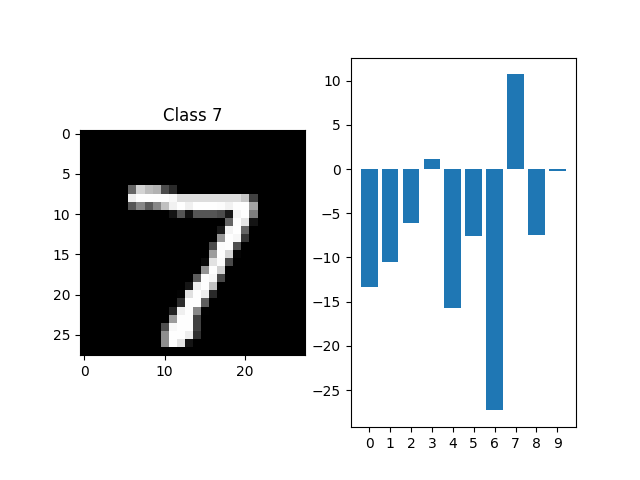

<!DOCTYPE html>
<html class="writer-html5" lang="en" data-content_root="../../">
<head>
  <meta charset="utf-8" /><meta name="viewport" content="width=device-width, initial-scale=1" />

  <meta name="viewport" content="width=device-width, initial-scale=1.0" />
  <title>Global Akida workflow &mdash; Akida Examples  documentation</title>
      <link rel="stylesheet" type="text/css" href="../../_static/pygments.css?v=b86133f3" />
      <link rel="stylesheet" type="text/css" href="../../_static/css/theme.css?v=e59714d7" />
      <link rel="stylesheet" type="text/css" href="../../_static/sg_gallery.css?v=d2d258e8" />
      <link rel="stylesheet" type="text/css" href="../../_static/sg_gallery-binder.css?v=f4aeca0c" />
      <link rel="stylesheet" type="text/css" href="../../_static/sg_gallery-dataframe.css?v=2082cf3c" />
      <link rel="stylesheet" type="text/css" href="../../_static/sg_gallery-rendered-html.css?v=1277b6f3" />
      <link rel="stylesheet" type="text/css" href="../../_static/sphinx-design.min.css?v=95c83b7e" />
      <link rel="stylesheet" type="text/css" href="../../_static/custom.css?v=c4c4e161" />

  
    <link rel="shortcut icon" href="../../_static/favicon.ico"/>
      <script src="../../_static/jquery.js?v=5d32c60e"></script>
      <script src="../../_static/_sphinx_javascript_frameworks_compat.js?v=2cd50e6c"></script>
      <script src="../../_static/documentation_options.js?v=5929fcd5"></script>
      <script src="../../_static/doctools.js?v=9bcbadda"></script>
      <script src="../../_static/sphinx_highlight.js?v=dc90522c"></script>
      <script src="../../_static/design-tabs.js?v=f930bc37"></script>
      <script src="../../_static/leadlander_tag.js?v=d65c0df8"></script>
    <script src="../../_static/js/theme.js"></script>
    <link rel="index" title="Index" href="../../genindex.html" />
    <link rel="search" title="Search" href="../../search.html" />
    <link rel="next" title="AkidaNet/ImageNet inference" href="plot_1_akidanet_imagenet.html" />
    <link rel="prev" title="Akida examples" href="../index.html" /> 
</head>

<body class="wy-body-for-nav"> 
  <div class="wy-grid-for-nav">
    <nav data-toggle="wy-nav-shift" class="wy-nav-side">
      <div class="wy-side-scroll">
        <div class="wy-side-nav-search"  style="background: #000000" >

          
          
          <a href="../../index.html">
            
              
          </a>
<div role="search">
  <form id="rtd-search-form" class="wy-form" action="../../search.html" method="get">
    <input type="text" name="q" placeholder="Search docs" aria-label="Search docs" />
    <input type="hidden" name="check_keywords" value="yes" />
    <input type="hidden" name="area" value="default" />
  </form>
</div>
        </div><div class="wy-menu wy-menu-vertical" data-spy="affix" role="navigation" aria-label="Navigation menu">
              <ul class="current">
<li class="toctree-l1"><a class="reference internal" href="../../index.html">Overview</a></li>
<li class="toctree-l1"><a class="reference internal" href="../../installation.html">Installation</a><ul>
<li class="toctree-l2"><a class="reference internal" href="../../installation.html#supported-configurations">Supported configurations</a></li>
<li class="toctree-l2"><a class="reference internal" href="../../installation.html#quick-installation">Quick installation</a></li>
<li class="toctree-l2"><a class="reference internal" href="../../installation.html#running-examples">Running examples</a></li>
</ul>
</li>
<li class="toctree-l1"><a class="reference internal" href="../../user_guide/user_guide.html">User guide</a><ul>
<li class="toctree-l2"><a class="reference internal" href="../../user_guide/akida.html">Akida user guide</a><ul>
<li class="toctree-l3"><a class="reference internal" href="../../user_guide/akida.html#overview">Overview</a></li>
<li class="toctree-l3"><a class="reference internal" href="../../user_guide/akida.html#programming-interface">Programming interface</a><ul>
<li class="toctree-l4"><a class="reference internal" href="../../user_guide/akida.html#the-akida-model">The Akida Model</a></li>
<li class="toctree-l4"><a class="reference internal" href="../../user_guide/akida.html#akida-layers">Akida layers</a></li>
</ul>
</li>
<li class="toctree-l3"><a class="reference internal" href="../../user_guide/akida.html#model-hardware-mapping">Model Hardware Mapping</a><ul>
<li class="toctree-l4"><a class="reference internal" href="../../user_guide/akida.html#devices">Devices</a></li>
<li class="toctree-l4"><a class="reference internal" href="../../user_guide/akida.html#model-mapping">Model mapping</a></li>
<li class="toctree-l4"><a class="reference internal" href="../../user_guide/akida.html#advanced-mapping-details-and-hardware-devices-usage">Advanced Mapping Details and Hardware Devices Usage</a></li>
<li class="toctree-l4"><a class="reference internal" href="../../user_guide/akida.html#performance-measurement">Performance measurement</a></li>
<li class="toctree-l4"><a class="reference internal" href="../../user_guide/akida.html#command-line-interface-for-model-evaluation">Command-line interface for model evaluation</a></li>
</ul>
</li>
<li class="toctree-l3"><a class="reference internal" href="../../user_guide/akida.html#using-akida-edge-learning">Using Akida Edge learning</a><ul>
<li class="toctree-l4"><a class="reference internal" href="../../user_guide/akida.html#learning-constraints">Learning constraints</a></li>
<li class="toctree-l4"><a class="reference internal" href="../../user_guide/akida.html#compiling-a-layer">Compiling a layer</a></li>
</ul>
</li>
</ul>
</li>
<li class="toctree-l2"><a class="reference internal" href="../../user_guide/quantizeml.html">QuantizeML toolkit</a><ul>
<li class="toctree-l3"><a class="reference internal" href="../../user_guide/quantizeml.html#overview">Overview</a></li>
<li class="toctree-l3"><a class="reference internal" href="../../user_guide/quantizeml.html#the-fixedpoint-representation">The FixedPoint representation</a></li>
<li class="toctree-l3"><a class="reference internal" href="../../user_guide/quantizeml.html#quantization-flow">Quantization flow</a><ul>
<li class="toctree-l4"><a class="reference internal" href="../../user_guide/quantizeml.html#compatibility-constraints">Compatibility constraints</a></li>
<li class="toctree-l4"><a class="reference internal" href="../../user_guide/quantizeml.html#model-loading">Model loading</a></li>
</ul>
</li>
<li class="toctree-l3"><a class="reference internal" href="../../user_guide/quantizeml.html#command-line-interface">Command line interface</a><ul>
<li class="toctree-l4"><a class="reference internal" href="../../user_guide/quantizeml.html#quantize-cli">quantize CLI</a></li>
<li class="toctree-l4"><a class="reference internal" href="../../user_guide/quantizeml.html#config-cli">config CLI</a></li>
<li class="toctree-l4"><a class="reference internal" href="../../user_guide/quantizeml.html#check-cli">check CLI</a></li>
<li class="toctree-l4"><a class="reference internal" href="../../user_guide/quantizeml.html#insert-rescaling-cli">insert_rescaling CLI</a></li>
</ul>
</li>
<li class="toctree-l3"><a class="reference internal" href="../../user_guide/quantizeml.html#supported-layer-types">Supported layer types</a><ul>
<li class="toctree-l4"><a class="reference internal" href="../../user_guide/quantizeml.html#tf-keras-support">TF-Keras support</a></li>
<li class="toctree-l4"><a class="reference internal" href="../../user_guide/quantizeml.html#onnx-support">ONNX support</a></li>
</ul>
</li>
<li class="toctree-l3"><a class="reference internal" href="../../user_guide/quantizeml.html#analysis-module">Analysis module</a><ul>
<li class="toctree-l4"><a class="reference internal" href="../../user_guide/quantizeml.html#kernel-distribution">Kernel distribution</a></li>
<li class="toctree-l4"><a class="reference internal" href="../../user_guide/quantizeml.html#quantization-error">Quantization error</a></li>
<li class="toctree-l4"><a class="reference internal" href="../../user_guide/quantizeml.html#metrics">Metrics</a></li>
<li class="toctree-l4"><a class="reference internal" href="../../user_guide/quantizeml.html#command-line">Command line</a></li>
</ul>
</li>
</ul>
</li>
<li class="toctree-l2"><a class="reference internal" href="../../user_guide/cnn2snn.html">CNN2SNN toolkit</a><ul>
<li class="toctree-l3"><a class="reference internal" href="../../user_guide/cnn2snn.html#overview">Overview</a></li>
<li class="toctree-l3"><a class="reference internal" href="../../user_guide/cnn2snn.html#conversion-flow">Conversion flow</a><ul>
<li class="toctree-l4"><a class="reference internal" href="../../user_guide/cnn2snn.html#conversion-compatibility">Conversion compatibility</a></li>
<li class="toctree-l4"><a class="reference internal" href="../../user_guide/cnn2snn.html#command-line-interface">Command-line interface</a></li>
</ul>
</li>
<li class="toctree-l3"><a class="reference internal" href="../../user_guide/cnn2snn.html#handling-akida-1-0-and-akida-2-0-specificities">Handling Akida 1.0 and Akida 2.0 specificities</a></li>
</ul>
</li>
<li class="toctree-l2"><a class="reference internal" href="../../user_guide/akida_models.html">Akida models zoo</a><ul>
<li class="toctree-l3"><a class="reference internal" href="../../user_guide/akida_models.html#overview">Overview</a></li>
<li class="toctree-l3"><a class="reference internal" href="../../user_guide/akida_models.html#command-line-interface-for-model-creation">Command-line interface for model creation</a></li>
<li class="toctree-l3"><a class="reference internal" href="../../user_guide/akida_models.html#command-line-interface-for-model-training">Command-line interface for model training</a><ul>
<li class="toctree-l4"><a class="reference internal" href="../../user_guide/akida_models.html#kws-training">KWS training</a></li>
<li class="toctree-l4"><a class="reference internal" href="../../user_guide/akida_models.html#akidanet-training">AkidaNet training</a></li>
</ul>
</li>
<li class="toctree-l3"><a class="reference internal" href="../../user_guide/akida_models.html#command-line-interface-for-model-evaluation">Command-line interface for model evaluation</a></li>
<li class="toctree-l3"><a class="reference internal" href="../../user_guide/akida_models.html#command-line-interface-to-display-summary">Command-line interface to display summary</a></li>
<li class="toctree-l3"><a class="reference internal" href="../../user_guide/akida_models.html#command-line-interface-to-display-sparsity">Command-line interface to display sparsity</a></li>
<li class="toctree-l3"><a class="reference internal" href="../../user_guide/akida_models.html#id1">Layer Blocks</a></li>
<li class="toctree-l3"><a class="reference internal" href="../../user_guide/akida_models.html#handling-akida-1-0-and-akida-2-0-specificities">Handling Akida 1.0 and Akida 2.0 specificities</a></li>
</ul>
</li>
<li class="toctree-l2"><a class="reference internal" href="../../user_guide/engine.html">Akida Engine</a><ul>
<li class="toctree-l3"><a class="reference internal" href="../../user_guide/engine.html#overview">Overview</a></li>
<li class="toctree-l3"><a class="reference internal" href="../../user_guide/engine.html#engine-directory-structure">Engine directory structure</a></li>
<li class="toctree-l3"><a class="reference internal" href="../../user_guide/engine.html#engine-api-overview">Engine API overview</a><ul>
<li class="toctree-l4"><a class="reference internal" href="../../user_guide/engine.html#hardwaredriver">HardwareDriver</a></li>
<li class="toctree-l4"><a class="reference internal" href="../../user_guide/engine.html#hardwaredevice">HardwareDevice</a></li>
<li class="toctree-l4"><a class="reference internal" href="../../user_guide/engine.html#dense">Dense</a></li>
<li class="toctree-l4"><a class="reference internal" href="../../user_guide/engine.html#shape">Shape</a></li>
<li class="toctree-l4"><a class="reference internal" href="../../user_guide/engine.html#hwversion">HwVersion</a></li>
<li class="toctree-l4"><a class="reference internal" href="../../user_guide/engine.html#sparse-and-input-conversion-functions">Sparse and Input conversion functions</a></li>
<li class="toctree-l4"><a class="reference internal" href="../../user_guide/engine.html#other-headers-in-the-api">Other headers in the API</a></li>
</ul>
</li>
</ul>
</li>
<li class="toctree-l2"><a class="reference internal" href="../../user_guide/user_guide.html#akida-hw-capabilities">Akida HW capabilities</a><ul>
<li class="toctree-l3"><a class="reference internal" href="../../user_guide/hardware/1.0.html">Akida 1.0 capabilities</a></li>
<li class="toctree-l3"><a class="reference internal" href="../../user_guide/hardware/2.0.html">Akida 2.0 capabilities</a></li>
</ul>
</li>
</ul>
</li>
<li class="toctree-l1"><a class="reference internal" href="../../api_reference/api_reference.html">API reference</a><ul>
<li class="toctree-l2"><a class="reference internal" href="../../api_reference/akida_apis.html">Akida runtime</a><ul>
<li class="toctree-l3"><a class="reference internal" href="../../api_reference/akida_apis.html#akida.__version__"><code class="docutils literal notranslate"><span class="pre">__version__</span></code></a></li>
<li class="toctree-l3"><a class="reference internal" href="../../api_reference/akida_apis.html#model">Model</a><ul>
<li class="toctree-l4"><a class="reference internal" href="../../api_reference/akida_apis.html#akida.Model"><code class="docutils literal notranslate"><span class="pre">Model</span></code></a></li>
</ul>
</li>
<li class="toctree-l3"><a class="reference internal" href="../../api_reference/akida_apis.html#akida-layers">Akida layers</a><ul>
<li class="toctree-l4"><a class="reference internal" href="../../api_reference/akida_apis.html#layer-api">Layer API</a></li>
<li class="toctree-l4"><a class="reference internal" href="../../api_reference/akida_apis.html#common-layer">Common layer</a></li>
<li class="toctree-l4"><a class="reference internal" href="../../api_reference/akida_apis.html#akida-v1-layers">Akida V1 layers</a></li>
<li class="toctree-l4"><a class="reference internal" href="../../api_reference/akida_apis.html#akida-v2-layers">Akida V2 layers</a></li>
</ul>
</li>
<li class="toctree-l3"><a class="reference internal" href="../../api_reference/akida_apis.html#layer-parameters">Layer parameters</a><ul>
<li class="toctree-l4"><a class="reference internal" href="../../api_reference/akida_apis.html#layertype">LayerType</a></li>
<li class="toctree-l4"><a class="reference internal" href="../../api_reference/akida_apis.html#activationtype">ActivationType</a></li>
<li class="toctree-l4"><a class="reference internal" href="../../api_reference/akida_apis.html#padding">Padding</a></li>
<li class="toctree-l4"><a class="reference internal" href="../../api_reference/akida_apis.html#pooltype">PoolType</a></li>
</ul>
</li>
<li class="toctree-l3"><a class="reference internal" href="../../api_reference/akida_apis.html#optimizers">Optimizers</a><ul>
<li class="toctree-l4"><a class="reference internal" href="../../api_reference/akida_apis.html#akida.core.Optimizer"><code class="docutils literal notranslate"><span class="pre">Optimizer</span></code></a></li>
<li class="toctree-l4"><a class="reference internal" href="../../api_reference/akida_apis.html#akida.AkidaUnsupervised"><code class="docutils literal notranslate"><span class="pre">AkidaUnsupervised</span></code></a></li>
</ul>
</li>
<li class="toctree-l3"><a class="reference internal" href="../../api_reference/akida_apis.html#sequence">Sequence</a><ul>
<li class="toctree-l4"><a class="reference internal" href="../../api_reference/akida_apis.html#id1">Sequence</a></li>
<li class="toctree-l4"><a class="reference internal" href="../../api_reference/akida_apis.html#backendtype">BackendType</a></li>
<li class="toctree-l4"><a class="reference internal" href="../../api_reference/akida_apis.html#pass">Pass</a></li>
</ul>
</li>
<li class="toctree-l3"><a class="reference internal" href="../../api_reference/akida_apis.html#device">Device</a><ul>
<li class="toctree-l4"><a class="reference internal" href="../../api_reference/akida_apis.html#id2">Device</a></li>
<li class="toctree-l4"><a class="reference internal" href="../../api_reference/akida_apis.html#hwversion">HwVersion</a></li>
</ul>
</li>
<li class="toctree-l3"><a class="reference internal" href="../../api_reference/akida_apis.html#hwdevice">HWDevice</a><ul>
<li class="toctree-l4"><a class="reference internal" href="../../api_reference/akida_apis.html#id3">HWDevice</a></li>
<li class="toctree-l4"><a class="reference internal" href="../../api_reference/akida_apis.html#socdriver">SocDriver</a></li>
<li class="toctree-l4"><a class="reference internal" href="../../api_reference/akida_apis.html#clockmode">ClockMode</a></li>
</ul>
</li>
<li class="toctree-l3"><a class="reference internal" href="../../api_reference/akida_apis.html#powermeter">PowerMeter</a><ul>
<li class="toctree-l4"><a class="reference internal" href="../../api_reference/akida_apis.html#akida.PowerMeter"><code class="docutils literal notranslate"><span class="pre">PowerMeter</span></code></a></li>
<li class="toctree-l4"><a class="reference internal" href="../../api_reference/akida_apis.html#akida.PowerEvent"><code class="docutils literal notranslate"><span class="pre">PowerEvent</span></code></a></li>
</ul>
</li>
<li class="toctree-l3"><a class="reference internal" href="../../api_reference/akida_apis.html#np">NP</a><ul>
<li class="toctree-l4"><a class="reference internal" href="../../api_reference/akida_apis.html#akida.NP.Mesh"><code class="docutils literal notranslate"><span class="pre">Mesh</span></code></a></li>
<li class="toctree-l4"><a class="reference internal" href="../../api_reference/akida_apis.html#akida.NP.Info"><code class="docutils literal notranslate"><span class="pre">Info</span></code></a></li>
<li class="toctree-l4"><a class="reference internal" href="../../api_reference/akida_apis.html#akida.NP.Ident"><code class="docutils literal notranslate"><span class="pre">Ident</span></code></a></li>
<li class="toctree-l4"><a class="reference internal" href="../../api_reference/akida_apis.html#akida.NP.NpSpace"><code class="docutils literal notranslate"><span class="pre">NpSpace</span></code></a></li>
<li class="toctree-l4"><a class="reference internal" href="../../api_reference/akida_apis.html#akida.NP.Type"><code class="docutils literal notranslate"><span class="pre">Type</span></code></a></li>
<li class="toctree-l4"><a class="reference internal" href="../../api_reference/akida_apis.html#akida.NP.MemoryInfo"><code class="docutils literal notranslate"><span class="pre">MemoryInfo</span></code></a></li>
<li class="toctree-l4"><a class="reference internal" href="../../api_reference/akida_apis.html#akida.NP.Component"><code class="docutils literal notranslate"><span class="pre">Component</span></code></a></li>
<li class="toctree-l4"><a class="reference internal" href="../../api_reference/akida_apis.html#akida.NP.SramSize"><code class="docutils literal notranslate"><span class="pre">SramSize</span></code></a></li>
</ul>
</li>
<li class="toctree-l3"><a class="reference internal" href="../../api_reference/akida_apis.html#mapping">Mapping</a><ul>
<li class="toctree-l4"><a class="reference internal" href="../../api_reference/akida_apis.html#akida.MapMode"><code class="docutils literal notranslate"><span class="pre">MapMode</span></code></a></li>
<li class="toctree-l4"><a class="reference internal" href="../../api_reference/akida_apis.html#akida.MapConstraints"><code class="docutils literal notranslate"><span class="pre">MapConstraints</span></code></a></li>
</ul>
</li>
</ul>
</li>
<li class="toctree-l2"><a class="reference internal" href="../../api_reference/cnn2snn_apis.html">CNN2SNN</a><ul>
<li class="toctree-l3"><a class="reference internal" href="../../api_reference/cnn2snn_apis.html#akida-version">Akida version</a><ul>
<li class="toctree-l4"><a class="reference internal" href="../../api_reference/cnn2snn_apis.html#cnn2snn.AkidaVersion"><code class="docutils literal notranslate"><span class="pre">AkidaVersion</span></code></a></li>
<li class="toctree-l4"><a class="reference internal" href="../../api_reference/cnn2snn_apis.html#cnn2snn.get_akida_version"><code class="docutils literal notranslate"><span class="pre">get_akida_version()</span></code></a></li>
<li class="toctree-l4"><a class="reference internal" href="../../api_reference/cnn2snn_apis.html#cnn2snn.set_akida_version"><code class="docutils literal notranslate"><span class="pre">set_akida_version()</span></code></a></li>
</ul>
</li>
<li class="toctree-l3"><a class="reference internal" href="../../api_reference/cnn2snn_apis.html#conversion">Conversion</a><ul>
<li class="toctree-l4"><a class="reference internal" href="../../api_reference/cnn2snn_apis.html#cnn2snn.convert"><code class="docutils literal notranslate"><span class="pre">convert()</span></code></a></li>
<li class="toctree-l4"><a class="reference internal" href="../../api_reference/cnn2snn_apis.html#cnn2snn.check_model_compatibility"><code class="docutils literal notranslate"><span class="pre">check_model_compatibility()</span></code></a></li>
</ul>
</li>
</ul>
</li>
<li class="toctree-l2"><a class="reference internal" href="../../api_reference/quantizeml_apis.html">QuantizeML</a><ul>
<li class="toctree-l3"><a class="reference internal" href="../../api_reference/quantizeml_apis.html#layers">Layers</a><ul>
<li class="toctree-l4"><a class="reference internal" href="../../api_reference/quantizeml_apis.html#reshaping">Reshaping</a></li>
<li class="toctree-l4"><a class="reference internal" href="../../api_reference/quantizeml_apis.html#activations">Activations</a></li>
<li class="toctree-l4"><a class="reference internal" href="../../api_reference/quantizeml_apis.html#convolution">Convolution</a></li>
<li class="toctree-l4"><a class="reference internal" href="../../api_reference/quantizeml_apis.html#depthwise-convolution">Depthwise convolution</a></li>
<li class="toctree-l4"><a class="reference internal" href="../../api_reference/quantizeml_apis.html#separable-convolution">Separable convolution</a></li>
<li class="toctree-l4"><a class="reference internal" href="../../api_reference/quantizeml_apis.html#temporal-convolution">Temporal convolution</a></li>
<li class="toctree-l4"><a class="reference internal" href="../../api_reference/quantizeml_apis.html#dense">Dense</a></li>
<li class="toctree-l4"><a class="reference internal" href="../../api_reference/quantizeml_apis.html#skip-connection">Skip connection</a></li>
<li class="toctree-l4"><a class="reference internal" href="../../api_reference/quantizeml_apis.html#pooling">Pooling</a></li>
<li class="toctree-l4"><a class="reference internal" href="../../api_reference/quantizeml_apis.html#rescaling">Rescaling</a></li>
<li class="toctree-l4"><a class="reference internal" href="../../api_reference/quantizeml_apis.html#dropout">Dropout</a></li>
<li class="toctree-l4"><a class="reference internal" href="../../api_reference/quantizeml_apis.html#quantizers">Quantizers</a></li>
<li class="toctree-l4"><a class="reference internal" href="../../api_reference/quantizeml_apis.html#calibration">Calibration</a></li>
<li class="toctree-l4"><a class="reference internal" href="../../api_reference/quantizeml_apis.html#recording">Recording</a></li>
</ul>
</li>
<li class="toctree-l3"><a class="reference internal" href="../../api_reference/quantizeml_apis.html#models">Models</a><ul>
<li class="toctree-l4"><a class="reference internal" href="../../api_reference/quantizeml_apis.html#quantization">Quantization</a></li>
<li class="toctree-l4"><a class="reference internal" href="../../api_reference/quantizeml_apis.html#quantization-parameters">Quantization parameters</a></li>
<li class="toctree-l4"><a class="reference internal" href="../../api_reference/quantizeml_apis.html#id1">Calibration</a></li>
<li class="toctree-l4"><a class="reference internal" href="../../api_reference/quantizeml_apis.html#utils">Utils</a></li>
<li class="toctree-l4"><a class="reference internal" href="../../api_reference/quantizeml_apis.html#reset-buffers">Reset buffers</a></li>
</ul>
</li>
<li class="toctree-l3"><a class="reference internal" href="../../api_reference/quantizeml_apis.html#tensors">Tensors</a><ul>
<li class="toctree-l4"><a class="reference internal" href="../../api_reference/quantizeml_apis.html#qtensor">QTensor</a></li>
<li class="toctree-l4"><a class="reference internal" href="../../api_reference/quantizeml_apis.html#fixedpoint">FixedPoint</a></li>
<li class="toctree-l4"><a class="reference internal" href="../../api_reference/quantizeml_apis.html#qfloat">QFloat</a></li>
</ul>
</li>
<li class="toctree-l3"><a class="reference internal" href="../../api_reference/quantizeml_apis.html#onnx-support">ONNX support</a><ul>
<li class="toctree-l4"><a class="reference internal" href="../../api_reference/quantizeml_apis.html#id2">Layers</a></li>
<li class="toctree-l4"><a class="reference internal" href="../../api_reference/quantizeml_apis.html#custom-patterns">Custom patterns</a></li>
</ul>
</li>
<li class="toctree-l3"><a class="reference internal" href="../../api_reference/quantizeml_apis.html#model-i-o">Model I/O</a><ul>
<li class="toctree-l4"><a class="reference internal" href="../../api_reference/quantizeml_apis.html#quantizeml.load_model"><code class="docutils literal notranslate"><span class="pre">load_model()</span></code></a></li>
<li class="toctree-l4"><a class="reference internal" href="../../api_reference/quantizeml_apis.html#quantizeml.save_model"><code class="docutils literal notranslate"><span class="pre">save_model()</span></code></a></li>
</ul>
</li>
<li class="toctree-l3"><a class="reference internal" href="../../api_reference/quantizeml_apis.html#analysis">Analysis</a><ul>
<li class="toctree-l4"><a class="reference internal" href="../../api_reference/quantizeml_apis.html#kernel-distribution">Kernel distribution</a></li>
<li class="toctree-l4"><a class="reference internal" href="../../api_reference/quantizeml_apis.html#quantization-error">Quantization error</a></li>
<li class="toctree-l4"><a class="reference internal" href="../../api_reference/quantizeml_apis.html#metrics">Metrics</a></li>
</ul>
</li>
</ul>
</li>
<li class="toctree-l2"><a class="reference internal" href="../../api_reference/akida_models_apis.html">Akida models</a><ul>
<li class="toctree-l3"><a class="reference internal" href="../../api_reference/akida_models_apis.html#layer-blocks">Layer blocks</a><ul>
<li class="toctree-l4"><a class="reference internal" href="../../api_reference/akida_models_apis.html#cnn-blocks">CNN blocks</a></li>
<li class="toctree-l4"><a class="reference internal" href="../../api_reference/akida_models_apis.html#transposed-blocks">Transposed blocks</a></li>
<li class="toctree-l4"><a class="reference internal" href="../../api_reference/akida_models_apis.html#detection-block">Detection block</a></li>
<li class="toctree-l4"><a class="reference internal" href="../../api_reference/akida_models_apis.html#spatiotemporal-blocks">Spatiotemporal blocks</a></li>
</ul>
</li>
<li class="toctree-l3"><a class="reference internal" href="../../api_reference/akida_models_apis.html#helpers">Helpers</a><ul>
<li class="toctree-l4"><a class="reference internal" href="../../api_reference/akida_models_apis.html#gamma-constraint">Gamma constraint</a></li>
<li class="toctree-l4"><a class="reference internal" href="../../api_reference/akida_models_apis.html#unfusing-separableconvolutional">Unfusing SeparableConvolutional</a></li>
<li class="toctree-l4"><a class="reference internal" href="../../api_reference/akida_models_apis.html#extract-samples">Extract samples</a></li>
</ul>
</li>
<li class="toctree-l3"><a class="reference internal" href="../../api_reference/akida_models_apis.html#knowledge-distillation">Knowledge distillation</a><ul>
<li class="toctree-l4"><a class="reference internal" href="../../api_reference/akida_models_apis.html#akida_models.distiller.Distiller"><code class="docutils literal notranslate"><span class="pre">Distiller</span></code></a></li>
</ul>
</li>
<li class="toctree-l3"><a class="reference internal" href="../../api_reference/akida_models_apis.html#sparsity">Sparsity</a><ul>
<li class="toctree-l4"><a class="reference internal" href="../../api_reference/akida_models_apis.html#akida_models.sparsity.compute_sparsity"><code class="docutils literal notranslate"><span class="pre">compute_sparsity()</span></code></a></li>
</ul>
</li>
<li class="toctree-l3"><a class="reference internal" href="../../api_reference/akida_models_apis.html#model-i-o">Model I/O</a><ul>
<li class="toctree-l4"><a class="reference internal" href="../../api_reference/akida_models_apis.html#akida_models.model_io.load_model"><code class="docutils literal notranslate"><span class="pre">load_model()</span></code></a></li>
<li class="toctree-l4"><a class="reference internal" href="../../api_reference/akida_models_apis.html#akida_models.model_io.load_weights"><code class="docutils literal notranslate"><span class="pre">load_weights()</span></code></a></li>
<li class="toctree-l4"><a class="reference internal" href="../../api_reference/akida_models_apis.html#akida_models.model_io.save_weights"><code class="docutils literal notranslate"><span class="pre">save_weights()</span></code></a></li>
<li class="toctree-l4"><a class="reference internal" href="../../api_reference/akida_models_apis.html#akida_models.model_io.get_model_path"><code class="docutils literal notranslate"><span class="pre">get_model_path()</span></code></a></li>
</ul>
</li>
<li class="toctree-l3"><a class="reference internal" href="../../api_reference/akida_models_apis.html#utils">Utils</a><ul>
<li class="toctree-l4"><a class="reference internal" href="../../api_reference/akida_models_apis.html#akida_models.utils.fetch_file"><code class="docutils literal notranslate"><span class="pre">fetch_file()</span></code></a></li>
<li class="toctree-l4"><a class="reference internal" href="../../api_reference/akida_models_apis.html#akida_models.utils.get_tensorboard_callback"><code class="docutils literal notranslate"><span class="pre">get_tensorboard_callback()</span></code></a></li>
<li class="toctree-l4"><a class="reference internal" href="../../api_reference/akida_models_apis.html#akida_models.utils.get_params_by_version"><code class="docutils literal notranslate"><span class="pre">get_params_by_version()</span></code></a></li>
</ul>
</li>
<li class="toctree-l3"><a class="reference internal" href="../../api_reference/akida_models_apis.html#model-zoo">Model zoo</a><ul>
<li class="toctree-l4"><a class="reference internal" href="../../api_reference/akida_models_apis.html#akidanet">AkidaNet</a></li>
<li class="toctree-l4"><a class="reference internal" href="../../api_reference/akida_models_apis.html#mobilenet">Mobilenet</a></li>
<li class="toctree-l4"><a class="reference internal" href="../../api_reference/akida_models_apis.html#ds-cnn">DS-CNN</a></li>
<li class="toctree-l4"><a class="reference internal" href="../../api_reference/akida_models_apis.html#vgg">VGG</a></li>
<li class="toctree-l4"><a class="reference internal" href="../../api_reference/akida_models_apis.html#yolo">YOLO</a></li>
<li class="toctree-l4"><a class="reference internal" href="../../api_reference/akida_models_apis.html#pointnet">PointNet++</a></li>
<li class="toctree-l4"><a class="reference internal" href="../../api_reference/akida_models_apis.html#gxnor">GXNOR</a></li>
<li class="toctree-l4"><a class="reference internal" href="../../api_reference/akida_models_apis.html#centernet">CenterNet</a></li>
<li class="toctree-l4"><a class="reference internal" href="../../api_reference/akida_models_apis.html#akidaunet">AkidaUNet</a></li>
<li class="toctree-l4"><a class="reference internal" href="../../api_reference/akida_models_apis.html#spatiotemporal-tenns">Spatiotemporal TENNs</a></li>
</ul>
</li>
</ul>
</li>
<li class="toctree-l2"><a class="reference internal" href="../../api_reference/tenns_modules_apis.html">TENNs modules</a><ul>
<li class="toctree-l3"><a class="reference internal" href="../../api_reference/tenns_modules_apis.html#spatiotemporal-blocks">Spatiotemporal blocks</a><ul>
<li class="toctree-l4"><a class="reference internal" href="../../api_reference/tenns_modules_apis.html#tenns_modules.SpatialBlock"><code class="docutils literal notranslate"><span class="pre">SpatialBlock</span></code></a></li>
<li class="toctree-l4"><a class="reference internal" href="../../api_reference/tenns_modules_apis.html#tenns_modules.TemporalBlock"><code class="docutils literal notranslate"><span class="pre">TemporalBlock</span></code></a></li>
<li class="toctree-l4"><a class="reference internal" href="../../api_reference/tenns_modules_apis.html#tenns_modules.SpatioTemporalBlock"><code class="docutils literal notranslate"><span class="pre">SpatioTemporalBlock</span></code></a></li>
</ul>
</li>
<li class="toctree-l3"><a class="reference internal" href="../../api_reference/tenns_modules_apis.html#export">Export</a><ul>
<li class="toctree-l4"><a class="reference internal" href="../../api_reference/tenns_modules_apis.html#tenns_modules.export_to_onnx"><code class="docutils literal notranslate"><span class="pre">export_to_onnx()</span></code></a></li>
</ul>
</li>
</ul>
</li>
</ul>
</li>
<li class="toctree-l1 current"><a class="reference internal" href="../index.html">Examples</a><ul class="current">
<li class="toctree-l2 current"><a class="reference internal" href="../index.html#general-examples">General examples</a><ul class="current">
<li class="toctree-l3 current"><a class="current reference internal" href="#">Global Akida workflow</a><ul>
<li class="toctree-l4"><a class="reference internal" href="#create-and-train">1. Create and train</a></li>
<li class="toctree-l4"><a class="reference internal" href="#quantize">2. Quantize</a></li>
<li class="toctree-l4"><a class="reference internal" href="#convert">3. Convert</a></li>
</ul>
</li>
<li class="toctree-l3"><a class="reference internal" href="plot_1_akidanet_imagenet.html">AkidaNet/ImageNet inference</a><ul>
<li class="toctree-l4"><a class="reference internal" href="plot_1_akidanet_imagenet.html#dataset-preparation">1. Dataset preparation</a></li>
<li class="toctree-l4"><a class="reference internal" href="plot_1_akidanet_imagenet.html#pretrained-quantized-model">2. Pretrained quantized model</a></li>
<li class="toctree-l4"><a class="reference internal" href="plot_1_akidanet_imagenet.html#conversion-to-akida">3. Conversion to Akida</a></li>
<li class="toctree-l4"><a class="reference internal" href="plot_1_akidanet_imagenet.html#hardware-mapping-and-performance">4. Hardware mapping and performance</a></li>
</ul>
</li>
<li class="toctree-l3"><a class="reference internal" href="plot_2_ds_cnn_kws.html">DS-CNN/KWS inference</a><ul>
<li class="toctree-l4"><a class="reference internal" href="plot_2_ds_cnn_kws.html#load-the-preprocessed-dataset">1. Load the preprocessed dataset</a></li>
<li class="toctree-l4"><a class="reference internal" href="plot_2_ds_cnn_kws.html#load-a-pre-trained-native-tf-keras-model">2. Load a pre-trained native TF-Keras model</a></li>
<li class="toctree-l4"><a class="reference internal" href="plot_2_ds_cnn_kws.html#load-a-pre-trained-quantized-tf-keras-model">3. Load a pre-trained quantized TF-Keras model</a></li>
<li class="toctree-l4"><a class="reference internal" href="plot_2_ds_cnn_kws.html#conversion-to-akida">4. Conversion to Akida</a></li>
<li class="toctree-l4"><a class="reference internal" href="plot_2_ds_cnn_kws.html#confusion-matrix">5. Confusion matrix</a></li>
</ul>
</li>
<li class="toctree-l3"><a class="reference internal" href="plot_3_regression.html">Age estimation (regression) example</a><ul>
<li class="toctree-l4"><a class="reference internal" href="plot_3_regression.html#load-the-utkface-dataset">1. Load the UTKFace Dataset</a></li>
<li class="toctree-l4"><a class="reference internal" href="plot_3_regression.html#load-a-pre-trained-native-tf-keras-model">2. Load a pre-trained native TF-Keras model</a></li>
<li class="toctree-l4"><a class="reference internal" href="plot_3_regression.html#load-a-pre-trained-quantized-tf-keras-model">3. Load a pre-trained quantized TF-Keras model</a></li>
<li class="toctree-l4"><a class="reference internal" href="plot_3_regression.html#conversion-to-akida">4. Conversion to Akida</a></li>
<li class="toctree-l4"><a class="reference internal" href="plot_3_regression.html#estimate-age-on-a-single-image">5. Estimate age on a single image</a></li>
</ul>
</li>
<li class="toctree-l3"><a class="reference internal" href="plot_4_transfer_learning.html">Transfer learning with AkidaNet for PlantVillage</a><ul>
<li class="toctree-l4"><a class="reference internal" href="plot_4_transfer_learning.html#transfer-learning-process">Transfer learning process</a></li>
<li class="toctree-l4"><a class="reference internal" href="plot_4_transfer_learning.html#dataset-preparation">1. Dataset preparation</a></li>
<li class="toctree-l4"><a class="reference internal" href="plot_4_transfer_learning.html#get-a-trained-akidanet-base-model">2. Get a trained AkidaNet base model</a></li>
<li class="toctree-l4"><a class="reference internal" href="plot_4_transfer_learning.html#add-a-classification-head-to-the-model">3. Add a classification head to the model</a></li>
<li class="toctree-l4"><a class="reference internal" href="plot_4_transfer_learning.html#train-for-a-few-epochs">4. Train for a few epochs</a></li>
<li class="toctree-l4"><a class="reference internal" href="plot_4_transfer_learning.html#quantize-the-model">5. Quantize the model</a></li>
<li class="toctree-l4"><a class="reference internal" href="plot_4_transfer_learning.html#compute-accuracy">6. Compute accuracy</a></li>
</ul>
</li>
<li class="toctree-l3"><a class="reference internal" href="plot_5_voc_yolo_detection.html">YOLO/PASCAL-VOC detection tutorial</a><ul>
<li class="toctree-l4"><a class="reference internal" href="plot_5_voc_yolo_detection.html#introduction">1. Introduction</a></li>
<li class="toctree-l4"><a class="reference internal" href="plot_5_voc_yolo_detection.html#preprocessing-tools">2. Preprocessing tools</a></li>
<li class="toctree-l4"><a class="reference internal" href="plot_5_voc_yolo_detection.html#model-architecture">3. Model architecture</a></li>
<li class="toctree-l4"><a class="reference internal" href="plot_5_voc_yolo_detection.html#training">4. Training</a></li>
<li class="toctree-l4"><a class="reference internal" href="plot_5_voc_yolo_detection.html#performance">5. Performance</a></li>
<li class="toctree-l4"><a class="reference internal" href="plot_5_voc_yolo_detection.html#conversion-to-akida">6. Conversion to Akida</a></li>
</ul>
</li>
<li class="toctree-l3"><a class="reference internal" href="plot_6_segmentation.html">Segmentation tutorial</a><ul>
<li class="toctree-l4"><a class="reference internal" href="plot_6_segmentation.html#load-the-dataset">1. Load the dataset</a></li>
<li class="toctree-l4"><a class="reference internal" href="plot_6_segmentation.html#load-a-pre-trained-native-tf-keras-model">2. Load a pre-trained native TF-Keras model</a></li>
<li class="toctree-l4"><a class="reference internal" href="plot_6_segmentation.html#load-a-pre-trained-quantized-keras-model">3. Load a pre-trained quantized Keras model</a></li>
<li class="toctree-l4"><a class="reference internal" href="plot_6_segmentation.html#conversion-to-akida">4. Conversion to Akida</a></li>
<li class="toctree-l4"><a class="reference internal" href="plot_6_segmentation.html#segment-a-single-image">5. Segment a single image</a></li>
</ul>
</li>
<li class="toctree-l3"><a class="reference internal" href="plot_7_global_pytorch_workflow.html">PyTorch to Akida workflow</a><ul>
<li class="toctree-l4"><a class="reference internal" href="plot_7_global_pytorch_workflow.html#create-and-train">1. Create and train</a></li>
<li class="toctree-l4"><a class="reference internal" href="plot_7_global_pytorch_workflow.html#export">2. Export</a></li>
<li class="toctree-l4"><a class="reference internal" href="plot_7_global_pytorch_workflow.html#quantize">3. Quantize</a></li>
<li class="toctree-l4"><a class="reference internal" href="plot_7_global_pytorch_workflow.html#convert">4. Convert</a></li>
</ul>
</li>
</ul>
</li>
<li class="toctree-l2"><a class="reference internal" href="../index.html#quantization">Quantization</a><ul>
<li class="toctree-l3"><a class="reference internal" href="../quantization/plot_0_advanced_quantizeml.html">Advanced QuantizeML tutorial</a><ul>
<li class="toctree-l4"><a class="reference internal" href="../quantization/plot_0_advanced_quantizeml.html#defining-a-quantization-scheme">1. Defining a quantization scheme</a></li>
<li class="toctree-l4"><a class="reference internal" href="../quantization/plot_0_advanced_quantizeml.html#calibration">2. Calibration</a></li>
</ul>
</li>
<li class="toctree-l3"><a class="reference internal" href="../quantization/plot_1_upgrading_to_2.0.html">Upgrading to Akida 2.0</a><ul>
<li class="toctree-l4"><a class="reference internal" href="../quantization/plot_1_upgrading_to_2.0.html#workflow-differences">1. Workflow differences</a></li>
<li class="toctree-l4"><a class="reference internal" href="../quantization/plot_1_upgrading_to_2.0.html#models-architecture-differences">2. Models architecture differences</a></li>
<li class="toctree-l4"><a class="reference internal" href="../quantization/plot_1_upgrading_to_2.0.html#using-akidaversion">3. Using <code class="docutils literal notranslate"><span class="pre">AkidaVersion</span></code></a></li>
</ul>
</li>
<li class="toctree-l3"><a class="reference internal" href="../quantization/plot_2_off_the_shelf_quantization.html">Off-the-shelf models quantization</a><ul>
<li class="toctree-l4"><a class="reference internal" href="../quantization/plot_2_off_the_shelf_quantization.html#workflow-overview">1. Workflow overview</a></li>
<li class="toctree-l4"><a class="reference internal" href="../quantization/plot_2_off_the_shelf_quantization.html#data-preparation">2. Data preparation</a></li>
<li class="toctree-l4"><a class="reference internal" href="../quantization/plot_2_off_the_shelf_quantization.html#download-and-export">3. Download and export</a></li>
<li class="toctree-l4"><a class="reference internal" href="../quantization/plot_2_off_the_shelf_quantization.html#quantize">4. Quantize</a></li>
<li class="toctree-l4"><a class="reference internal" href="../quantization/plot_2_off_the_shelf_quantization.html#convert-to-akida">5. Convert to Akida</a></li>
</ul>
</li>
<li class="toctree-l3"><a class="reference internal" href="../quantization/plot_3_custom_patterns.html">Advanced ONNX models quantization</a><ul>
<li class="toctree-l4"><a class="reference internal" href="../quantization/plot_3_custom_patterns.html#get-model-and-data">1. Get model and data</a></li>
<li class="toctree-l4"><a class="reference internal" href="../quantization/plot_3_custom_patterns.html#quantize">2. Quantize</a></li>
<li class="toctree-l4"><a class="reference internal" href="../quantization/plot_3_custom_patterns.html#conversion">3. Conversion</a></li>
</ul>
</li>
</ul>
</li>
<li class="toctree-l2"><a class="reference internal" href="../index.html#spatiotemporal-examples">Spatiotemporal examples</a><ul>
<li class="toctree-l3"><a class="reference internal" href="../spatiotemporal/plot_0_introduction_to_spatiotemporal_models.html">Gesture recognition with spatiotemporal models</a><ul>
<li class="toctree-l4"><a class="reference internal" href="../spatiotemporal/plot_0_introduction_to_spatiotemporal_models.html#introduction-why-spatiotemporal-models">1. Introduction: why spatiotemporal models?</a></li>
<li class="toctree-l4"><a class="reference internal" href="../spatiotemporal/plot_0_introduction_to_spatiotemporal_models.html#spatiotemporal-blocks-the-core-concept">2. Spatiotemporal blocks: the core concept</a></li>
<li class="toctree-l4"><a class="reference internal" href="../spatiotemporal/plot_0_introduction_to_spatiotemporal_models.html#building-the-model-from-blocks-to-network">3. Building the model: from blocks to network</a></li>
<li class="toctree-l4"><a class="reference internal" href="../spatiotemporal/plot_0_introduction_to_spatiotemporal_models.html#gesture-classification-in-videos">4. Gesture classification in videos</a></li>
<li class="toctree-l4"><a class="reference internal" href="../spatiotemporal/plot_0_introduction_to_spatiotemporal_models.html#training-and-evaluating-the-model">5. Training and evaluating the model</a></li>
<li class="toctree-l4"><a class="reference internal" href="../spatiotemporal/plot_0_introduction_to_spatiotemporal_models.html#streaming-inference-making-real-time-predictions">6. Streaming inference: making real-time predictions</a></li>
<li class="toctree-l4"><a class="reference internal" href="../spatiotemporal/plot_0_introduction_to_spatiotemporal_models.html#visualizing-the-predictions-of-the-model-in-real-time">7. Visualizing the predictions of the model in real time</a></li>
<li class="toctree-l4"><a class="reference internal" href="../spatiotemporal/plot_0_introduction_to_spatiotemporal_models.html#quantizing-the-model-and-convertion-to-akida">8. Quantizing the model and convertion to akida</a></li>
<li class="toctree-l4"><a class="reference internal" href="../spatiotemporal/plot_0_introduction_to_spatiotemporal_models.html#final-thoughts-generalizing-the-approach">9. Final thoughts: generalizing the approach</a></li>
</ul>
</li>
<li class="toctree-l3"><a class="reference internal" href="../spatiotemporal/plot_1_eye_tracking_cvpr.html">Efficient online eye tracking with a lightweight spatiotemporal network and event cameras</a><ul>
<li class="toctree-l4"><a class="reference internal" href="../spatiotemporal/plot_1_eye_tracking_cvpr.html#introduction">1. Introduction</a></li>
<li class="toctree-l4"><a class="reference internal" href="../spatiotemporal/plot_1_eye_tracking_cvpr.html#network-architecture">2. Network architecture</a></li>
<li class="toctree-l4"><a class="reference internal" href="../spatiotemporal/plot_1_eye_tracking_cvpr.html#dataset-and-preprocessing">3. Dataset and preprocessing</a></li>
<li class="toctree-l4"><a class="reference internal" href="../spatiotemporal/plot_1_eye_tracking_cvpr.html#model-training-evaluation">4. Model training &amp; evaluation</a></li>
<li class="toctree-l4"><a class="reference internal" href="../spatiotemporal/plot_1_eye_tracking_cvpr.html#official-competition-results">5. Official competition results</a></li>
<li class="toctree-l4"><a class="reference internal" href="../spatiotemporal/plot_1_eye_tracking_cvpr.html#ablation-studies-and-efficiency-optimization">6. Ablation studies and efficiency optimization</a></li>
<li class="toctree-l4"><a class="reference internal" href="../spatiotemporal/plot_1_eye_tracking_cvpr.html#fifo-buffering-for-streaming-inference">7. FIFO buffering for streaming inference</a></li>
<li class="toctree-l4"><a class="reference internal" href="../spatiotemporal/plot_1_eye_tracking_cvpr.html#quantization-and-conversion-to-akida">8. Quantization and conversion to Akida</a></li>
</ul>
</li>
</ul>
</li>
<li class="toctree-l2"><a class="reference internal" href="../index.html#edge-examples-akida-1-0-only">Edge examples (Akida 1.0 only)</a><ul>
<li class="toctree-l3"><a class="reference internal" href="../edge/plot_0_edge_learning_vision.html">Akida vision edge learning</a><ul>
<li class="toctree-l4"><a class="reference internal" href="../edge/plot_0_edge_learning_vision.html#dataset-preparation">1. Dataset preparation</a></li>
<li class="toctree-l4"><a class="reference internal" href="../edge/plot_0_edge_learning_vision.html#prepare-akida-model-for-learning">2. Prepare Akida model for learning</a></li>
<li class="toctree-l4"><a class="reference internal" href="../edge/plot_0_edge_learning_vision.html#edge-learning-with-akida">3. Edge learning with Akida</a></li>
</ul>
</li>
<li class="toctree-l3"><a class="reference internal" href="../edge/plot_1_edge_learning_kws.html">Akida edge learning for keyword spotting</a><ul>
<li class="toctree-l4"><a class="reference internal" href="../edge/plot_1_edge_learning_kws.html#edge-learning-process">1. Edge learning process</a></li>
<li class="toctree-l4"><a class="reference internal" href="../edge/plot_1_edge_learning_kws.html#dataset-preparation">2. Dataset preparation</a></li>
<li class="toctree-l4"><a class="reference internal" href="../edge/plot_1_edge_learning_kws.html#prepare-akida-model-for-learning">3. Prepare Akida model for learning</a></li>
<li class="toctree-l4"><a class="reference internal" href="../edge/plot_1_edge_learning_kws.html#learn-with-akida-using-the-training-set">4. Learn with Akida using the training set</a></li>
<li class="toctree-l4"><a class="reference internal" href="../edge/plot_1_edge_learning_kws.html#edge-learning">5. Edge learning</a></li>
</ul>
</li>
<li class="toctree-l3"><a class="reference internal" href="../edge/plot_2_edge_learning_parameters.html">Tips to set Akida edge learning parameters</a><ul>
<li class="toctree-l4"><a class="reference internal" href="../edge/plot_2_edge_learning_parameters.html#akida-learning-parameters">1. Akida learning parameters</a></li>
<li class="toctree-l4"><a class="reference internal" href="../edge/plot_2_edge_learning_parameters.html#create-akida-model">2. Create Akida model</a></li>
<li class="toctree-l4"><a class="reference internal" href="../edge/plot_2_edge_learning_parameters.html#estimate-the-required-number-of-weights-of-the-trainable-layer">3. Estimate the required number of weights of the trainable layer</a></li>
<li class="toctree-l4"><a class="reference internal" href="../edge/plot_2_edge_learning_parameters.html#estimate-the-number-of-neurons-per-class">4. Estimate the number of neurons per class</a></li>
</ul>
</li>
</ul>
</li>
</ul>
</li>
<li class="toctree-l1"><a class="reference internal" href="../../model_zoo_performance.html">Model zoo performance</a><ul>
<li class="toctree-l2"><a class="reference internal" href="../../model_zoo_performance.html#akida-1-0-models">Akida 1.0 models</a><ul>
<li class="toctree-l3"><a class="reference internal" href="../../model_zoo_performance.html#image-icon-ref-image-domain"> Image domain</a><ul>
<li class="toctree-l4"><a class="reference internal" href="../../model_zoo_performance.html#classification">Classification</a></li>
<li class="toctree-l4"><a class="reference internal" href="../../model_zoo_performance.html#object-detection">Object detection</a></li>
<li class="toctree-l4"><a class="reference internal" href="../../model_zoo_performance.html#regression">Regression</a></li>
<li class="toctree-l4"><a class="reference internal" href="../../model_zoo_performance.html#face-recognition">Face recognition</a></li>
</ul>
</li>
<li class="toctree-l3"><a class="reference internal" href="../../model_zoo_performance.html#audio-icon-ref-audio-domain"> Audio domain</a><ul>
<li class="toctree-l4"><a class="reference internal" href="../../model_zoo_performance.html#keyword-spotting">Keyword spotting</a></li>
</ul>
</li>
<li class="toctree-l3"><a class="reference internal" href="../../model_zoo_performance.html#pointcloud-icon-ref-point-cloud"> Point cloud</a><ul>
<li class="toctree-l4"><a class="reference internal" href="../../model_zoo_performance.html#id1">Classification</a></li>
</ul>
</li>
</ul>
</li>
<li class="toctree-l2"><a class="reference internal" href="../../model_zoo_performance.html#akida-2-0-models">Akida 2.0 models</a><ul>
<li class="toctree-l3"><a class="reference internal" href="../../model_zoo_performance.html#id2"> Image domain</a><ul>
<li class="toctree-l4"><a class="reference internal" href="../../model_zoo_performance.html#id3">Classification</a></li>
<li class="toctree-l4"><a class="reference internal" href="../../model_zoo_performance.html#id4">Object detection</a></li>
<li class="toctree-l4"><a class="reference internal" href="../../model_zoo_performance.html#id7">Regression</a></li>
<li class="toctree-l4"><a class="reference internal" href="../../model_zoo_performance.html#id8">Face recognition</a></li>
<li class="toctree-l4"><a class="reference internal" href="../../model_zoo_performance.html#segmentation">Segmentation</a></li>
</ul>
</li>
<li class="toctree-l3"><a class="reference internal" href="../../model_zoo_performance.html#id10"> Audio domain</a><ul>
<li class="toctree-l4"><a class="reference internal" href="../../model_zoo_performance.html#id11">Keyword spotting</a></li>
</ul>
</li>
<li class="toctree-l3"><a class="reference internal" href="../../model_zoo_performance.html#id12"> Point cloud</a><ul>
<li class="toctree-l4"><a class="reference internal" href="../../model_zoo_performance.html#id13">Classification</a></li>
</ul>
</li>
<li class="toctree-l3"><a class="reference internal" href="../../model_zoo_performance.html#tenns-icon-ref-tenns"> TENNs</a><ul>
<li class="toctree-l4"><a class="reference internal" href="../../model_zoo_performance.html#gesture-recognition">Gesture recognition</a></li>
<li class="toctree-l4"><a class="reference internal" href="../../model_zoo_performance.html#eye-tracking">Eye tracking</a></li>
</ul>
</li>
</ul>
</li>
</ul>
</li>
<li class="toctree-l1"><a class="reference internal" href="../../changelog.html">Changelog</a><ul>
<li class="toctree-l2"><a class="reference internal" href="../../changelog.html#metatf-beta">MetaTF Beta</a></li>
</ul>
</li>
<li class="toctree-l1"><a class="reference external" href="https://support.brainchip.com/portal/home">Support</a></li>
<li class="toctree-l1"><a class="reference internal" href="../../license.html">License</a></li>
</ul>

        </div>
      </div>
    </nav>

    <section data-toggle="wy-nav-shift" class="wy-nav-content-wrap"><nav class="wy-nav-top" aria-label="Mobile navigation menu"  style="background: #000000" >
          <i data-toggle="wy-nav-top" class="fa fa-bars"></i>
          <a href="../../index.html">Akida Examples</a>
      </nav>

      <div class="wy-nav-content">
        <div class="rst-content">
          <div role="navigation" aria-label="Page navigation">
  <ul class="wy-breadcrumbs">
      <li><a href="../../index.html" class="icon icon-home" aria-label="Home"></a></li>
          <li class="breadcrumb-item"><a href="../index.html">Akida examples</a></li>
      <li class="breadcrumb-item active">Global Akida workflow</li>
      <li class="wy-breadcrumbs-aside">
      </li>
  </ul>
  <hr/>
</div>
          <div role="main" class="document" itemscope="itemscope" itemtype="http://schema.org/Article">
           <div itemprop="articleBody">
             
  <div class="sphx-glr-download-link-note admonition note">
<p class="admonition-title">Note</p>
<p><a class="reference internal" href="#sphx-glr-download-examples-general-plot-0-global-workflow-py"><span class="std std-ref">Go to the end</span></a>
to download the full example code.</p>
</div>
<section class="sphx-glr-example-title" id="global-akida-workflow">
<span id="sphx-glr-examples-general-plot-0-global-workflow-py"></span><h1>Global Akida workflow<a class="headerlink" href="#global-akida-workflow" title="Link to this heading"></a></h1>
<p>Using the MNIST dataset, this example shows the definition and training of a TF-Keras
floating point model, its quantization to 8-bit with the help of calibration,
its quantization to 4-bit using QAT and its conversion to Akida.
Notice that the performance of the original TF-Keras floating point model is maintained
throughout the Akida flow.
Please refer to the <a class="reference external" href="../../user_guide/akida.html">Akida user guide</a> for further information.</p>
<div class="admonition note">
<p class="admonition-title">Note</p>
<p>Please refer to the TensorFlow  <a class="reference external" href="https://www.tensorflow.org/api_docs/python/tf/keras/models">tf_keras.models</a>
module for model creation/import details and the <a class="reference external" href="https://www.tensorflow.org/guide">TensorFlow Guide</a> for TensorFlow usage.</p>
<p>The MNIST example below is light enough so that a <a class="reference external" href="https://www.tensorflow.org/install/gpu">GPU</a> is not needed for training.</p>
</div>
<figure class="align-center" id="id2">
<a class="reference external image-reference" href="../../_images/overall_flow.png">
</a>
<figcaption>
<p><span class="caption-text">Global Akida workflow</span><a class="headerlink" href="#id2" title="Link to this image"></a></p>
</figcaption>
</figure>
<section id="create-and-train">
<h2>1. Create and train<a class="headerlink" href="#create-and-train" title="Link to this heading"></a></h2>
<section id="load-and-reshape-mnist-dataset">
<h3>1.1. Load and reshape MNIST dataset<a class="headerlink" href="#load-and-reshape-mnist-dataset" title="Link to this heading"></a></h3>
<div class="highlight-Python notranslate"><div class="highlight"><pre><span></span><span class="kn">import</span><span class="w"> </span><span class="nn">numpy</span><span class="w"> </span><span class="k">as</span><span class="w"> </span><span class="nn">np</span>

<span class="kn">import</span><span class="w"> </span><span class="nn">matplotlib.cm</span><span class="w"> </span><span class="k">as</span><span class="w"> </span><span class="nn">cm</span>
<span class="kn">import</span><span class="w"> </span><span class="nn">matplotlib.pyplot</span><span class="w"> </span><span class="k">as</span><span class="w"> </span><span class="nn">plt</span>

<span class="kn">from</span><span class="w"> </span><span class="nn">tf_keras.datasets</span><span class="w"> </span><span class="kn">import</span> <span class="n">mnist</span>

<span class="c1"># Load MNIST dataset</span>
<span class="p">(</span><span class="n">x_train</span><span class="p">,</span> <span class="n">y_train</span><span class="p">),</span> <span class="p">(</span><span class="n">x_test</span><span class="p">,</span> <span class="n">y_test</span><span class="p">)</span> <span class="o">=</span> <span class="n">mnist</span><span class="o">.</span><span class="n">load_data</span><span class="p">()</span>

<span class="c1"># Add a channels dimension to the image sets as Akida expects 4-D inputs (corresponding to</span>
<span class="c1"># (num_samples, width, height, channels). Note: MNIST is a grayscale dataset and is unusual</span>
<span class="c1"># in this respect - most image data already includes a channel dimension, and this step will</span>
<span class="c1"># not be necessary.</span>
<span class="n">x_train</span> <span class="o">=</span> <span class="n">np</span><span class="o">.</span><span class="n">expand_dims</span><span class="p">(</span><span class="n">x_train</span><span class="p">,</span> <span class="o">-</span><span class="mi">1</span><span class="p">)</span>
<span class="n">x_test</span> <span class="o">=</span> <span class="n">np</span><span class="o">.</span><span class="n">expand_dims</span><span class="p">(</span><span class="n">x_test</span><span class="p">,</span> <span class="o">-</span><span class="mi">1</span><span class="p">)</span>

<span class="c1"># Display a few images from the test set</span>
<span class="n">f</span><span class="p">,</span> <span class="n">axarr</span> <span class="o">=</span> <span class="n">plt</span><span class="o">.</span><span class="n">subplots</span><span class="p">(</span><span class="mi">1</span><span class="p">,</span> <span class="mi">4</span><span class="p">)</span>
<span class="k">for</span> <span class="n">i</span> <span class="ow">in</span> <span class="nb">range</span><span class="p">(</span><span class="mi">0</span><span class="p">,</span> <span class="mi">4</span><span class="p">):</span>
    <span class="n">axarr</span><span class="p">[</span><span class="n">i</span><span class="p">]</span><span class="o">.</span><span class="n">imshow</span><span class="p">(</span><span class="n">x_test</span><span class="p">[</span><span class="n">i</span><span class="p">]</span><span class="o">.</span><span class="n">reshape</span><span class="p">((</span><span class="mi">28</span><span class="p">,</span> <span class="mi">28</span><span class="p">)),</span> <span class="n">cmap</span><span class="o">=</span><span class="n">cm</span><span class="o">.</span><span class="n">Greys_r</span><span class="p">)</span>
    <span class="n">axarr</span><span class="p">[</span><span class="n">i</span><span class="p">]</span><span class="o">.</span><span class="n">set_title</span><span class="p">(</span><span class="s1">&#39;Class </span><span class="si">%d</span><span class="s1">&#39;</span> <span class="o">%</span> <span class="n">y_test</span><span class="p">[</span><span class="n">i</span><span class="p">])</span>
<span class="n">plt</span><span class="o">.</span><span class="n">show</span><span class="p">()</span>
</pre></div>
</div>
<div class="sphx-glr-script-out highlight-none notranslate"><div class="highlight"><pre><span></span>Downloading data from https://storage.googleapis.com/tensorflow/tf-keras-datasets/mnist.npz

    8192/11490434 [..............................] - ETA: 0s
   16384/11490434 [..............................] - ETA: 43s
   49152/11490434 [..............................] - ETA: 35s
   81920/11490434 [..............................] - ETA: 33s
  147456/11490434 [..............................] - ETA: 23s
  212992/11490434 [..............................] - ETA: 19s
  327680/11490434 [..............................] - ETA: 14s
  475136/11490434 [&gt;.............................] - ETA: 10s
  753664/11490434 [&gt;.............................] - ETA: 7s 
 1130496/11490434 [=&gt;............................] - ETA: 5s
 1720320/11490434 [===&gt;..........................] - ETA: 3s
 2678784/11490434 [=====&gt;........................] - ETA: 2s
 2973696/11490434 [======&gt;.......................] - ETA: 2s
 3858432/11490434 [=========&gt;....................] - ETA: 1s
 4612096/11490434 [===========&gt;..................] - ETA: 1s
 4702208/11490434 [===========&gt;..................] - ETA: 1s
 6160384/11490434 [===============&gt;..............] - ETA: 0s
 6750208/11490434 [================&gt;.............] - ETA: 0s
 7421952/11490434 [==================&gt;...........] - ETA: 0s
 8060928/11490434 [====================&gt;.........] - ETA: 0s
 8667136/11490434 [=====================&gt;........] - ETA: 0s
 9273344/11490434 [=======================&gt;......] - ETA: 0s
 9887744/11490434 [========================&gt;.....] - ETA: 0s
10469376/11490434 [==========================&gt;...] - ETA: 0s
11075584/11490434 [===========================&gt;..] - ETA: 0s
11490434/11490434 [==============================] - 1s 0us/step
</pre></div>
</div>
</section>
<section id="model-definition">
<h3>1.2. Model definition<a class="headerlink" href="#model-definition" title="Link to this heading"></a></h3>
<p>Note that at this stage, there is nothing specific to the Akida IP.
The model constructed below, as inspired by <a class="reference external" href="https://www.tensorflow.org/model_optimization/guide/quantization/training_example#train_a_model_for_mnist_without_quantization_aware_training">this example</a>,
is a completely standard <a class="reference external" href="https://www.tensorflow.org/api_docs/python/tf/keras">TF-Keras</a> CNN model.</p>
<div class="highlight-Python notranslate"><div class="highlight"><pre><span></span><span class="kn">import</span><span class="w"> </span><span class="nn">tf_keras</span><span class="w"> </span><span class="k">as</span><span class="w"> </span><span class="nn">keras</span>

<span class="n">model_keras</span> <span class="o">=</span> <span class="n">keras</span><span class="o">.</span><span class="n">models</span><span class="o">.</span><span class="n">Sequential</span><span class="p">([</span>
    <span class="n">keras</span><span class="o">.</span><span class="n">layers</span><span class="o">.</span><span class="n">Rescaling</span><span class="p">(</span><span class="mf">1.</span> <span class="o">/</span> <span class="mi">255</span><span class="p">,</span> <span class="n">input_shape</span><span class="o">=</span><span class="p">(</span><span class="mi">28</span><span class="p">,</span> <span class="mi">28</span><span class="p">,</span> <span class="mi">1</span><span class="p">)),</span>
    <span class="n">keras</span><span class="o">.</span><span class="n">layers</span><span class="o">.</span><span class="n">Conv2D</span><span class="p">(</span><span class="n">filters</span><span class="o">=</span><span class="mi">32</span><span class="p">,</span> <span class="n">kernel_size</span><span class="o">=</span><span class="mi">3</span><span class="p">,</span> <span class="n">strides</span><span class="o">=</span><span class="mi">2</span><span class="p">),</span>
    <span class="n">keras</span><span class="o">.</span><span class="n">layers</span><span class="o">.</span><span class="n">BatchNormalization</span><span class="p">(),</span>
    <span class="n">keras</span><span class="o">.</span><span class="n">layers</span><span class="o">.</span><span class="n">ReLU</span><span class="p">(),</span>
    <span class="c1"># Separable layer</span>
    <span class="n">keras</span><span class="o">.</span><span class="n">layers</span><span class="o">.</span><span class="n">DepthwiseConv2D</span><span class="p">(</span><span class="n">kernel_size</span><span class="o">=</span><span class="mi">3</span><span class="p">,</span> <span class="n">padding</span><span class="o">=</span><span class="s1">&#39;same&#39;</span><span class="p">,</span> <span class="n">strides</span><span class="o">=</span><span class="mi">2</span><span class="p">),</span>
    <span class="n">keras</span><span class="o">.</span><span class="n">layers</span><span class="o">.</span><span class="n">Conv2D</span><span class="p">(</span><span class="n">filters</span><span class="o">=</span><span class="mi">64</span><span class="p">,</span> <span class="n">kernel_size</span><span class="o">=</span><span class="mi">1</span><span class="p">,</span> <span class="n">padding</span><span class="o">=</span><span class="s1">&#39;same&#39;</span><span class="p">),</span>
    <span class="n">keras</span><span class="o">.</span><span class="n">layers</span><span class="o">.</span><span class="n">BatchNormalization</span><span class="p">(),</span>
    <span class="n">keras</span><span class="o">.</span><span class="n">layers</span><span class="o">.</span><span class="n">ReLU</span><span class="p">(),</span>
    <span class="n">keras</span><span class="o">.</span><span class="n">layers</span><span class="o">.</span><span class="n">Flatten</span><span class="p">(),</span>
    <span class="n">keras</span><span class="o">.</span><span class="n">layers</span><span class="o">.</span><span class="n">Dense</span><span class="p">(</span><span class="mi">10</span><span class="p">)</span>
<span class="p">],</span> <span class="s1">&#39;mnistnet&#39;</span><span class="p">)</span>

<span class="n">model_keras</span><span class="o">.</span><span class="n">summary</span><span class="p">()</span>
</pre></div>
</div>
<div class="sphx-glr-script-out highlight-none notranslate"><div class="highlight"><pre><span></span>Model: &quot;mnistnet&quot;
_________________________________________________________________
 Layer (type)                Output Shape              Param #
=================================================================
 rescaling (Rescaling)       (None, 28, 28, 1)         0

 conv2d (Conv2D)             (None, 13, 13, 32)        320

 batch_normalization (Batch  (None, 13, 13, 32)        128
 Normalization)

 re_lu (ReLU)                (None, 13, 13, 32)        0

 depthwise_conv2d (Depthwis  (None, 7, 7, 32)          320
 eConv2D)

 conv2d_1 (Conv2D)           (None, 7, 7, 64)          2112

 batch_normalization_1 (Bat  (None, 7, 7, 64)          256
 chNormalization)

 re_lu_1 (ReLU)              (None, 7, 7, 64)          0

 flatten (Flatten)           (None, 3136)              0

 dense (Dense)               (None, 10)                31370

=================================================================
Total params: 34506 (134.79 KB)
Trainable params: 34314 (134.04 KB)
Non-trainable params: 192 (768.00 Byte)
_________________________________________________________________
</pre></div>
</div>
</section>
<section id="model-training">
<h3>1.3. Model training<a class="headerlink" href="#model-training" title="Link to this heading"></a></h3>
<p>Given the model created above, train the model and check its accuracy. The model should achieve
a test accuracy over 98% after 10 epochs.</p>
<div class="highlight-Python notranslate"><div class="highlight"><pre><span></span><span class="kn">from</span><span class="w"> </span><span class="nn">tf_keras.optimizers</span><span class="w"> </span><span class="kn">import</span> <span class="n">Adam</span>

<span class="n">model_keras</span><span class="o">.</span><span class="n">compile</span><span class="p">(</span>
    <span class="n">loss</span><span class="o">=</span><span class="n">keras</span><span class="o">.</span><span class="n">losses</span><span class="o">.</span><span class="n">SparseCategoricalCrossentropy</span><span class="p">(</span><span class="n">from_logits</span><span class="o">=</span><span class="kc">True</span><span class="p">),</span>
    <span class="n">optimizer</span><span class="o">=</span><span class="n">Adam</span><span class="p">(</span><span class="n">learning_rate</span><span class="o">=</span><span class="mf">1e-3</span><span class="p">),</span>
    <span class="n">metrics</span><span class="o">=</span><span class="p">[</span><span class="s1">&#39;accuracy&#39;</span><span class="p">])</span>

<span class="n">_</span> <span class="o">=</span> <span class="n">model_keras</span><span class="o">.</span><span class="n">fit</span><span class="p">(</span><span class="n">x_train</span><span class="p">,</span> <span class="n">y_train</span><span class="p">,</span> <span class="n">epochs</span><span class="o">=</span><span class="mi">10</span><span class="p">,</span> <span class="n">validation_split</span><span class="o">=</span><span class="mf">0.1</span><span class="p">)</span>
</pre></div>
</div>
<div class="sphx-glr-script-out highlight-none notranslate"><div class="highlight"><pre><span></span>Epoch 1/10

   1/1688 [..............................] - ETA: 1:14:10 - loss: 2.9487 - accuracy: 0.0000e+00
  21/1688 [..............................] - ETA: 4s - loss: 1.5952 - accuracy: 0.4673         
  43/1688 [..............................] - ETA: 3s - loss: 1.1236 - accuracy: 0.6432
  65/1688 [&gt;.............................] - ETA: 3s - loss: 0.9032 - accuracy: 0.7159
  88/1688 [&gt;.............................] - ETA: 3s - loss: 0.7725 - accuracy: 0.7592
 111/1688 [&gt;.............................] - ETA: 3s - loss: 0.6787 - accuracy: 0.7891
 133/1688 [=&gt;............................] - ETA: 3s - loss: 0.6124 - accuracy: 0.8127
 156/1688 [=&gt;............................] - ETA: 3s - loss: 0.5699 - accuracy: 0.8269
 176/1688 [==&gt;...........................] - ETA: 3s - loss: 0.5439 - accuracy: 0.8354
 197/1688 [==&gt;...........................] - ETA: 3s - loss: 0.5140 - accuracy: 0.8441
 219/1688 [==&gt;...........................] - ETA: 3s - loss: 0.4879 - accuracy: 0.8529
 241/1688 [===&gt;..........................] - ETA: 3s - loss: 0.4720 - accuracy: 0.8575
 263/1688 [===&gt;..........................] - ETA: 3s - loss: 0.4517 - accuracy: 0.8634
 285/1688 [====&gt;.........................] - ETA: 3s - loss: 0.4333 - accuracy: 0.8685
 307/1688 [====&gt;.........................] - ETA: 3s - loss: 0.4148 - accuracy: 0.8744
 331/1688 [====&gt;.........................] - ETA: 3s - loss: 0.3969 - accuracy: 0.8798
 354/1688 [=====&gt;........................] - ETA: 3s - loss: 0.3842 - accuracy: 0.8840
 376/1688 [=====&gt;........................] - ETA: 3s - loss: 0.3765 - accuracy: 0.8866
 399/1688 [======&gt;.......................] - ETA: 2s - loss: 0.3662 - accuracy: 0.8893
 421/1688 [======&gt;.......................] - ETA: 2s - loss: 0.3566 - accuracy: 0.8921
 444/1688 [======&gt;.......................] - ETA: 2s - loss: 0.3515 - accuracy: 0.8934
 467/1688 [=======&gt;......................] - ETA: 2s - loss: 0.3440 - accuracy: 0.8954
 490/1688 [=======&gt;......................] - ETA: 2s - loss: 0.3361 - accuracy: 0.8977
 513/1688 [========&gt;.....................] - ETA: 2s - loss: 0.3272 - accuracy: 0.9003
 536/1688 [========&gt;.....................] - ETA: 2s - loss: 0.3182 - accuracy: 0.9030
 560/1688 [========&gt;.....................] - ETA: 2s - loss: 0.3110 - accuracy: 0.9054
 583/1688 [=========&gt;....................] - ETA: 2s - loss: 0.3047 - accuracy: 0.9071
 605/1688 [=========&gt;....................] - ETA: 2s - loss: 0.2987 - accuracy: 0.9089
 627/1688 [==========&gt;...................] - ETA: 2s - loss: 0.2922 - accuracy: 0.9110
 650/1688 [==========&gt;...................] - ETA: 2s - loss: 0.2876 - accuracy: 0.9125
 672/1688 [==========&gt;...................] - ETA: 2s - loss: 0.2823 - accuracy: 0.9141
 694/1688 [===========&gt;..................] - ETA: 2s - loss: 0.2775 - accuracy: 0.9155
 716/1688 [===========&gt;..................] - ETA: 2s - loss: 0.2729 - accuracy: 0.9167
 739/1688 [============&gt;.................] - ETA: 2s - loss: 0.2676 - accuracy: 0.9184
 762/1688 [============&gt;.................] - ETA: 2s - loss: 0.2644 - accuracy: 0.9196
 785/1688 [============&gt;.................] - ETA: 2s - loss: 0.2607 - accuracy: 0.9206
 807/1688 [=============&gt;................] - ETA: 2s - loss: 0.2570 - accuracy: 0.9216
 829/1688 [=============&gt;................] - ETA: 1s - loss: 0.2540 - accuracy: 0.9226
 851/1688 [==============&gt;...............] - ETA: 1s - loss: 0.2502 - accuracy: 0.9235
 873/1688 [==============&gt;...............] - ETA: 1s - loss: 0.2470 - accuracy: 0.9246
 897/1688 [==============&gt;...............] - ETA: 1s - loss: 0.2435 - accuracy: 0.9257
 919/1688 [===============&gt;..............] - ETA: 1s - loss: 0.2403 - accuracy: 0.9267
 941/1688 [===============&gt;..............] - ETA: 1s - loss: 0.2369 - accuracy: 0.9277
 963/1688 [================&gt;.............] - ETA: 1s - loss: 0.2344 - accuracy: 0.9285
 985/1688 [================&gt;.............] - ETA: 1s - loss: 0.2320 - accuracy: 0.9292
1008/1688 [================&gt;.............] - ETA: 1s - loss: 0.2292 - accuracy: 0.9300
1030/1688 [=================&gt;............] - ETA: 1s - loss: 0.2270 - accuracy: 0.9307
1052/1688 [=================&gt;............] - ETA: 1s - loss: 0.2244 - accuracy: 0.9316
1075/1688 [==================&gt;...........] - ETA: 1s - loss: 0.2219 - accuracy: 0.9324
1097/1688 [==================&gt;...........] - ETA: 1s - loss: 0.2201 - accuracy: 0.9331
1119/1688 [==================&gt;...........] - ETA: 1s - loss: 0.2179 - accuracy: 0.9338
1142/1688 [===================&gt;..........] - ETA: 1s - loss: 0.2160 - accuracy: 0.9343
1164/1688 [===================&gt;..........] - ETA: 1s - loss: 0.2144 - accuracy: 0.9347
1186/1688 [====================&gt;.........] - ETA: 1s - loss: 0.2121 - accuracy: 0.9355
1208/1688 [====================&gt;.........] - ETA: 1s - loss: 0.2098 - accuracy: 0.9361
1230/1688 [====================&gt;.........] - ETA: 1s - loss: 0.2076 - accuracy: 0.9368
1253/1688 [=====================&gt;........] - ETA: 0s - loss: 0.2056 - accuracy: 0.9375
1276/1688 [=====================&gt;........] - ETA: 0s - loss: 0.2040 - accuracy: 0.9383
1299/1688 [======================&gt;.......] - ETA: 0s - loss: 0.2021 - accuracy: 0.9389
1321/1688 [======================&gt;.......] - ETA: 0s - loss: 0.2006 - accuracy: 0.9394
1343/1688 [======================&gt;.......] - ETA: 0s - loss: 0.1992 - accuracy: 0.9397
1365/1688 [=======================&gt;......] - ETA: 0s - loss: 0.1975 - accuracy: 0.9403
1387/1688 [=======================&gt;......] - ETA: 0s - loss: 0.1955 - accuracy: 0.9409
1410/1688 [========================&gt;.....] - ETA: 0s - loss: 0.1939 - accuracy: 0.9414
1433/1688 [========================&gt;.....] - ETA: 0s - loss: 0.1925 - accuracy: 0.9417
1455/1688 [========================&gt;.....] - ETA: 0s - loss: 0.1913 - accuracy: 0.9421
1478/1688 [=========================&gt;....] - ETA: 0s - loss: 0.1895 - accuracy: 0.9426
1501/1688 [=========================&gt;....] - ETA: 0s - loss: 0.1880 - accuracy: 0.9430
1523/1688 [==========================&gt;...] - ETA: 0s - loss: 0.1860 - accuracy: 0.9436
1545/1688 [==========================&gt;...] - ETA: 0s - loss: 0.1842 - accuracy: 0.9442
1567/1688 [==========================&gt;...] - ETA: 0s - loss: 0.1828 - accuracy: 0.9446
1590/1688 [===========================&gt;..] - ETA: 0s - loss: 0.1813 - accuracy: 0.9449
1613/1688 [===========================&gt;..] - ETA: 0s - loss: 0.1805 - accuracy: 0.9453
1635/1688 [============================&gt;.] - ETA: 0s - loss: 0.1795 - accuracy: 0.9456
1657/1688 [============================&gt;.] - ETA: 0s - loss: 0.1781 - accuracy: 0.9460
1679/1688 [============================&gt;.] - ETA: 0s - loss: 0.1772 - accuracy: 0.9463
1688/1688 [==============================] - ETA: 0s - loss: 0.1766 - accuracy: 0.9465
1688/1688 [==============================] - 7s 3ms/step - loss: 0.1766 - accuracy: 0.9465 - val_loss: 0.0821 - val_accuracy: 0.9742
Epoch 2/10

   1/1688 [..............................] - ETA: 6s - loss: 0.0573 - accuracy: 1.0000
  18/1688 [..............................] - ETA: 4s - loss: 0.0653 - accuracy: 0.9809
  41/1688 [..............................] - ETA: 4s - loss: 0.0818 - accuracy: 0.9748
  63/1688 [&gt;.............................] - ETA: 4s - loss: 0.0708 - accuracy: 0.9777
  86/1688 [&gt;.............................] - ETA: 3s - loss: 0.0677 - accuracy: 0.9793
 108/1688 [&gt;.............................] - ETA: 3s - loss: 0.0722 - accuracy: 0.9783
 131/1688 [=&gt;............................] - ETA: 3s - loss: 0.0681 - accuracy: 0.9800
 153/1688 [=&gt;............................] - ETA: 3s - loss: 0.0670 - accuracy: 0.9804
 176/1688 [==&gt;...........................] - ETA: 3s - loss: 0.0699 - accuracy: 0.9799
 199/1688 [==&gt;...........................] - ETA: 3s - loss: 0.0694 - accuracy: 0.9796
 222/1688 [==&gt;...........................] - ETA: 3s - loss: 0.0710 - accuracy: 0.9778
 245/1688 [===&gt;..........................] - ETA: 3s - loss: 0.0684 - accuracy: 0.9786
 267/1688 [===&gt;..........................] - ETA: 3s - loss: 0.0677 - accuracy: 0.9789
 290/1688 [====&gt;.........................] - ETA: 3s - loss: 0.0679 - accuracy: 0.9787
 312/1688 [====&gt;.........................] - ETA: 3s - loss: 0.0665 - accuracy: 0.9790
 334/1688 [====&gt;.........................] - ETA: 3s - loss: 0.0689 - accuracy: 0.9785
 357/1688 [=====&gt;........................] - ETA: 3s - loss: 0.0683 - accuracy: 0.9786
 379/1688 [=====&gt;........................] - ETA: 3s - loss: 0.0676 - accuracy: 0.9788
 401/1688 [======&gt;.......................] - ETA: 2s - loss: 0.0673 - accuracy: 0.9788
 422/1688 [======&gt;.......................] - ETA: 2s - loss: 0.0666 - accuracy: 0.9790
 445/1688 [======&gt;.......................] - ETA: 2s - loss: 0.0666 - accuracy: 0.9790
 468/1688 [=======&gt;......................] - ETA: 2s - loss: 0.0659 - accuracy: 0.9792
 491/1688 [=======&gt;......................] - ETA: 2s - loss: 0.0667 - accuracy: 0.9788
 514/1688 [========&gt;.....................] - ETA: 2s - loss: 0.0671 - accuracy: 0.9787
 536/1688 [========&gt;.....................] - ETA: 2s - loss: 0.0669 - accuracy: 0.9790
 558/1688 [========&gt;.....................] - ETA: 2s - loss: 0.0665 - accuracy: 0.9792
 581/1688 [=========&gt;....................] - ETA: 2s - loss: 0.0670 - accuracy: 0.9789
 604/1688 [=========&gt;....................] - ETA: 2s - loss: 0.0678 - accuracy: 0.9788
 626/1688 [==========&gt;...................] - ETA: 2s - loss: 0.0677 - accuracy: 0.9786
 649/1688 [==========&gt;...................] - ETA: 2s - loss: 0.0672 - accuracy: 0.9787
 671/1688 [==========&gt;...................] - ETA: 2s - loss: 0.0666 - accuracy: 0.9789
 694/1688 [===========&gt;..................] - ETA: 2s - loss: 0.0667 - accuracy: 0.9790
 716/1688 [===========&gt;..................] - ETA: 2s - loss: 0.0666 - accuracy: 0.9791
 739/1688 [============&gt;.................] - ETA: 2s - loss: 0.0665 - accuracy: 0.9791
 761/1688 [============&gt;.................] - ETA: 2s - loss: 0.0676 - accuracy: 0.9788
 783/1688 [============&gt;.................] - ETA: 2s - loss: 0.0680 - accuracy: 0.9786
 805/1688 [=============&gt;................] - ETA: 2s - loss: 0.0677 - accuracy: 0.9785
 827/1688 [=============&gt;................] - ETA: 1s - loss: 0.0682 - accuracy: 0.9783
 849/1688 [==============&gt;...............] - ETA: 1s - loss: 0.0682 - accuracy: 0.9784
 871/1688 [==============&gt;...............] - ETA: 1s - loss: 0.0686 - accuracy: 0.9785
 893/1688 [==============&gt;...............] - ETA: 1s - loss: 0.0684 - accuracy: 0.9787
 915/1688 [===============&gt;..............] - ETA: 1s - loss: 0.0688 - accuracy: 0.9785
 938/1688 [===============&gt;..............] - ETA: 1s - loss: 0.0680 - accuracy: 0.9786
 961/1688 [================&gt;.............] - ETA: 1s - loss: 0.0679 - accuracy: 0.9786
 983/1688 [================&gt;.............] - ETA: 1s - loss: 0.0677 - accuracy: 0.9787
1005/1688 [================&gt;.............] - ETA: 1s - loss: 0.0680 - accuracy: 0.9786
1027/1688 [=================&gt;............] - ETA: 1s - loss: 0.0678 - accuracy: 0.9787
1050/1688 [=================&gt;............] - ETA: 1s - loss: 0.0679 - accuracy: 0.9786
1072/1688 [==================&gt;...........] - ETA: 1s - loss: 0.0678 - accuracy: 0.9784
1094/1688 [==================&gt;...........] - ETA: 1s - loss: 0.0674 - accuracy: 0.9786
1116/1688 [==================&gt;...........] - ETA: 1s - loss: 0.0677 - accuracy: 0.9784
1139/1688 [===================&gt;..........] - ETA: 1s - loss: 0.0678 - accuracy: 0.9785
1161/1688 [===================&gt;..........] - ETA: 1s - loss: 0.0679 - accuracy: 0.9785
1184/1688 [====================&gt;.........] - ETA: 1s - loss: 0.0674 - accuracy: 0.9786
1206/1688 [====================&gt;.........] - ETA: 1s - loss: 0.0674 - accuracy: 0.9786
1228/1688 [====================&gt;.........] - ETA: 1s - loss: 0.0674 - accuracy: 0.9788
1250/1688 [=====================&gt;........] - ETA: 1s - loss: 0.0671 - accuracy: 0.9789
1272/1688 [=====================&gt;........] - ETA: 0s - loss: 0.0669 - accuracy: 0.9789
1295/1688 [======================&gt;.......] - ETA: 0s - loss: 0.0670 - accuracy: 0.9790
1318/1688 [======================&gt;.......] - ETA: 0s - loss: 0.0677 - accuracy: 0.9789
1341/1688 [======================&gt;.......] - ETA: 0s - loss: 0.0678 - accuracy: 0.9789
1363/1688 [=======================&gt;......] - ETA: 0s - loss: 0.0676 - accuracy: 0.9789
1385/1688 [=======================&gt;......] - ETA: 0s - loss: 0.0678 - accuracy: 0.9788
1406/1688 [=======================&gt;......] - ETA: 0s - loss: 0.0676 - accuracy: 0.9788
1428/1688 [========================&gt;.....] - ETA: 0s - loss: 0.0678 - accuracy: 0.9787
1451/1688 [========================&gt;.....] - ETA: 0s - loss: 0.0680 - accuracy: 0.9786
1473/1688 [=========================&gt;....] - ETA: 0s - loss: 0.0676 - accuracy: 0.9787
1496/1688 [=========================&gt;....] - ETA: 0s - loss: 0.0676 - accuracy: 0.9787
1519/1688 [=========================&gt;....] - ETA: 0s - loss: 0.0679 - accuracy: 0.9786
1541/1688 [==========================&gt;...] - ETA: 0s - loss: 0.0680 - accuracy: 0.9786
1565/1688 [==========================&gt;...] - ETA: 0s - loss: 0.0680 - accuracy: 0.9786
1588/1688 [===========================&gt;..] - ETA: 0s - loss: 0.0682 - accuracy: 0.9785
1611/1688 [===========================&gt;..] - ETA: 0s - loss: 0.0682 - accuracy: 0.9785
1633/1688 [============================&gt;.] - ETA: 0s - loss: 0.0683 - accuracy: 0.9785
1656/1688 [============================&gt;.] - ETA: 0s - loss: 0.0686 - accuracy: 0.9785
1679/1688 [============================&gt;.] - ETA: 0s - loss: 0.0686 - accuracy: 0.9784
1688/1688 [==============================] - 4s 2ms/step - loss: 0.0687 - accuracy: 0.9785 - val_loss: 0.0683 - val_accuracy: 0.9797
Epoch 3/10

   1/1688 [..............................] - ETA: 4s - loss: 0.0048 - accuracy: 1.0000
  23/1688 [..............................] - ETA: 3s - loss: 0.0362 - accuracy: 0.9891
  46/1688 [..............................] - ETA: 3s - loss: 0.0444 - accuracy: 0.9837
  69/1688 [&gt;.............................] - ETA: 3s - loss: 0.0402 - accuracy: 0.9864
  92/1688 [&gt;.............................] - ETA: 3s - loss: 0.0385 - accuracy: 0.9861
 114/1688 [=&gt;............................] - ETA: 3s - loss: 0.0427 - accuracy: 0.9855
 136/1688 [=&gt;............................] - ETA: 3s - loss: 0.0439 - accuracy: 0.9855
 158/1688 [=&gt;............................] - ETA: 3s - loss: 0.0416 - accuracy: 0.9864
 181/1688 [==&gt;...........................] - ETA: 3s - loss: 0.0403 - accuracy: 0.9869
 204/1688 [==&gt;...........................] - ETA: 3s - loss: 0.0383 - accuracy: 0.9877
 227/1688 [===&gt;..........................] - ETA: 3s - loss: 0.0390 - accuracy: 0.9876
 249/1688 [===&gt;..........................] - ETA: 3s - loss: 0.0395 - accuracy: 0.9869
 271/1688 [===&gt;..........................] - ETA: 3s - loss: 0.0392 - accuracy: 0.9871
 293/1688 [====&gt;.........................] - ETA: 3s - loss: 0.0399 - accuracy: 0.9869
 316/1688 [====&gt;.........................] - ETA: 3s - loss: 0.0399 - accuracy: 0.9871
 339/1688 [=====&gt;........................] - ETA: 3s - loss: 0.0400 - accuracy: 0.9873
 361/1688 [=====&gt;........................] - ETA: 3s - loss: 0.0404 - accuracy: 0.9874
 383/1688 [=====&gt;........................] - ETA: 2s - loss: 0.0397 - accuracy: 0.9877
 405/1688 [======&gt;.......................] - ETA: 2s - loss: 0.0417 - accuracy: 0.9872
 428/1688 [======&gt;.......................] - ETA: 2s - loss: 0.0436 - accuracy: 0.9866
 451/1688 [=======&gt;......................] - ETA: 2s - loss: 0.0450 - accuracy: 0.9861
 473/1688 [=======&gt;......................] - ETA: 2s - loss: 0.0442 - accuracy: 0.9864
 495/1688 [=======&gt;......................] - ETA: 2s - loss: 0.0443 - accuracy: 0.9861
 518/1688 [========&gt;.....................] - ETA: 2s - loss: 0.0438 - accuracy: 0.9863
 540/1688 [========&gt;.....................] - ETA: 2s - loss: 0.0442 - accuracy: 0.9863
 562/1688 [========&gt;.....................] - ETA: 2s - loss: 0.0448 - accuracy: 0.9859
 584/1688 [=========&gt;....................] - ETA: 2s - loss: 0.0455 - accuracy: 0.9855
 606/1688 [=========&gt;....................] - ETA: 2s - loss: 0.0452 - accuracy: 0.9855
 628/1688 [==========&gt;...................] - ETA: 2s - loss: 0.0448 - accuracy: 0.9856
 651/1688 [==========&gt;...................] - ETA: 2s - loss: 0.0447 - accuracy: 0.9857
 673/1688 [==========&gt;...................] - ETA: 2s - loss: 0.0439 - accuracy: 0.9859
 696/1688 [===========&gt;..................] - ETA: 2s - loss: 0.0448 - accuracy: 0.9860
 719/1688 [===========&gt;..................] - ETA: 2s - loss: 0.0452 - accuracy: 0.9858
 741/1688 [============&gt;.................] - ETA: 2s - loss: 0.0453 - accuracy: 0.9857
 763/1688 [============&gt;.................] - ETA: 2s - loss: 0.0454 - accuracy: 0.9858
 785/1688 [============&gt;.................] - ETA: 2s - loss: 0.0461 - accuracy: 0.9856
 808/1688 [=============&gt;................] - ETA: 2s - loss: 0.0466 - accuracy: 0.9855
 831/1688 [=============&gt;................] - ETA: 1s - loss: 0.0464 - accuracy: 0.9854
 854/1688 [==============&gt;...............] - ETA: 1s - loss: 0.0473 - accuracy: 0.9854
 876/1688 [==============&gt;...............] - ETA: 1s - loss: 0.0474 - accuracy: 0.9854
 898/1688 [==============&gt;...............] - ETA: 1s - loss: 0.0478 - accuracy: 0.9853
 920/1688 [===============&gt;..............] - ETA: 1s - loss: 0.0482 - accuracy: 0.9851
 942/1688 [===============&gt;..............] - ETA: 1s - loss: 0.0495 - accuracy: 0.9848
 965/1688 [================&gt;.............] - ETA: 1s - loss: 0.0504 - accuracy: 0.9845
 987/1688 [================&gt;.............] - ETA: 1s - loss: 0.0506 - accuracy: 0.9844
1010/1688 [================&gt;.............] - ETA: 1s - loss: 0.0502 - accuracy: 0.9846
1033/1688 [=================&gt;............] - ETA: 1s - loss: 0.0502 - accuracy: 0.9847
1055/1688 [=================&gt;............] - ETA: 1s - loss: 0.0500 - accuracy: 0.9847
1077/1688 [==================&gt;...........] - ETA: 1s - loss: 0.0499 - accuracy: 0.9849
1099/1688 [==================&gt;...........] - ETA: 1s - loss: 0.0501 - accuracy: 0.9847
1121/1688 [==================&gt;...........] - ETA: 1s - loss: 0.0503 - accuracy: 0.9847
1145/1688 [===================&gt;..........] - ETA: 1s - loss: 0.0501 - accuracy: 0.9847
1168/1688 [===================&gt;..........] - ETA: 1s - loss: 0.0506 - accuracy: 0.9846
1190/1688 [====================&gt;.........] - ETA: 1s - loss: 0.0503 - accuracy: 0.9846
1211/1688 [====================&gt;.........] - ETA: 1s - loss: 0.0502 - accuracy: 0.9845
1234/1688 [====================&gt;.........] - ETA: 1s - loss: 0.0500 - accuracy: 0.9846
1256/1688 [=====================&gt;........] - ETA: 0s - loss: 0.0499 - accuracy: 0.9845
1278/1688 [=====================&gt;........] - ETA: 0s - loss: 0.0502 - accuracy: 0.9844
1301/1688 [======================&gt;.......] - ETA: 0s - loss: 0.0505 - accuracy: 0.9844
1323/1688 [======================&gt;.......] - ETA: 0s - loss: 0.0508 - accuracy: 0.9843
1345/1688 [======================&gt;.......] - ETA: 0s - loss: 0.0510 - accuracy: 0.9842
1367/1688 [=======================&gt;......] - ETA: 0s - loss: 0.0515 - accuracy: 0.9841
1388/1688 [=======================&gt;......] - ETA: 0s - loss: 0.0513 - accuracy: 0.9842
1409/1688 [========================&gt;.....] - ETA: 0s - loss: 0.0514 - accuracy: 0.9843
1431/1688 [========================&gt;.....] - ETA: 0s - loss: 0.0513 - accuracy: 0.9843
1452/1688 [========================&gt;.....] - ETA: 0s - loss: 0.0509 - accuracy: 0.9844
1474/1688 [=========================&gt;....] - ETA: 0s - loss: 0.0508 - accuracy: 0.9844
1497/1688 [=========================&gt;....] - ETA: 0s - loss: 0.0509 - accuracy: 0.9844
1519/1688 [=========================&gt;....] - ETA: 0s - loss: 0.0508 - accuracy: 0.9844
1541/1688 [==========================&gt;...] - ETA: 0s - loss: 0.0508 - accuracy: 0.9844
1563/1688 [==========================&gt;...] - ETA: 0s - loss: 0.0509 - accuracy: 0.9843
1586/1688 [===========================&gt;..] - ETA: 0s - loss: 0.0515 - accuracy: 0.9842
1609/1688 [===========================&gt;..] - ETA: 0s - loss: 0.0515 - accuracy: 0.9843
1631/1688 [===========================&gt;..] - ETA: 0s - loss: 0.0518 - accuracy: 0.9842
1652/1688 [============================&gt;.] - ETA: 0s - loss: 0.0520 - accuracy: 0.9841
1674/1688 [============================&gt;.] - ETA: 0s - loss: 0.0518 - accuracy: 0.9841
1688/1688 [==============================] - 4s 2ms/step - loss: 0.0520 - accuracy: 0.9840 - val_loss: 0.0559 - val_accuracy: 0.9835
Epoch 4/10

   1/1688 [..............................] - ETA: 4s - loss: 0.0032 - accuracy: 1.0000
  23/1688 [..............................] - ETA: 3s - loss: 0.0187 - accuracy: 0.9946
  45/1688 [..............................] - ETA: 3s - loss: 0.0193 - accuracy: 0.9951
  67/1688 [&gt;.............................] - ETA: 3s - loss: 0.0213 - accuracy: 0.9949
  89/1688 [&gt;.............................] - ETA: 3s - loss: 0.0203 - accuracy: 0.9944
 111/1688 [&gt;.............................] - ETA: 3s - loss: 0.0217 - accuracy: 0.9932
 133/1688 [=&gt;............................] - ETA: 3s - loss: 0.0243 - accuracy: 0.9930
 156/1688 [=&gt;............................] - ETA: 3s - loss: 0.0262 - accuracy: 0.9920
 179/1688 [==&gt;...........................] - ETA: 3s - loss: 0.0277 - accuracy: 0.9914
 201/1688 [==&gt;...........................] - ETA: 3s - loss: 0.0304 - accuracy: 0.9910
 224/1688 [==&gt;...........................] - ETA: 3s - loss: 0.0327 - accuracy: 0.9901
 246/1688 [===&gt;..........................] - ETA: 3s - loss: 0.0329 - accuracy: 0.9897
 268/1688 [===&gt;..........................] - ETA: 3s - loss: 0.0334 - accuracy: 0.9899
 289/1688 [====&gt;.........................] - ETA: 3s - loss: 0.0348 - accuracy: 0.9895
 311/1688 [====&gt;.........................] - ETA: 3s - loss: 0.0349 - accuracy: 0.9893
 333/1688 [====&gt;.........................] - ETA: 3s - loss: 0.0348 - accuracy: 0.9894
 355/1688 [=====&gt;........................] - ETA: 3s - loss: 0.0340 - accuracy: 0.9896
 378/1688 [=====&gt;........................] - ETA: 3s - loss: 0.0338 - accuracy: 0.9897
 400/1688 [======&gt;.......................] - ETA: 2s - loss: 0.0334 - accuracy: 0.9899
 422/1688 [======&gt;.......................] - ETA: 2s - loss: 0.0342 - accuracy: 0.9896
 445/1688 [======&gt;.......................] - ETA: 2s - loss: 0.0355 - accuracy: 0.9893
 467/1688 [=======&gt;......................] - ETA: 2s - loss: 0.0362 - accuracy: 0.9891
 490/1688 [=======&gt;......................] - ETA: 2s - loss: 0.0358 - accuracy: 0.9892
 513/1688 [========&gt;.....................] - ETA: 2s - loss: 0.0362 - accuracy: 0.9889
 536/1688 [========&gt;.....................] - ETA: 2s - loss: 0.0360 - accuracy: 0.9891
 559/1688 [========&gt;.....................] - ETA: 2s - loss: 0.0365 - accuracy: 0.9890
 581/1688 [=========&gt;....................] - ETA: 2s - loss: 0.0370 - accuracy: 0.9887
 604/1688 [=========&gt;....................] - ETA: 2s - loss: 0.0375 - accuracy: 0.9887
 626/1688 [==========&gt;...................] - ETA: 2s - loss: 0.0378 - accuracy: 0.9887
 649/1688 [==========&gt;...................] - ETA: 2s - loss: 0.0383 - accuracy: 0.9883
 671/1688 [==========&gt;...................] - ETA: 2s - loss: 0.0392 - accuracy: 0.9883
 693/1688 [===========&gt;..................] - ETA: 2s - loss: 0.0399 - accuracy: 0.9882
 716/1688 [===========&gt;..................] - ETA: 2s - loss: 0.0404 - accuracy: 0.9881
 738/1688 [============&gt;.................] - ETA: 2s - loss: 0.0407 - accuracy: 0.9880
 761/1688 [============&gt;.................] - ETA: 2s - loss: 0.0413 - accuracy: 0.9876
 784/1688 [============&gt;.................] - ETA: 2s - loss: 0.0411 - accuracy: 0.9877
 806/1688 [=============&gt;................] - ETA: 2s - loss: 0.0410 - accuracy: 0.9878
 829/1688 [=============&gt;................] - ETA: 1s - loss: 0.0410 - accuracy: 0.9878
 851/1688 [==============&gt;...............] - ETA: 1s - loss: 0.0407 - accuracy: 0.9878
 874/1688 [==============&gt;...............] - ETA: 1s - loss: 0.0406 - accuracy: 0.9879
 897/1688 [==============&gt;...............] - ETA: 1s - loss: 0.0403 - accuracy: 0.9880
 920/1688 [===============&gt;..............] - ETA: 1s - loss: 0.0406 - accuracy: 0.9878
 943/1688 [===============&gt;..............] - ETA: 1s - loss: 0.0408 - accuracy: 0.9879
 966/1688 [================&gt;.............] - ETA: 1s - loss: 0.0405 - accuracy: 0.9880
 988/1688 [================&gt;.............] - ETA: 1s - loss: 0.0404 - accuracy: 0.9880
1010/1688 [================&gt;.............] - ETA: 1s - loss: 0.0404 - accuracy: 0.9881
1033/1688 [=================&gt;............] - ETA: 1s - loss: 0.0406 - accuracy: 0.9880
1056/1688 [=================&gt;............] - ETA: 1s - loss: 0.0405 - accuracy: 0.9880
1078/1688 [==================&gt;...........] - ETA: 1s - loss: 0.0403 - accuracy: 0.9880
1100/1688 [==================&gt;...........] - ETA: 1s - loss: 0.0405 - accuracy: 0.9880
1123/1688 [==================&gt;...........] - ETA: 1s - loss: 0.0405 - accuracy: 0.9880
1145/1688 [===================&gt;..........] - ETA: 1s - loss: 0.0405 - accuracy: 0.9880
1168/1688 [===================&gt;..........] - ETA: 1s - loss: 0.0403 - accuracy: 0.9881
1191/1688 [====================&gt;.........] - ETA: 1s - loss: 0.0400 - accuracy: 0.9882
1212/1688 [====================&gt;.........] - ETA: 1s - loss: 0.0398 - accuracy: 0.9882
1236/1688 [====================&gt;.........] - ETA: 1s - loss: 0.0394 - accuracy: 0.9883
1259/1688 [=====================&gt;........] - ETA: 0s - loss: 0.0394 - accuracy: 0.9883
1281/1688 [=====================&gt;........] - ETA: 0s - loss: 0.0398 - accuracy: 0.9882
1303/1688 [======================&gt;.......] - ETA: 0s - loss: 0.0396 - accuracy: 0.9882
1325/1688 [======================&gt;.......] - ETA: 0s - loss: 0.0396 - accuracy: 0.9883
1348/1688 [======================&gt;.......] - ETA: 0s - loss: 0.0401 - accuracy: 0.9882
1370/1688 [=======================&gt;......] - ETA: 0s - loss: 0.0404 - accuracy: 0.9881
1393/1688 [=======================&gt;......] - ETA: 0s - loss: 0.0403 - accuracy: 0.9881
1415/1688 [========================&gt;.....] - ETA: 0s - loss: 0.0402 - accuracy: 0.9881
1438/1688 [========================&gt;.....] - ETA: 0s - loss: 0.0401 - accuracy: 0.9881
1460/1688 [========================&gt;.....] - ETA: 0s - loss: 0.0399 - accuracy: 0.9882
1482/1688 [=========================&gt;....] - ETA: 0s - loss: 0.0396 - accuracy: 0.9882
1504/1688 [=========================&gt;....] - ETA: 0s - loss: 0.0399 - accuracy: 0.9881
1526/1688 [==========================&gt;...] - ETA: 0s - loss: 0.0400 - accuracy: 0.9881
1548/1688 [==========================&gt;...] - ETA: 0s - loss: 0.0400 - accuracy: 0.9880
1570/1688 [==========================&gt;...] - ETA: 0s - loss: 0.0402 - accuracy: 0.9880
1592/1688 [===========================&gt;..] - ETA: 0s - loss: 0.0405 - accuracy: 0.9878
1614/1688 [===========================&gt;..] - ETA: 0s - loss: 0.0406 - accuracy: 0.9877
1636/1688 [============================&gt;.] - ETA: 0s - loss: 0.0406 - accuracy: 0.9877
1659/1688 [============================&gt;.] - ETA: 0s - loss: 0.0406 - accuracy: 0.9877
1681/1688 [============================&gt;.] - ETA: 0s - loss: 0.0411 - accuracy: 0.9875
1688/1688 [==============================] - 4s 2ms/step - loss: 0.0410 - accuracy: 0.9875 - val_loss: 0.0633 - val_accuracy: 0.9825
Epoch 5/10

   1/1688 [..............................] - ETA: 3s - loss: 0.0820 - accuracy: 0.9688
  23/1688 [..............................] - ETA: 3s - loss: 0.0339 - accuracy: 0.9878
  45/1688 [..............................] - ETA: 3s - loss: 0.0325 - accuracy: 0.9868
  67/1688 [&gt;.............................] - ETA: 3s - loss: 0.0273 - accuracy: 0.9893
  89/1688 [&gt;.............................] - ETA: 3s - loss: 0.0254 - accuracy: 0.9909
 111/1688 [&gt;.............................] - ETA: 3s - loss: 0.0262 - accuracy: 0.9910
 133/1688 [=&gt;............................] - ETA: 3s - loss: 0.0262 - accuracy: 0.9908
 156/1688 [=&gt;............................] - ETA: 3s - loss: 0.0275 - accuracy: 0.9900
 178/1688 [==&gt;...........................] - ETA: 3s - loss: 0.0275 - accuracy: 0.9898
 201/1688 [==&gt;...........................] - ETA: 3s - loss: 0.0276 - accuracy: 0.9899
 224/1688 [==&gt;...........................] - ETA: 3s - loss: 0.0260 - accuracy: 0.9904
 247/1688 [===&gt;..........................] - ETA: 3s - loss: 0.0251 - accuracy: 0.9908
 269/1688 [===&gt;..........................] - ETA: 3s - loss: 0.0251 - accuracy: 0.9908
 291/1688 [====&gt;.........................] - ETA: 3s - loss: 0.0255 - accuracy: 0.9908
 314/1688 [====&gt;.........................] - ETA: 3s - loss: 0.0261 - accuracy: 0.9907
 336/1688 [====&gt;.........................] - ETA: 3s - loss: 0.0263 - accuracy: 0.9908
 358/1688 [=====&gt;........................] - ETA: 3s - loss: 0.0274 - accuracy: 0.9904
 380/1688 [=====&gt;........................] - ETA: 3s - loss: 0.0285 - accuracy: 0.9902
 402/1688 [======&gt;.......................] - ETA: 2s - loss: 0.0277 - accuracy: 0.9904
 425/1688 [======&gt;.......................] - ETA: 2s - loss: 0.0285 - accuracy: 0.9903
 447/1688 [======&gt;.......................] - ETA: 2s - loss: 0.0282 - accuracy: 0.9904
 469/1688 [=======&gt;......................] - ETA: 2s - loss: 0.0275 - accuracy: 0.9907
 492/1688 [=======&gt;......................] - ETA: 2s - loss: 0.0286 - accuracy: 0.9903
 515/1688 [========&gt;.....................] - ETA: 2s - loss: 0.0285 - accuracy: 0.9905
 538/1688 [========&gt;.....................] - ETA: 2s - loss: 0.0291 - accuracy: 0.9904
 560/1688 [========&gt;.....................] - ETA: 2s - loss: 0.0291 - accuracy: 0.9905
 583/1688 [=========&gt;....................] - ETA: 2s - loss: 0.0292 - accuracy: 0.9904
 605/1688 [=========&gt;....................] - ETA: 2s - loss: 0.0293 - accuracy: 0.9903
 627/1688 [==========&gt;...................] - ETA: 2s - loss: 0.0301 - accuracy: 0.9902
 650/1688 [==========&gt;...................] - ETA: 2s - loss: 0.0299 - accuracy: 0.9901
 672/1688 [==========&gt;...................] - ETA: 2s - loss: 0.0308 - accuracy: 0.9899
 694/1688 [===========&gt;..................] - ETA: 2s - loss: 0.0309 - accuracy: 0.9899
 716/1688 [===========&gt;..................] - ETA: 2s - loss: 0.0310 - accuracy: 0.9898
 739/1688 [============&gt;.................] - ETA: 2s - loss: 0.0308 - accuracy: 0.9899
 761/1688 [============&gt;.................] - ETA: 2s - loss: 0.0310 - accuracy: 0.9898
 783/1688 [============&gt;.................] - ETA: 2s - loss: 0.0311 - accuracy: 0.9899
 806/1688 [=============&gt;................] - ETA: 2s - loss: 0.0315 - accuracy: 0.9895
 828/1688 [=============&gt;................] - ETA: 1s - loss: 0.0317 - accuracy: 0.9894
 850/1688 [==============&gt;...............] - ETA: 1s - loss: 0.0319 - accuracy: 0.9894
 873/1688 [==============&gt;...............] - ETA: 1s - loss: 0.0322 - accuracy: 0.9893
 895/1688 [==============&gt;...............] - ETA: 1s - loss: 0.0321 - accuracy: 0.9894
 917/1688 [===============&gt;..............] - ETA: 1s - loss: 0.0327 - accuracy: 0.9892
 939/1688 [===============&gt;..............] - ETA: 1s - loss: 0.0326 - accuracy: 0.9892
 962/1688 [================&gt;.............] - ETA: 1s - loss: 0.0328 - accuracy: 0.9892
 984/1688 [================&gt;.............] - ETA: 1s - loss: 0.0328 - accuracy: 0.9891
1006/1688 [================&gt;.............] - ETA: 1s - loss: 0.0330 - accuracy: 0.9891
1028/1688 [=================&gt;............] - ETA: 1s - loss: 0.0329 - accuracy: 0.9891
1050/1688 [=================&gt;............] - ETA: 1s - loss: 0.0327 - accuracy: 0.9891
1072/1688 [==================&gt;...........] - ETA: 1s - loss: 0.0325 - accuracy: 0.9892
1095/1688 [==================&gt;...........] - ETA: 1s - loss: 0.0322 - accuracy: 0.9893
1117/1688 [==================&gt;...........] - ETA: 1s - loss: 0.0325 - accuracy: 0.9893
1140/1688 [===================&gt;..........] - ETA: 1s - loss: 0.0325 - accuracy: 0.9893
1162/1688 [===================&gt;..........] - ETA: 1s - loss: 0.0327 - accuracy: 0.9894
1185/1688 [====================&gt;.........] - ETA: 1s - loss: 0.0326 - accuracy: 0.9894
1206/1688 [====================&gt;.........] - ETA: 1s - loss: 0.0326 - accuracy: 0.9893
1228/1688 [====================&gt;.........] - ETA: 1s - loss: 0.0326 - accuracy: 0.9894
1250/1688 [=====================&gt;........] - ETA: 1s - loss: 0.0329 - accuracy: 0.9893
1272/1688 [=====================&gt;........] - ETA: 0s - loss: 0.0326 - accuracy: 0.9894
1294/1688 [=====================&gt;........] - ETA: 0s - loss: 0.0327 - accuracy: 0.9894
1315/1688 [======================&gt;.......] - ETA: 0s - loss: 0.0329 - accuracy: 0.9894
1338/1688 [======================&gt;.......] - ETA: 0s - loss: 0.0332 - accuracy: 0.9893
1360/1688 [=======================&gt;......] - ETA: 0s - loss: 0.0332 - accuracy: 0.9892
1382/1688 [=======================&gt;......] - ETA: 0s - loss: 0.0331 - accuracy: 0.9893
1405/1688 [=======================&gt;......] - ETA: 0s - loss: 0.0331 - accuracy: 0.9892
1426/1688 [========================&gt;.....] - ETA: 0s - loss: 0.0332 - accuracy: 0.9892
1448/1688 [========================&gt;.....] - ETA: 0s - loss: 0.0332 - accuracy: 0.9892
1470/1688 [=========================&gt;....] - ETA: 0s - loss: 0.0332 - accuracy: 0.9892
1493/1688 [=========================&gt;....] - ETA: 0s - loss: 0.0331 - accuracy: 0.9893
1515/1688 [=========================&gt;....] - ETA: 0s - loss: 0.0333 - accuracy: 0.9893
1538/1688 [==========================&gt;...] - ETA: 0s - loss: 0.0331 - accuracy: 0.9893
1561/1688 [==========================&gt;...] - ETA: 0s - loss: 0.0331 - accuracy: 0.9893
1583/1688 [===========================&gt;..] - ETA: 0s - loss: 0.0332 - accuracy: 0.9892
1606/1688 [===========================&gt;..] - ETA: 0s - loss: 0.0333 - accuracy: 0.9893
1628/1688 [===========================&gt;..] - ETA: 0s - loss: 0.0334 - accuracy: 0.9892
1650/1688 [============================&gt;.] - ETA: 0s - loss: 0.0335 - accuracy: 0.9892
1672/1688 [============================&gt;.] - ETA: 0s - loss: 0.0333 - accuracy: 0.9892
1688/1688 [==============================] - 4s 2ms/step - loss: 0.0336 - accuracy: 0.9891 - val_loss: 0.0535 - val_accuracy: 0.9858
Epoch 6/10

   1/1688 [..............................] - ETA: 4s - loss: 0.0053 - accuracy: 1.0000
  23/1688 [..............................] - ETA: 3s - loss: 0.0261 - accuracy: 0.9891
  45/1688 [..............................] - ETA: 3s - loss: 0.0266 - accuracy: 0.9896
  67/1688 [&gt;.............................] - ETA: 3s - loss: 0.0270 - accuracy: 0.9916
  90/1688 [&gt;.............................] - ETA: 3s - loss: 0.0249 - accuracy: 0.9924
 112/1688 [&gt;.............................] - ETA: 3s - loss: 0.0245 - accuracy: 0.9927
 135/1688 [=&gt;............................] - ETA: 3s - loss: 0.0222 - accuracy: 0.9935
 157/1688 [=&gt;............................] - ETA: 3s - loss: 0.0204 - accuracy: 0.9940
 179/1688 [==&gt;...........................] - ETA: 3s - loss: 0.0189 - accuracy: 0.9946
 201/1688 [==&gt;...........................] - ETA: 3s - loss: 0.0192 - accuracy: 0.9942
 223/1688 [==&gt;...........................] - ETA: 3s - loss: 0.0201 - accuracy: 0.9938
 245/1688 [===&gt;..........................] - ETA: 3s - loss: 0.0204 - accuracy: 0.9936
 266/1688 [===&gt;..........................] - ETA: 3s - loss: 0.0209 - accuracy: 0.9934
 289/1688 [====&gt;.........................] - ETA: 3s - loss: 0.0208 - accuracy: 0.9936
 312/1688 [====&gt;.........................] - ETA: 3s - loss: 0.0206 - accuracy: 0.9934
 334/1688 [====&gt;.........................] - ETA: 3s - loss: 0.0206 - accuracy: 0.9931
 356/1688 [=====&gt;........................] - ETA: 3s - loss: 0.0209 - accuracy: 0.9928
 379/1688 [=====&gt;........................] - ETA: 3s - loss: 0.0210 - accuracy: 0.9927
 401/1688 [======&gt;.......................] - ETA: 2s - loss: 0.0215 - accuracy: 0.9927
 423/1688 [======&gt;.......................] - ETA: 2s - loss: 0.0224 - accuracy: 0.9926
 446/1688 [======&gt;.......................] - ETA: 2s - loss: 0.0220 - accuracy: 0.9927
 469/1688 [=======&gt;......................] - ETA: 2s - loss: 0.0223 - accuracy: 0.9927
 490/1688 [=======&gt;......................] - ETA: 2s - loss: 0.0225 - accuracy: 0.9927
 512/1688 [========&gt;.....................] - ETA: 2s - loss: 0.0230 - accuracy: 0.9924
 534/1688 [========&gt;.....................] - ETA: 2s - loss: 0.0226 - accuracy: 0.9925
 557/1688 [========&gt;.....................] - ETA: 2s - loss: 0.0223 - accuracy: 0.9927
 579/1688 [=========&gt;....................] - ETA: 2s - loss: 0.0221 - accuracy: 0.9927
 601/1688 [=========&gt;....................] - ETA: 2s - loss: 0.0227 - accuracy: 0.9926
 623/1688 [==========&gt;...................] - ETA: 2s - loss: 0.0228 - accuracy: 0.9926
 645/1688 [==========&gt;...................] - ETA: 2s - loss: 0.0231 - accuracy: 0.9926
 668/1688 [==========&gt;...................] - ETA: 2s - loss: 0.0235 - accuracy: 0.9924
 690/1688 [===========&gt;..................] - ETA: 2s - loss: 0.0238 - accuracy: 0.9923
 713/1688 [===========&gt;..................] - ETA: 2s - loss: 0.0244 - accuracy: 0.9920
 735/1688 [============&gt;.................] - ETA: 2s - loss: 0.0249 - accuracy: 0.9918
 757/1688 [============&gt;.................] - ETA: 2s - loss: 0.0247 - accuracy: 0.9918
 779/1688 [============&gt;.................] - ETA: 2s - loss: 0.0244 - accuracy: 0.9919
 801/1688 [=============&gt;................] - ETA: 2s - loss: 0.0247 - accuracy: 0.9917
 824/1688 [=============&gt;................] - ETA: 1s - loss: 0.0247 - accuracy: 0.9917
 847/1688 [==============&gt;...............] - ETA: 1s - loss: 0.0244 - accuracy: 0.9919
 871/1688 [==============&gt;...............] - ETA: 1s - loss: 0.0243 - accuracy: 0.9919
 894/1688 [==============&gt;...............] - ETA: 1s - loss: 0.0247 - accuracy: 0.9918
 916/1688 [===============&gt;..............] - ETA: 1s - loss: 0.0247 - accuracy: 0.9918
 939/1688 [===============&gt;..............] - ETA: 1s - loss: 0.0255 - accuracy: 0.9916
 961/1688 [================&gt;.............] - ETA: 1s - loss: 0.0259 - accuracy: 0.9914
 983/1688 [================&gt;.............] - ETA: 1s - loss: 0.0259 - accuracy: 0.9914
1005/1688 [================&gt;.............] - ETA: 1s - loss: 0.0259 - accuracy: 0.9913
1027/1688 [=================&gt;............] - ETA: 1s - loss: 0.0261 - accuracy: 0.9912
1049/1688 [=================&gt;............] - ETA: 1s - loss: 0.0260 - accuracy: 0.9913
1071/1688 [==================&gt;...........] - ETA: 1s - loss: 0.0261 - accuracy: 0.9913
1093/1688 [==================&gt;...........] - ETA: 1s - loss: 0.0263 - accuracy: 0.9913
1116/1688 [==================&gt;...........] - ETA: 1s - loss: 0.0262 - accuracy: 0.9913
1139/1688 [===================&gt;..........] - ETA: 1s - loss: 0.0263 - accuracy: 0.9911
1161/1688 [===================&gt;..........] - ETA: 1s - loss: 0.0264 - accuracy: 0.9911
1183/1688 [====================&gt;.........] - ETA: 1s - loss: 0.0270 - accuracy: 0.9910
1205/1688 [====================&gt;.........] - ETA: 1s - loss: 0.0276 - accuracy: 0.9907
1228/1688 [====================&gt;.........] - ETA: 1s - loss: 0.0274 - accuracy: 0.9908
1250/1688 [=====================&gt;........] - ETA: 1s - loss: 0.0274 - accuracy: 0.9908
1272/1688 [=====================&gt;........] - ETA: 0s - loss: 0.0273 - accuracy: 0.9909
1295/1688 [======================&gt;.......] - ETA: 0s - loss: 0.0271 - accuracy: 0.9910
1318/1688 [======================&gt;.......] - ETA: 0s - loss: 0.0271 - accuracy: 0.9910
1341/1688 [======================&gt;.......] - ETA: 0s - loss: 0.0275 - accuracy: 0.9910
1364/1688 [=======================&gt;......] - ETA: 0s - loss: 0.0275 - accuracy: 0.9910
1387/1688 [=======================&gt;......] - ETA: 0s - loss: 0.0276 - accuracy: 0.9909
1409/1688 [========================&gt;.....] - ETA: 0s - loss: 0.0278 - accuracy: 0.9909
1431/1688 [========================&gt;.....] - ETA: 0s - loss: 0.0281 - accuracy: 0.9908
1453/1688 [========================&gt;.....] - ETA: 0s - loss: 0.0282 - accuracy: 0.9908
1476/1688 [=========================&gt;....] - ETA: 0s - loss: 0.0281 - accuracy: 0.9907
1498/1688 [=========================&gt;....] - ETA: 0s - loss: 0.0280 - accuracy: 0.9908
1521/1688 [==========================&gt;...] - ETA: 0s - loss: 0.0282 - accuracy: 0.9907
1543/1688 [==========================&gt;...] - ETA: 0s - loss: 0.0282 - accuracy: 0.9907
1565/1688 [==========================&gt;...] - ETA: 0s - loss: 0.0284 - accuracy: 0.9906
1587/1688 [===========================&gt;..] - ETA: 0s - loss: 0.0283 - accuracy: 0.9906
1609/1688 [===========================&gt;..] - ETA: 0s - loss: 0.0284 - accuracy: 0.9906
1631/1688 [===========================&gt;..] - ETA: 0s - loss: 0.0284 - accuracy: 0.9905
1654/1688 [============================&gt;.] - ETA: 0s - loss: 0.0285 - accuracy: 0.9905
1676/1688 [============================&gt;.] - ETA: 0s - loss: 0.0286 - accuracy: 0.9905
1688/1688 [==============================] - 4s 2ms/step - loss: 0.0285 - accuracy: 0.9905 - val_loss: 0.0573 - val_accuracy: 0.9858
Epoch 7/10

   1/1688 [..............................] - ETA: 3s - loss: 0.0593 - accuracy: 0.9688
  23/1688 [..............................] - ETA: 3s - loss: 0.0346 - accuracy: 0.9878
  45/1688 [..............................] - ETA: 3s - loss: 0.0317 - accuracy: 0.9889
  68/1688 [&gt;.............................] - ETA: 3s - loss: 0.0313 - accuracy: 0.9894
  90/1688 [&gt;.............................] - ETA: 3s - loss: 0.0275 - accuracy: 0.9903
 112/1688 [&gt;.............................] - ETA: 3s - loss: 0.0271 - accuracy: 0.9902
 134/1688 [=&gt;............................] - ETA: 3s - loss: 0.0268 - accuracy: 0.9904
 157/1688 [=&gt;............................] - ETA: 3s - loss: 0.0254 - accuracy: 0.9906
 179/1688 [==&gt;...........................] - ETA: 3s - loss: 0.0241 - accuracy: 0.9913
 201/1688 [==&gt;...........................] - ETA: 3s - loss: 0.0232 - accuracy: 0.9916
 222/1688 [==&gt;...........................] - ETA: 3s - loss: 0.0228 - accuracy: 0.9917
 245/1688 [===&gt;..........................] - ETA: 3s - loss: 0.0218 - accuracy: 0.9921
 268/1688 [===&gt;..........................] - ETA: 3s - loss: 0.0211 - accuracy: 0.9924
 290/1688 [====&gt;.........................] - ETA: 3s - loss: 0.0209 - accuracy: 0.9925
 312/1688 [====&gt;.........................] - ETA: 3s - loss: 0.0207 - accuracy: 0.9924
 335/1688 [====&gt;.........................] - ETA: 3s - loss: 0.0211 - accuracy: 0.9926
 357/1688 [=====&gt;........................] - ETA: 3s - loss: 0.0210 - accuracy: 0.9927
 380/1688 [=====&gt;........................] - ETA: 2s - loss: 0.0206 - accuracy: 0.9929
 402/1688 [======&gt;.......................] - ETA: 2s - loss: 0.0201 - accuracy: 0.9931
 424/1688 [======&gt;.......................] - ETA: 2s - loss: 0.0202 - accuracy: 0.9931
 446/1688 [======&gt;.......................] - ETA: 2s - loss: 0.0208 - accuracy: 0.9931
 469/1688 [=======&gt;......................] - ETA: 2s - loss: 0.0211 - accuracy: 0.9932
 492/1688 [=======&gt;......................] - ETA: 2s - loss: 0.0218 - accuracy: 0.9930
 515/1688 [========&gt;.....................] - ETA: 2s - loss: 0.0213 - accuracy: 0.9931
 537/1688 [========&gt;.....................] - ETA: 2s - loss: 0.0213 - accuracy: 0.9932
 560/1688 [========&gt;.....................] - ETA: 2s - loss: 0.0219 - accuracy: 0.9931
 582/1688 [=========&gt;....................] - ETA: 2s - loss: 0.0226 - accuracy: 0.9928
 603/1688 [=========&gt;....................] - ETA: 2s - loss: 0.0232 - accuracy: 0.9927
 625/1688 [==========&gt;...................] - ETA: 2s - loss: 0.0230 - accuracy: 0.9927
 648/1688 [==========&gt;...................] - ETA: 2s - loss: 0.0229 - accuracy: 0.9928
 670/1688 [==========&gt;...................] - ETA: 2s - loss: 0.0232 - accuracy: 0.9926
 693/1688 [===========&gt;..................] - ETA: 2s - loss: 0.0231 - accuracy: 0.9927
 715/1688 [===========&gt;..................] - ETA: 2s - loss: 0.0236 - accuracy: 0.9927
 738/1688 [============&gt;.................] - ETA: 2s - loss: 0.0232 - accuracy: 0.9928
 760/1688 [============&gt;.................] - ETA: 2s - loss: 0.0230 - accuracy: 0.9929
 782/1688 [============&gt;.................] - ETA: 2s - loss: 0.0230 - accuracy: 0.9929
 804/1688 [=============&gt;................] - ETA: 2s - loss: 0.0230 - accuracy: 0.9928
 827/1688 [=============&gt;................] - ETA: 1s - loss: 0.0230 - accuracy: 0.9928
 849/1688 [==============&gt;...............] - ETA: 1s - loss: 0.0229 - accuracy: 0.9929
 872/1688 [==============&gt;...............] - ETA: 1s - loss: 0.0232 - accuracy: 0.9928
 894/1688 [==============&gt;...............] - ETA: 1s - loss: 0.0234 - accuracy: 0.9927
 916/1688 [===============&gt;..............] - ETA: 1s - loss: 0.0234 - accuracy: 0.9927
 938/1688 [===============&gt;..............] - ETA: 1s - loss: 0.0236 - accuracy: 0.9926
 960/1688 [================&gt;.............] - ETA: 1s - loss: 0.0238 - accuracy: 0.9926
 983/1688 [================&gt;.............] - ETA: 1s - loss: 0.0239 - accuracy: 0.9926
1005/1688 [================&gt;.............] - ETA: 1s - loss: 0.0236 - accuracy: 0.9927
1027/1688 [=================&gt;............] - ETA: 1s - loss: 0.0233 - accuracy: 0.9928
1049/1688 [=================&gt;............] - ETA: 1s - loss: 0.0235 - accuracy: 0.9926
1072/1688 [==================&gt;...........] - ETA: 1s - loss: 0.0236 - accuracy: 0.9926
1095/1688 [==================&gt;...........] - ETA: 1s - loss: 0.0236 - accuracy: 0.9926
1117/1688 [==================&gt;...........] - ETA: 1s - loss: 0.0235 - accuracy: 0.9926
1140/1688 [===================&gt;..........] - ETA: 1s - loss: 0.0235 - accuracy: 0.9926
1163/1688 [===================&gt;..........] - ETA: 1s - loss: 0.0235 - accuracy: 0.9927
1186/1688 [====================&gt;.........] - ETA: 1s - loss: 0.0237 - accuracy: 0.9926
1208/1688 [====================&gt;.........] - ETA: 1s - loss: 0.0237 - accuracy: 0.9925
1231/1688 [====================&gt;.........] - ETA: 1s - loss: 0.0240 - accuracy: 0.9925
1253/1688 [=====================&gt;........] - ETA: 0s - loss: 0.0239 - accuracy: 0.9925
1275/1688 [=====================&gt;........] - ETA: 0s - loss: 0.0238 - accuracy: 0.9925
1298/1688 [======================&gt;.......] - ETA: 0s - loss: 0.0238 - accuracy: 0.9925
1320/1688 [======================&gt;.......] - ETA: 0s - loss: 0.0241 - accuracy: 0.9924
1342/1688 [======================&gt;.......] - ETA: 0s - loss: 0.0242 - accuracy: 0.9924
1364/1688 [=======================&gt;......] - ETA: 0s - loss: 0.0243 - accuracy: 0.9923
1386/1688 [=======================&gt;......] - ETA: 0s - loss: 0.0242 - accuracy: 0.9924
1408/1688 [========================&gt;.....] - ETA: 0s - loss: 0.0241 - accuracy: 0.9924
1430/1688 [========================&gt;.....] - ETA: 0s - loss: 0.0240 - accuracy: 0.9924
1451/1688 [========================&gt;.....] - ETA: 0s - loss: 0.0240 - accuracy: 0.9924
1473/1688 [=========================&gt;....] - ETA: 0s - loss: 0.0239 - accuracy: 0.9924
1495/1688 [=========================&gt;....] - ETA: 0s - loss: 0.0240 - accuracy: 0.9924
1517/1688 [=========================&gt;....] - ETA: 0s - loss: 0.0238 - accuracy: 0.9925
1540/1688 [==========================&gt;...] - ETA: 0s - loss: 0.0236 - accuracy: 0.9925
1562/1688 [==========================&gt;...] - ETA: 0s - loss: 0.0236 - accuracy: 0.9926
1583/1688 [===========================&gt;..] - ETA: 0s - loss: 0.0236 - accuracy: 0.9926
1606/1688 [===========================&gt;..] - ETA: 0s - loss: 0.0236 - accuracy: 0.9926
1628/1688 [===========================&gt;..] - ETA: 0s - loss: 0.0237 - accuracy: 0.9925
1649/1688 [============================&gt;.] - ETA: 0s - loss: 0.0237 - accuracy: 0.9925
1671/1688 [============================&gt;.] - ETA: 0s - loss: 0.0236 - accuracy: 0.9925
1688/1688 [==============================] - 4s 2ms/step - loss: 0.0237 - accuracy: 0.9924 - val_loss: 0.0571 - val_accuracy: 0.9855
Epoch 8/10

   1/1688 [..............................] - ETA: 4s - loss: 0.0023 - accuracy: 1.0000
  23/1688 [..............................] - ETA: 3s - loss: 0.0242 - accuracy: 0.9932
  45/1688 [..............................] - ETA: 3s - loss: 0.0197 - accuracy: 0.9931
  67/1688 [&gt;.............................] - ETA: 3s - loss: 0.0162 - accuracy: 0.9939
  89/1688 [&gt;.............................] - ETA: 3s - loss: 0.0146 - accuracy: 0.9944
 111/1688 [&gt;.............................] - ETA: 3s - loss: 0.0145 - accuracy: 0.9949
 133/1688 [=&gt;............................] - ETA: 3s - loss: 0.0161 - accuracy: 0.9948
 156/1688 [=&gt;............................] - ETA: 3s - loss: 0.0156 - accuracy: 0.9950
 178/1688 [==&gt;...........................] - ETA: 3s - loss: 0.0153 - accuracy: 0.9953
 200/1688 [==&gt;...........................] - ETA: 3s - loss: 0.0148 - accuracy: 0.9953
 222/1688 [==&gt;...........................] - ETA: 3s - loss: 0.0151 - accuracy: 0.9952
 244/1688 [===&gt;..........................] - ETA: 3s - loss: 0.0154 - accuracy: 0.9950
 267/1688 [===&gt;..........................] - ETA: 3s - loss: 0.0145 - accuracy: 0.9953
 289/1688 [====&gt;.........................] - ETA: 3s - loss: 0.0145 - accuracy: 0.9954
 312/1688 [====&gt;.........................] - ETA: 3s - loss: 0.0144 - accuracy: 0.9952
 334/1688 [====&gt;.........................] - ETA: 3s - loss: 0.0139 - accuracy: 0.9954
 357/1688 [=====&gt;........................] - ETA: 3s - loss: 0.0139 - accuracy: 0.9954
 380/1688 [=====&gt;........................] - ETA: 3s - loss: 0.0142 - accuracy: 0.9953
 402/1688 [======&gt;.......................] - ETA: 2s - loss: 0.0143 - accuracy: 0.9953
 425/1688 [======&gt;.......................] - ETA: 2s - loss: 0.0142 - accuracy: 0.9954
 447/1688 [======&gt;.......................] - ETA: 2s - loss: 0.0141 - accuracy: 0.9955
 469/1688 [=======&gt;......................] - ETA: 2s - loss: 0.0144 - accuracy: 0.9954
 491/1688 [=======&gt;......................] - ETA: 2s - loss: 0.0142 - accuracy: 0.9955
 513/1688 [========&gt;.....................] - ETA: 2s - loss: 0.0146 - accuracy: 0.9954
 535/1688 [========&gt;.....................] - ETA: 2s - loss: 0.0148 - accuracy: 0.9954
 556/1688 [========&gt;.....................] - ETA: 2s - loss: 0.0146 - accuracy: 0.9953
 578/1688 [=========&gt;....................] - ETA: 2s - loss: 0.0145 - accuracy: 0.9953
 600/1688 [=========&gt;....................] - ETA: 2s - loss: 0.0149 - accuracy: 0.9953
 623/1688 [==========&gt;...................] - ETA: 2s - loss: 0.0155 - accuracy: 0.9951
 646/1688 [==========&gt;...................] - ETA: 2s - loss: 0.0155 - accuracy: 0.9951
 668/1688 [==========&gt;...................] - ETA: 2s - loss: 0.0151 - accuracy: 0.9952
 691/1688 [===========&gt;..................] - ETA: 2s - loss: 0.0152 - accuracy: 0.9952
 714/1688 [===========&gt;..................] - ETA: 2s - loss: 0.0152 - accuracy: 0.9952
 736/1688 [============&gt;.................] - ETA: 2s - loss: 0.0151 - accuracy: 0.9953
 760/1688 [============&gt;.................] - ETA: 2s - loss: 0.0153 - accuracy: 0.9952
 782/1688 [============&gt;.................] - ETA: 2s - loss: 0.0154 - accuracy: 0.9951
 805/1688 [=============&gt;................] - ETA: 2s - loss: 0.0155 - accuracy: 0.9951
 827/1688 [=============&gt;................] - ETA: 1s - loss: 0.0158 - accuracy: 0.9950
 849/1688 [==============&gt;...............] - ETA: 1s - loss: 0.0157 - accuracy: 0.9951
 871/1688 [==============&gt;...............] - ETA: 1s - loss: 0.0160 - accuracy: 0.9950
 893/1688 [==============&gt;...............] - ETA: 1s - loss: 0.0158 - accuracy: 0.9951
 915/1688 [===============&gt;..............] - ETA: 1s - loss: 0.0159 - accuracy: 0.9950
 937/1688 [===============&gt;..............] - ETA: 1s - loss: 0.0157 - accuracy: 0.9951
 960/1688 [================&gt;.............] - ETA: 1s - loss: 0.0158 - accuracy: 0.9950
 983/1688 [================&gt;.............] - ETA: 1s - loss: 0.0162 - accuracy: 0.9949
1005/1688 [================&gt;.............] - ETA: 1s - loss: 0.0165 - accuracy: 0.9947
1027/1688 [=================&gt;............] - ETA: 1s - loss: 0.0172 - accuracy: 0.9946
1049/1688 [=================&gt;............] - ETA: 1s - loss: 0.0174 - accuracy: 0.9945
1071/1688 [==================&gt;...........] - ETA: 1s - loss: 0.0175 - accuracy: 0.9944
1094/1688 [==================&gt;...........] - ETA: 1s - loss: 0.0175 - accuracy: 0.9943
1116/1688 [==================&gt;...........] - ETA: 1s - loss: 0.0176 - accuracy: 0.9942
1138/1688 [===================&gt;..........] - ETA: 1s - loss: 0.0177 - accuracy: 0.9942
1161/1688 [===================&gt;..........] - ETA: 1s - loss: 0.0181 - accuracy: 0.9941
1183/1688 [====================&gt;.........] - ETA: 1s - loss: 0.0184 - accuracy: 0.9941
1205/1688 [====================&gt;.........] - ETA: 1s - loss: 0.0184 - accuracy: 0.9941
1227/1688 [====================&gt;.........] - ETA: 1s - loss: 0.0182 - accuracy: 0.9942
1249/1688 [=====================&gt;........] - ETA: 1s - loss: 0.0182 - accuracy: 0.9942
1271/1688 [=====================&gt;........] - ETA: 0s - loss: 0.0181 - accuracy: 0.9942
1294/1688 [=====================&gt;........] - ETA: 0s - loss: 0.0179 - accuracy: 0.9943
1317/1688 [======================&gt;.......] - ETA: 0s - loss: 0.0181 - accuracy: 0.9943
1339/1688 [======================&gt;.......] - ETA: 0s - loss: 0.0181 - accuracy: 0.9943
1361/1688 [=======================&gt;......] - ETA: 0s - loss: 0.0181 - accuracy: 0.9942
1383/1688 [=======================&gt;......] - ETA: 0s - loss: 0.0183 - accuracy: 0.9941
1406/1688 [=======================&gt;......] - ETA: 0s - loss: 0.0184 - accuracy: 0.9941
1428/1688 [========================&gt;.....] - ETA: 0s - loss: 0.0186 - accuracy: 0.9940
1450/1688 [========================&gt;.....] - ETA: 0s - loss: 0.0186 - accuracy: 0.9939
1472/1688 [=========================&gt;....] - ETA: 0s - loss: 0.0186 - accuracy: 0.9939
1495/1688 [=========================&gt;....] - ETA: 0s - loss: 0.0186 - accuracy: 0.9939
1517/1688 [=========================&gt;....] - ETA: 0s - loss: 0.0187 - accuracy: 0.9939
1539/1688 [==========================&gt;...] - ETA: 0s - loss: 0.0186 - accuracy: 0.9938
1562/1688 [==========================&gt;...] - ETA: 0s - loss: 0.0187 - accuracy: 0.9938
1584/1688 [===========================&gt;..] - ETA: 0s - loss: 0.0188 - accuracy: 0.9938
1606/1688 [===========================&gt;..] - ETA: 0s - loss: 0.0189 - accuracy: 0.9938
1629/1688 [===========================&gt;..] - ETA: 0s - loss: 0.0190 - accuracy: 0.9936
1652/1688 [============================&gt;.] - ETA: 0s - loss: 0.0189 - accuracy: 0.9936
1674/1688 [============================&gt;.] - ETA: 0s - loss: 0.0192 - accuracy: 0.9936
1688/1688 [==============================] - 4s 2ms/step - loss: 0.0191 - accuracy: 0.9936 - val_loss: 0.0642 - val_accuracy: 0.9833
Epoch 9/10

   1/1688 [..............................] - ETA: 3s - loss: 0.0669 - accuracy: 0.9688
  24/1688 [..............................] - ETA: 3s - loss: 0.0283 - accuracy: 0.9909
  47/1688 [..............................] - ETA: 3s - loss: 0.0196 - accuracy: 0.9934
  69/1688 [&gt;.............................] - ETA: 3s - loss: 0.0182 - accuracy: 0.9946
  91/1688 [&gt;.............................] - ETA: 3s - loss: 0.0167 - accuracy: 0.9948
 113/1688 [=&gt;............................] - ETA: 3s - loss: 0.0160 - accuracy: 0.9950
 136/1688 [=&gt;............................] - ETA: 3s - loss: 0.0152 - accuracy: 0.9949
 158/1688 [=&gt;............................] - ETA: 3s - loss: 0.0147 - accuracy: 0.9951
 180/1688 [==&gt;...........................] - ETA: 3s - loss: 0.0154 - accuracy: 0.9948
 201/1688 [==&gt;...........................] - ETA: 3s - loss: 0.0164 - accuracy: 0.9941
 222/1688 [==&gt;...........................] - ETA: 3s - loss: 0.0158 - accuracy: 0.9942
 244/1688 [===&gt;..........................] - ETA: 3s - loss: 0.0167 - accuracy: 0.9940
 266/1688 [===&gt;..........................] - ETA: 3s - loss: 0.0174 - accuracy: 0.9938
 288/1688 [====&gt;.........................] - ETA: 3s - loss: 0.0177 - accuracy: 0.9939
 310/1688 [====&gt;.........................] - ETA: 3s - loss: 0.0168 - accuracy: 0.9942
 332/1688 [====&gt;.........................] - ETA: 3s - loss: 0.0173 - accuracy: 0.9938
 354/1688 [=====&gt;........................] - ETA: 3s - loss: 0.0179 - accuracy: 0.9937
 376/1688 [=====&gt;........................] - ETA: 3s - loss: 0.0178 - accuracy: 0.9938
 398/1688 [======&gt;.......................] - ETA: 2s - loss: 0.0186 - accuracy: 0.9935
 420/1688 [======&gt;.......................] - ETA: 2s - loss: 0.0184 - accuracy: 0.9937
 442/1688 [======&gt;.......................] - ETA: 2s - loss: 0.0178 - accuracy: 0.9939
 464/1688 [=======&gt;......................] - ETA: 2s - loss: 0.0173 - accuracy: 0.9940
 486/1688 [=======&gt;......................] - ETA: 2s - loss: 0.0170 - accuracy: 0.9941
 508/1688 [========&gt;.....................] - ETA: 2s - loss: 0.0176 - accuracy: 0.9941
 531/1688 [========&gt;.....................] - ETA: 2s - loss: 0.0178 - accuracy: 0.9939
 553/1688 [========&gt;.....................] - ETA: 2s - loss: 0.0177 - accuracy: 0.9941
 575/1688 [=========&gt;....................] - ETA: 2s - loss: 0.0173 - accuracy: 0.9942
 598/1688 [=========&gt;....................] - ETA: 2s - loss: 0.0169 - accuracy: 0.9944
 621/1688 [==========&gt;...................] - ETA: 2s - loss: 0.0166 - accuracy: 0.9945
 643/1688 [==========&gt;...................] - ETA: 2s - loss: 0.0166 - accuracy: 0.9945
 665/1688 [==========&gt;...................] - ETA: 2s - loss: 0.0164 - accuracy: 0.9945
 687/1688 [===========&gt;..................] - ETA: 2s - loss: 0.0165 - accuracy: 0.9946
 709/1688 [===========&gt;..................] - ETA: 2s - loss: 0.0163 - accuracy: 0.9946
 731/1688 [===========&gt;..................] - ETA: 2s - loss: 0.0161 - accuracy: 0.9947
 753/1688 [============&gt;.................] - ETA: 2s - loss: 0.0160 - accuracy: 0.9947
 775/1688 [============&gt;.................] - ETA: 2s - loss: 0.0162 - accuracy: 0.9947
 798/1688 [=============&gt;................] - ETA: 2s - loss: 0.0160 - accuracy: 0.9948
 820/1688 [=============&gt;................] - ETA: 2s - loss: 0.0165 - accuracy: 0.9947
 843/1688 [=============&gt;................] - ETA: 1s - loss: 0.0166 - accuracy: 0.9947
 866/1688 [==============&gt;...............] - ETA: 1s - loss: 0.0164 - accuracy: 0.9947
 888/1688 [==============&gt;...............] - ETA: 1s - loss: 0.0164 - accuracy: 0.9948
 910/1688 [===============&gt;..............] - ETA: 1s - loss: 0.0166 - accuracy: 0.9947
 933/1688 [===============&gt;..............] - ETA: 1s - loss: 0.0165 - accuracy: 0.9947
 955/1688 [===============&gt;..............] - ETA: 1s - loss: 0.0165 - accuracy: 0.9947
 978/1688 [================&gt;.............] - ETA: 1s - loss: 0.0166 - accuracy: 0.9947
1001/1688 [================&gt;.............] - ETA: 1s - loss: 0.0164 - accuracy: 0.9947
1023/1688 [=================&gt;............] - ETA: 1s - loss: 0.0166 - accuracy: 0.9946
1045/1688 [=================&gt;............] - ETA: 1s - loss: 0.0165 - accuracy: 0.9946
1067/1688 [=================&gt;............] - ETA: 1s - loss: 0.0172 - accuracy: 0.9944
1090/1688 [==================&gt;...........] - ETA: 1s - loss: 0.0172 - accuracy: 0.9944
1112/1688 [==================&gt;...........] - ETA: 1s - loss: 0.0175 - accuracy: 0.9943
1135/1688 [===================&gt;..........] - ETA: 1s - loss: 0.0174 - accuracy: 0.9943
1157/1688 [===================&gt;..........] - ETA: 1s - loss: 0.0173 - accuracy: 0.9943
1179/1688 [===================&gt;..........] - ETA: 1s - loss: 0.0171 - accuracy: 0.9944
1201/1688 [====================&gt;.........] - ETA: 1s - loss: 0.0170 - accuracy: 0.9945
1224/1688 [====================&gt;.........] - ETA: 1s - loss: 0.0172 - accuracy: 0.9943
1246/1688 [=====================&gt;........] - ETA: 1s - loss: 0.0172 - accuracy: 0.9943
1268/1688 [=====================&gt;........] - ETA: 0s - loss: 0.0171 - accuracy: 0.9943
1291/1688 [=====================&gt;........] - ETA: 0s - loss: 0.0170 - accuracy: 0.9944
1313/1688 [======================&gt;.......] - ETA: 0s - loss: 0.0170 - accuracy: 0.9944
1336/1688 [======================&gt;.......] - ETA: 0s - loss: 0.0173 - accuracy: 0.9943
1357/1688 [=======================&gt;......] - ETA: 0s - loss: 0.0173 - accuracy: 0.9943
1379/1688 [=======================&gt;......] - ETA: 0s - loss: 0.0175 - accuracy: 0.9943
1401/1688 [=======================&gt;......] - ETA: 0s - loss: 0.0175 - accuracy: 0.9943
1423/1688 [========================&gt;.....] - ETA: 0s - loss: 0.0175 - accuracy: 0.9943
1445/1688 [========================&gt;.....] - ETA: 0s - loss: 0.0174 - accuracy: 0.9943
1467/1688 [=========================&gt;....] - ETA: 0s - loss: 0.0176 - accuracy: 0.9942
1489/1688 [=========================&gt;....] - ETA: 0s - loss: 0.0177 - accuracy: 0.9941
1511/1688 [=========================&gt;....] - ETA: 0s - loss: 0.0177 - accuracy: 0.9941
1533/1688 [==========================&gt;...] - ETA: 0s - loss: 0.0178 - accuracy: 0.9941
1556/1688 [==========================&gt;...] - ETA: 0s - loss: 0.0176 - accuracy: 0.9942
1578/1688 [===========================&gt;..] - ETA: 0s - loss: 0.0178 - accuracy: 0.9942
1600/1688 [===========================&gt;..] - ETA: 0s - loss: 0.0177 - accuracy: 0.9942
1623/1688 [===========================&gt;..] - ETA: 0s - loss: 0.0176 - accuracy: 0.9942
1646/1688 [============================&gt;.] - ETA: 0s - loss: 0.0175 - accuracy: 0.9942
1668/1688 [============================&gt;.] - ETA: 0s - loss: 0.0175 - accuracy: 0.9942
1688/1688 [==============================] - 4s 2ms/step - loss: 0.0173 - accuracy: 0.9943 - val_loss: 0.0540 - val_accuracy: 0.9873
Epoch 10/10

   1/1688 [..............................] - ETA: 3s - loss: 0.0053 - accuracy: 1.0000
  23/1688 [..............................] - ETA: 3s - loss: 0.0209 - accuracy: 0.9932
  45/1688 [..............................] - ETA: 3s - loss: 0.0146 - accuracy: 0.9958
  67/1688 [&gt;.............................] - ETA: 3s - loss: 0.0121 - accuracy: 0.9967
  90/1688 [&gt;.............................] - ETA: 3s - loss: 0.0110 - accuracy: 0.9972
 112/1688 [&gt;.............................] - ETA: 3s - loss: 0.0134 - accuracy: 0.9972
 134/1688 [=&gt;............................] - ETA: 3s - loss: 0.0149 - accuracy: 0.9963
 156/1688 [=&gt;............................] - ETA: 3s - loss: 0.0146 - accuracy: 0.9966
 178/1688 [==&gt;...........................] - ETA: 3s - loss: 0.0166 - accuracy: 0.9956
 200/1688 [==&gt;...........................] - ETA: 3s - loss: 0.0166 - accuracy: 0.9956
 223/1688 [==&gt;...........................] - ETA: 3s - loss: 0.0164 - accuracy: 0.9957
 245/1688 [===&gt;..........................] - ETA: 3s - loss: 0.0162 - accuracy: 0.9955
 267/1688 [===&gt;..........................] - ETA: 3s - loss: 0.0153 - accuracy: 0.9958
 289/1688 [====&gt;.........................] - ETA: 3s - loss: 0.0146 - accuracy: 0.9960
 311/1688 [====&gt;.........................] - ETA: 3s - loss: 0.0140 - accuracy: 0.9963
 333/1688 [====&gt;.........................] - ETA: 3s - loss: 0.0141 - accuracy: 0.9962
 355/1688 [=====&gt;........................] - ETA: 3s - loss: 0.0139 - accuracy: 0.9961
 377/1688 [=====&gt;........................] - ETA: 3s - loss: 0.0143 - accuracy: 0.9959
 400/1688 [======&gt;.......................] - ETA: 2s - loss: 0.0150 - accuracy: 0.9954
 423/1688 [======&gt;.......................] - ETA: 2s - loss: 0.0147 - accuracy: 0.9954
 445/1688 [======&gt;.......................] - ETA: 2s - loss: 0.0145 - accuracy: 0.9956
 466/1688 [=======&gt;......................] - ETA: 2s - loss: 0.0149 - accuracy: 0.9954
 487/1688 [=======&gt;......................] - ETA: 2s - loss: 0.0146 - accuracy: 0.9956
 510/1688 [========&gt;.....................] - ETA: 2s - loss: 0.0155 - accuracy: 0.9954
 533/1688 [========&gt;.....................] - ETA: 2s - loss: 0.0152 - accuracy: 0.9955
 555/1688 [========&gt;.....................] - ETA: 2s - loss: 0.0153 - accuracy: 0.9955
 577/1688 [=========&gt;....................] - ETA: 2s - loss: 0.0151 - accuracy: 0.9955
 599/1688 [=========&gt;....................] - ETA: 2s - loss: 0.0151 - accuracy: 0.9955
 621/1688 [==========&gt;...................] - ETA: 2s - loss: 0.0154 - accuracy: 0.9954
 644/1688 [==========&gt;...................] - ETA: 2s - loss: 0.0153 - accuracy: 0.9954
 666/1688 [==========&gt;...................] - ETA: 2s - loss: 0.0152 - accuracy: 0.9954
 688/1688 [===========&gt;..................] - ETA: 2s - loss: 0.0149 - accuracy: 0.9955
 710/1688 [===========&gt;..................] - ETA: 2s - loss: 0.0146 - accuracy: 0.9956
 733/1688 [============&gt;.................] - ETA: 2s - loss: 0.0146 - accuracy: 0.9956
 755/1688 [============&gt;.................] - ETA: 2s - loss: 0.0144 - accuracy: 0.9956
 778/1688 [============&gt;.................] - ETA: 2s - loss: 0.0146 - accuracy: 0.9956
 801/1688 [=============&gt;................] - ETA: 2s - loss: 0.0147 - accuracy: 0.9954
 823/1688 [=============&gt;................] - ETA: 1s - loss: 0.0145 - accuracy: 0.9955
 846/1688 [==============&gt;...............] - ETA: 1s - loss: 0.0142 - accuracy: 0.9956
 868/1688 [==============&gt;...............] - ETA: 1s - loss: 0.0143 - accuracy: 0.9955
 891/1688 [==============&gt;...............] - ETA: 1s - loss: 0.0142 - accuracy: 0.9956
 913/1688 [===============&gt;..............] - ETA: 1s - loss: 0.0144 - accuracy: 0.9954
 935/1688 [===============&gt;..............] - ETA: 1s - loss: 0.0142 - accuracy: 0.9955
 958/1688 [================&gt;.............] - ETA: 1s - loss: 0.0143 - accuracy: 0.9955
 980/1688 [================&gt;.............] - ETA: 1s - loss: 0.0144 - accuracy: 0.9953
1002/1688 [================&gt;.............] - ETA: 1s - loss: 0.0144 - accuracy: 0.9953
1024/1688 [=================&gt;............] - ETA: 1s - loss: 0.0145 - accuracy: 0.9952
1046/1688 [=================&gt;............] - ETA: 1s - loss: 0.0147 - accuracy: 0.9951
1069/1688 [=================&gt;............] - ETA: 1s - loss: 0.0147 - accuracy: 0.9951
1091/1688 [==================&gt;...........] - ETA: 1s - loss: 0.0151 - accuracy: 0.9950
1113/1688 [==================&gt;...........] - ETA: 1s - loss: 0.0150 - accuracy: 0.9949
1134/1688 [===================&gt;..........] - ETA: 1s - loss: 0.0149 - accuracy: 0.9949
1156/1688 [===================&gt;..........] - ETA: 1s - loss: 0.0149 - accuracy: 0.9949
1178/1688 [===================&gt;..........] - ETA: 1s - loss: 0.0147 - accuracy: 0.9950
1200/1688 [====================&gt;.........] - ETA: 1s - loss: 0.0145 - accuracy: 0.9951
1223/1688 [====================&gt;.........] - ETA: 1s - loss: 0.0145 - accuracy: 0.9951
1246/1688 [=====================&gt;........] - ETA: 1s - loss: 0.0145 - accuracy: 0.9950
1268/1688 [=====================&gt;........] - ETA: 0s - loss: 0.0145 - accuracy: 0.9950
1291/1688 [=====================&gt;........] - ETA: 0s - loss: 0.0146 - accuracy: 0.9950
1313/1688 [======================&gt;.......] - ETA: 0s - loss: 0.0146 - accuracy: 0.9950
1335/1688 [======================&gt;.......] - ETA: 0s - loss: 0.0146 - accuracy: 0.9950
1357/1688 [=======================&gt;......] - ETA: 0s - loss: 0.0145 - accuracy: 0.9951
1380/1688 [=======================&gt;......] - ETA: 0s - loss: 0.0143 - accuracy: 0.9952
1402/1688 [=======================&gt;......] - ETA: 0s - loss: 0.0144 - accuracy: 0.9952
1424/1688 [========================&gt;.....] - ETA: 0s - loss: 0.0143 - accuracy: 0.9952
1447/1688 [========================&gt;.....] - ETA: 0s - loss: 0.0142 - accuracy: 0.9952
1469/1688 [=========================&gt;....] - ETA: 0s - loss: 0.0141 - accuracy: 0.9952
1492/1688 [=========================&gt;....] - ETA: 0s - loss: 0.0141 - accuracy: 0.9952
1514/1688 [=========================&gt;....] - ETA: 0s - loss: 0.0140 - accuracy: 0.9953
1536/1688 [==========================&gt;...] - ETA: 0s - loss: 0.0139 - accuracy: 0.9953
1558/1688 [==========================&gt;...] - ETA: 0s - loss: 0.0141 - accuracy: 0.9952
1580/1688 [===========================&gt;..] - ETA: 0s - loss: 0.0141 - accuracy: 0.9952
1602/1688 [===========================&gt;..] - ETA: 0s - loss: 0.0141 - accuracy: 0.9951
1624/1688 [===========================&gt;..] - ETA: 0s - loss: 0.0144 - accuracy: 0.9951
1646/1688 [============================&gt;.] - ETA: 0s - loss: 0.0145 - accuracy: 0.9951
1669/1688 [============================&gt;.] - ETA: 0s - loss: 0.0145 - accuracy: 0.9951
1688/1688 [==============================] - 4s 2ms/step - loss: 0.0147 - accuracy: 0.9950 - val_loss: 0.0549 - val_accuracy: 0.9878
</pre></div>
</div>
<div class="highlight-Python notranslate"><div class="highlight"><pre><span></span><span class="n">score</span> <span class="o">=</span> <span class="n">model_keras</span><span class="o">.</span><span class="n">evaluate</span><span class="p">(</span><span class="n">x_test</span><span class="p">,</span> <span class="n">y_test</span><span class="p">,</span> <span class="n">verbose</span><span class="o">=</span><span class="mi">0</span><span class="p">)</span>
<span class="nb">print</span><span class="p">(</span><span class="s1">&#39;Test accuracy:&#39;</span><span class="p">,</span> <span class="n">score</span><span class="p">[</span><span class="mi">1</span><span class="p">])</span>
</pre></div>
</div>
<div class="sphx-glr-script-out highlight-none notranslate"><div class="highlight"><pre><span></span>Test accuracy: 0.98580002784729
</pre></div>
</div>
</section>
</section>
<section id="quantize">
<h2>2. Quantize<a class="headerlink" href="#quantize" title="Link to this heading"></a></h2>
<section id="bit-quantization">
<h3>2.1. 8-bit quantization<a class="headerlink" href="#bit-quantization" title="Link to this heading"></a></h3>
<p>An Akida accelerator processes 8 or 4-bits integer activations and weights. Therefore,
the floating point TF-Keras model must be quantized in preparation to run on an Akida accelerator.</p>
<p>The QuantizeML <a class="reference external" href="../../api_reference/quantizeml_apis.html#quantizeml.models.quantize">quantize</a>
function can be used to quantize a TF-Keras model for Akida. For this step in this example, an
“8/8/8” quantization scheme will be applied to the floating point TF-Keras model to produce 8-bit
weights in the first layer, 8-bit weights in all other layers, and 8-bit activations.</p>
<p>The quantization process results in a TF-Keras model with custom <a class="reference external" href="../../api_reference/quantizeml_apis.html#layers">QuantizeML quantized layers</a> substituted for the original TF-Keras layers.
All TF-Keras API functions can be applied on this new model: <code class="docutils literal notranslate"><span class="pre">summary()</span></code>, <code class="docutils literal notranslate"><span class="pre">compile()</span></code>,
<code class="docutils literal notranslate"><span class="pre">fit()</span></code>. etc.</p>
<div class="admonition note">
<p class="admonition-title">Note</p>
<p>The <code class="docutils literal notranslate"><span class="pre">quantize</span></code> function applies <a class="reference external" href="../../api_reference/quantizeml_apis.html#transforms">several transformations</a> to
the original model. For example, it folds the batch normalization layers into the
corresponding neural layers. The new weights are computed according to this folding
operation.</p>
</div>
<div class="highlight-Python notranslate"><div class="highlight"><pre><span></span><span class="kn">from</span><span class="w"> </span><span class="nn">quantizeml.models</span><span class="w"> </span><span class="kn">import</span> <span class="n">quantize</span><span class="p">,</span> <span class="n">QuantizationParams</span>

<span class="n">qparams</span> <span class="o">=</span> <span class="n">QuantizationParams</span><span class="p">(</span><span class="n">input_weight_bits</span><span class="o">=</span><span class="mi">8</span><span class="p">,</span> <span class="n">weight_bits</span><span class="o">=</span><span class="mi">8</span><span class="p">,</span> <span class="n">activation_bits</span><span class="o">=</span><span class="mi">8</span><span class="p">)</span>
<span class="n">model_quantized</span> <span class="o">=</span> <span class="n">quantize</span><span class="p">(</span><span class="n">model_keras</span><span class="p">,</span> <span class="n">qparams</span><span class="o">=</span><span class="n">qparams</span><span class="p">)</span>
</pre></div>
</div>
<div class="sphx-glr-script-out highlight-none notranslate"><div class="highlight"><pre><span></span>/usr/local/lib/python3.11/dist-packages/quantizeml/models/quantize.py:489: UserWarning: Quantizing per-axis with random calibration samples is not accurate. Set QuantizationParams.per_tensor_activations=True when calibrating with random samples.
  warnings.warn(&quot;Quantizing per-axis with random calibration samples is not accurate. &quot;

   1/1024 [..............................] - ETA: 2:28
  51/1024 [&gt;.............................] - ETA: 0s  
 103/1024 [==&gt;...........................] - ETA: 0s
 154/1024 [===&gt;..........................] - ETA: 0s
 206/1024 [=====&gt;........................] - ETA: 0s
 258/1024 [======&gt;.......................] - ETA: 0s
 310/1024 [========&gt;.....................] - ETA: 0s
 361/1024 [=========&gt;....................] - ETA: 0s
 412/1024 [===========&gt;..................] - ETA: 0s
 464/1024 [============&gt;.................] - ETA: 0s
 516/1024 [==============&gt;...............] - ETA: 0s
 568/1024 [===============&gt;..............] - ETA: 0s
 620/1024 [=================&gt;............] - ETA: 0s
 672/1024 [==================&gt;...........] - ETA: 0s
 724/1024 [====================&gt;.........] - ETA: 0s
 776/1024 [=====================&gt;........] - ETA: 0s
 828/1024 [=======================&gt;......] - ETA: 0s
 879/1024 [========================&gt;.....] - ETA: 0s
 931/1024 [==========================&gt;...] - ETA: 0s
 982/1024 [===========================&gt;..] - ETA: 0s
1024/1024 [==============================] - 1s 977us/step
</pre></div>
</div>
<div class="highlight-Python notranslate"><div class="highlight"><pre><span></span><span class="n">model_quantized</span><span class="o">.</span><span class="n">summary</span><span class="p">()</span>
</pre></div>
</div>
<div class="sphx-glr-script-out highlight-none notranslate"><div class="highlight"><pre><span></span>Model: &quot;mnistnet&quot;
_________________________________________________________________
 Layer (type)                Output Shape              Param #
=================================================================
 rescaling_input (InputLaye  [(None, 28, 28, 1)]       0
 r)

 rescaling (QuantizedRescal  (None, 28, 28, 1)         0
 ing)

 conv2d (QuantizedConv2D)    (None, 13, 13, 32)        320

 re_lu (QuantizedReLU)       (None, 13, 13, 32)        64

 depthwise_conv2d (Quantize  (None, 7, 7, 32)          384
 dDepthwiseConv2D)

 conv2d_1 (QuantizedConv2D)  (None, 7, 7, 64)          2112

 re_lu_1 (QuantizedReLU)     (None, 7, 7, 64)          128

 flatten (QuantizedFlatten)  (None, 3136)              0

 dense (QuantizedDense)      (None, 10)                31370

 dequantizer (Dequantizer)   (None, 10)                0

=================================================================
Total params: 34378 (134.29 KB)
Trainable params: 34122 (133.29 KB)
Non-trainable params: 256 (1.00 KB)
_________________________________________________________________
</pre></div>
</div>
<div class="admonition note">
<p class="admonition-title">Note</p>
<p>Note that the number of parameters for the floating and quantized models differs,
a consequence of the BatchNormalization folding and the additional parameters
added for quantization. For further details, please refer to their respective summary.</p>
</div>
<p>Check the quantized model accuracy.</p>
<div class="highlight-Python notranslate"><div class="highlight"><pre><span></span><span class="k">def</span><span class="w"> </span><span class="nf">compile_evaluate</span><span class="p">(</span><span class="n">model</span><span class="p">):</span>
<span class="w">    </span><span class="sd">&quot;&quot;&quot; Compiles and evaluates the model, then return accuracy score. &quot;&quot;&quot;</span>
    <span class="n">model</span><span class="o">.</span><span class="n">compile</span><span class="p">(</span><span class="n">metrics</span><span class="o">=</span><span class="p">[</span><span class="s1">&#39;accuracy&#39;</span><span class="p">])</span>
    <span class="k">return</span> <span class="n">model</span><span class="o">.</span><span class="n">evaluate</span><span class="p">(</span><span class="n">x_test</span><span class="p">,</span> <span class="n">y_test</span><span class="p">,</span> <span class="n">verbose</span><span class="o">=</span><span class="mi">0</span><span class="p">)[</span><span class="mi">1</span><span class="p">]</span>


<span class="nb">print</span><span class="p">(</span><span class="s1">&#39;Test accuracy after 8-bit quantization:&#39;</span><span class="p">,</span> <span class="n">compile_evaluate</span><span class="p">(</span><span class="n">model_quantized</span><span class="p">))</span>
</pre></div>
</div>
<div class="sphx-glr-script-out highlight-none notranslate"><div class="highlight"><pre><span></span>Test accuracy after 8-bit quantization: 0.9790999889373779
</pre></div>
</div>
</section>
<section id="effect-of-calibration">
<h3>2.2. Effect of calibration<a class="headerlink" href="#effect-of-calibration" title="Link to this heading"></a></h3>
<p>The previous call to <code class="docutils literal notranslate"><span class="pre">quantize</span></code> was made with random samples for calibration
(default parameters). While the observed drop in accuracy is minimal, that is
around 1%, it can be worse on more complex models. Therefore, it is advised to
use a set of real samples from the training set for calibration during a call
to <code class="docutils literal notranslate"><span class="pre">quantize</span></code>.
Note that this remains a calibration step rather than a training step in that
no output labels are required. Furthermore, any relevant data could be used for
calibration. The recommended settings for calibration that are widely used to
obtain the <a class="reference external" href="../../model_zoo_performance.html#akida-2-0-models">zoo performance</a> are:</p>
<ul class="simple">
<li><p>1024 samples</p></li>
<li><p>a batch size of 100</p></li>
<li><p>2 epochs</p></li>
</ul>
<div class="highlight-Python notranslate"><div class="highlight"><pre><span></span><span class="n">model_quantized</span> <span class="o">=</span> <span class="n">quantize</span><span class="p">(</span><span class="n">model_keras</span><span class="p">,</span> <span class="n">qparams</span><span class="o">=</span><span class="n">qparams</span><span class="p">,</span>
                           <span class="n">samples</span><span class="o">=</span><span class="n">x_train</span><span class="p">,</span> <span class="n">num_samples</span><span class="o">=</span><span class="mi">1024</span><span class="p">,</span> <span class="n">batch_size</span><span class="o">=</span><span class="mi">100</span><span class="p">,</span> <span class="n">epochs</span><span class="o">=</span><span class="mi">2</span><span class="p">)</span>
</pre></div>
</div>
<div class="sphx-glr-script-out highlight-none notranslate"><div class="highlight"><pre><span></span> 1/11 [=&gt;............................] - ETA: 1s
11/11 [==============================] - 0s 1ms/step

 1/11 [=&gt;............................] - ETA: 0s
11/11 [==============================] - 0s 1ms/step
</pre></div>
</div>
<p>Check the accuracy for the quantized and calibrated model.</p>
<div class="highlight-Python notranslate"><div class="highlight"><pre><span></span><span class="nb">print</span><span class="p">(</span><span class="s1">&#39;Test accuracy after calibration:&#39;</span><span class="p">,</span> <span class="n">compile_evaluate</span><span class="p">(</span><span class="n">model_quantized</span><span class="p">))</span>
</pre></div>
</div>
<div class="sphx-glr-script-out highlight-none notranslate"><div class="highlight"><pre><span></span>Test accuracy after calibration: 0.9842000007629395
</pre></div>
</div>
<p>Calibrating with real samples on this model recovers the initial float accuracy.</p>
</section>
<section id="id1">
<h3>2.3. 4-bit quantization<a class="headerlink" href="#id1" title="Link to this heading"></a></h3>
<p>The accuracy of the 8/8/8 quantized model is equal to that of the Keras floating point
model. In some cases, a smaller memory size for the model is required. This can be
accomplished through quantization of the model to smaller bitwidths.</p>
<p>The model will now be quantized to 8/4/4, that is 8-bit weights in the first layer with
4-bit weights and activations in all other layers. Such a quantization scheme will usually
introduce a performance drop.</p>
<div class="highlight-Python notranslate"><div class="highlight"><pre><span></span><span class="n">qparams</span> <span class="o">=</span> <span class="n">QuantizationParams</span><span class="p">(</span><span class="n">input_weight_bits</span><span class="o">=</span><span class="mi">8</span><span class="p">,</span> <span class="n">weight_bits</span><span class="o">=</span><span class="mi">4</span><span class="p">,</span> <span class="n">activation_bits</span><span class="o">=</span><span class="mi">4</span><span class="p">)</span>
<span class="n">model_quantized</span> <span class="o">=</span> <span class="n">quantize</span><span class="p">(</span><span class="n">model_keras</span><span class="p">,</span> <span class="n">qparams</span><span class="o">=</span><span class="n">qparams</span><span class="p">,</span>
                           <span class="n">samples</span><span class="o">=</span><span class="n">x_train</span><span class="p">,</span> <span class="n">num_samples</span><span class="o">=</span><span class="mi">1024</span><span class="p">,</span> <span class="n">batch_size</span><span class="o">=</span><span class="mi">100</span><span class="p">,</span> <span class="n">epochs</span><span class="o">=</span><span class="mi">2</span><span class="p">)</span>
</pre></div>
</div>
<div class="sphx-glr-script-out highlight-none notranslate"><div class="highlight"><pre><span></span> 1/11 [=&gt;............................] - ETA: 1s
11/11 [==============================] - 0s 1ms/step

 1/11 [=&gt;............................] - ETA: 0s
11/11 [==============================] - 0s 1ms/step
</pre></div>
</div>
<p>Check the 4-bit quantized accuracy.</p>
<div class="highlight-Python notranslate"><div class="highlight"><pre><span></span><span class="nb">print</span><span class="p">(</span><span class="s1">&#39;Test accuracy after 4-bit quantization:&#39;</span><span class="p">,</span> <span class="n">compile_evaluate</span><span class="p">(</span><span class="n">model_quantized</span><span class="p">))</span>
</pre></div>
</div>
<div class="sphx-glr-script-out highlight-none notranslate"><div class="highlight"><pre><span></span>Test accuracy after 4-bit quantization: 0.9814000129699707
</pre></div>
</div>
</section>
<section id="model-fine-tuning-quantization-aware-training">
<h3>2.4. Model fine tuning (Quantization Aware Training)<a class="headerlink" href="#model-fine-tuning-quantization-aware-training" title="Link to this heading"></a></h3>
<p>When a model suffers from an accuracy drop after quantization, fine tuning or Quantization
Aware Training (QAT) may recover some or all of the original performance.</p>
<p>Note that since this is a fine tuning step, both the number of epochs and learning rate are
expected to be lower than during the initial float training.</p>
<div class="highlight-Python notranslate"><div class="highlight"><pre><span></span><span class="n">model_quantized</span><span class="o">.</span><span class="n">compile</span><span class="p">(</span>
    <span class="n">loss</span><span class="o">=</span><span class="n">keras</span><span class="o">.</span><span class="n">losses</span><span class="o">.</span><span class="n">SparseCategoricalCrossentropy</span><span class="p">(</span><span class="n">from_logits</span><span class="o">=</span><span class="kc">True</span><span class="p">),</span>
    <span class="n">optimizer</span><span class="o">=</span><span class="n">Adam</span><span class="p">(</span><span class="n">learning_rate</span><span class="o">=</span><span class="mf">1e-4</span><span class="p">),</span>
    <span class="n">metrics</span><span class="o">=</span><span class="p">[</span><span class="s1">&#39;accuracy&#39;</span><span class="p">])</span>

<span class="n">model_quantized</span><span class="o">.</span><span class="n">fit</span><span class="p">(</span><span class="n">x_train</span><span class="p">,</span> <span class="n">y_train</span><span class="p">,</span> <span class="n">epochs</span><span class="o">=</span><span class="mi">5</span><span class="p">,</span> <span class="n">validation_split</span><span class="o">=</span><span class="mf">0.1</span><span class="p">)</span>
</pre></div>
</div>
<div class="sphx-glr-script-out highlight-none notranslate"><div class="highlight"><pre><span></span>Epoch 1/5

   1/1688 [..............................] - ETA: 1:48:25 - loss: 9.6093e-04 - accuracy: 1.0000
  10/1688 [..............................] - ETA: 10s - loss: 0.0144 - accuracy: 0.9969        
  19/1688 [..............................] - ETA: 10s - loss: 0.0151 - accuracy: 0.9951
  28/1688 [..............................] - ETA: 10s - loss: 0.0157 - accuracy: 0.9944
  37/1688 [..............................] - ETA: 10s - loss: 0.0173 - accuracy: 0.9941
  45/1688 [..............................] - ETA: 10s - loss: 0.0173 - accuracy: 0.9944
  54/1688 [..............................] - ETA: 10s - loss: 0.0158 - accuracy: 0.9954
  62/1688 [&gt;.............................] - ETA: 10s - loss: 0.0162 - accuracy: 0.9950
  71/1688 [&gt;.............................] - ETA: 10s - loss: 0.0177 - accuracy: 0.9947
  80/1688 [&gt;.............................] - ETA: 10s - loss: 0.0176 - accuracy: 0.9941
  89/1688 [&gt;.............................] - ETA: 9s - loss: 0.0164 - accuracy: 0.9947 
  98/1688 [&gt;.............................] - ETA: 9s - loss: 0.0156 - accuracy: 0.9949
 106/1688 [&gt;.............................] - ETA: 9s - loss: 0.0157 - accuracy: 0.9944
 115/1688 [=&gt;............................] - ETA: 9s - loss: 0.0154 - accuracy: 0.9946
 124/1688 [=&gt;............................] - ETA: 9s - loss: 0.0148 - accuracy: 0.9947
 133/1688 [=&gt;............................] - ETA: 9s - loss: 0.0156 - accuracy: 0.9944
 142/1688 [=&gt;............................] - ETA: 9s - loss: 0.0152 - accuracy: 0.9945
 151/1688 [=&gt;............................] - ETA: 9s - loss: 0.0152 - accuracy: 0.9942
 160/1688 [=&gt;............................] - ETA: 9s - loss: 0.0154 - accuracy: 0.9941
 169/1688 [==&gt;...........................] - ETA: 9s - loss: 0.0158 - accuracy: 0.9939
 177/1688 [==&gt;...........................] - ETA: 9s - loss: 0.0152 - accuracy: 0.9942
 186/1688 [==&gt;...........................] - ETA: 9s - loss: 0.0161 - accuracy: 0.9938
 195/1688 [==&gt;...........................] - ETA: 9s - loss: 0.0157 - accuracy: 0.9939
 204/1688 [==&gt;...........................] - ETA: 9s - loss: 0.0154 - accuracy: 0.9940
 212/1688 [==&gt;...........................] - ETA: 9s - loss: 0.0158 - accuracy: 0.9938
 221/1688 [==&gt;...........................] - ETA: 9s - loss: 0.0153 - accuracy: 0.9941
 230/1688 [===&gt;..........................] - ETA: 8s - loss: 0.0150 - accuracy: 0.9943
 239/1688 [===&gt;..........................] - ETA: 8s - loss: 0.0146 - accuracy: 0.9944
 248/1688 [===&gt;..........................] - ETA: 8s - loss: 0.0146 - accuracy: 0.9942
 257/1688 [===&gt;..........................] - ETA: 8s - loss: 0.0144 - accuracy: 0.9944
 266/1688 [===&gt;..........................] - ETA: 8s - loss: 0.0142 - accuracy: 0.9945
 275/1688 [===&gt;..........................] - ETA: 8s - loss: 0.0146 - accuracy: 0.9944
 284/1688 [====&gt;.........................] - ETA: 8s - loss: 0.0144 - accuracy: 0.9945
 293/1688 [====&gt;.........................] - ETA: 8s - loss: 0.0141 - accuracy: 0.9947
 302/1688 [====&gt;.........................] - ETA: 8s - loss: 0.0137 - accuracy: 0.9948
 310/1688 [====&gt;.........................] - ETA: 8s - loss: 0.0134 - accuracy: 0.9950
 319/1688 [====&gt;.........................] - ETA: 8s - loss: 0.0132 - accuracy: 0.9950
 328/1688 [====&gt;.........................] - ETA: 8s - loss: 0.0131 - accuracy: 0.9950
 337/1688 [====&gt;.........................] - ETA: 8s - loss: 0.0128 - accuracy: 0.9951
 346/1688 [=====&gt;........................] - ETA: 8s - loss: 0.0126 - accuracy: 0.9952
 355/1688 [=====&gt;........................] - ETA: 8s - loss: 0.0130 - accuracy: 0.9952
 363/1688 [=====&gt;........................] - ETA: 8s - loss: 0.0131 - accuracy: 0.9951
 372/1688 [=====&gt;........................] - ETA: 8s - loss: 0.0129 - accuracy: 0.9950
 381/1688 [=====&gt;........................] - ETA: 8s - loss: 0.0128 - accuracy: 0.9951
 390/1688 [=====&gt;........................] - ETA: 7s - loss: 0.0127 - accuracy: 0.9952
 399/1688 [======&gt;.......................] - ETA: 7s - loss: 0.0126 - accuracy: 0.9952
 408/1688 [======&gt;.......................] - ETA: 7s - loss: 0.0126 - accuracy: 0.9953
 417/1688 [======&gt;.......................] - ETA: 7s - loss: 0.0125 - accuracy: 0.9953
 425/1688 [======&gt;.......................] - ETA: 7s - loss: 0.0126 - accuracy: 0.9952
 434/1688 [======&gt;.......................] - ETA: 7s - loss: 0.0127 - accuracy: 0.9952
 443/1688 [======&gt;.......................] - ETA: 7s - loss: 0.0129 - accuracy: 0.9951
 452/1688 [=======&gt;......................] - ETA: 7s - loss: 0.0127 - accuracy: 0.9952
 461/1688 [=======&gt;......................] - ETA: 7s - loss: 0.0126 - accuracy: 0.9953
 470/1688 [=======&gt;......................] - ETA: 7s - loss: 0.0127 - accuracy: 0.9953
 479/1688 [=======&gt;......................] - ETA: 7s - loss: 0.0125 - accuracy: 0.9954
 487/1688 [=======&gt;......................] - ETA: 7s - loss: 0.0123 - accuracy: 0.9954
 496/1688 [=======&gt;......................] - ETA: 7s - loss: 0.0122 - accuracy: 0.9955
 505/1688 [=======&gt;......................] - ETA: 7s - loss: 0.0121 - accuracy: 0.9955
 513/1688 [========&gt;.....................] - ETA: 7s - loss: 0.0120 - accuracy: 0.9956
 522/1688 [========&gt;.....................] - ETA: 7s - loss: 0.0122 - accuracy: 0.9954
 531/1688 [========&gt;.....................] - ETA: 7s - loss: 0.0122 - accuracy: 0.9954
 539/1688 [========&gt;.....................] - ETA: 7s - loss: 0.0120 - accuracy: 0.9955
 547/1688 [========&gt;.....................] - ETA: 7s - loss: 0.0119 - accuracy: 0.9955
 556/1688 [========&gt;.....................] - ETA: 6s - loss: 0.0119 - accuracy: 0.9956
 565/1688 [=========&gt;....................] - ETA: 6s - loss: 0.0119 - accuracy: 0.9956
 573/1688 [=========&gt;....................] - ETA: 6s - loss: 0.0120 - accuracy: 0.9955
 582/1688 [=========&gt;....................] - ETA: 6s - loss: 0.0120 - accuracy: 0.9955
 590/1688 [=========&gt;....................] - ETA: 6s - loss: 0.0121 - accuracy: 0.9954
 599/1688 [=========&gt;....................] - ETA: 6s - loss: 0.0120 - accuracy: 0.9955
 608/1688 [=========&gt;....................] - ETA: 6s - loss: 0.0120 - accuracy: 0.9954
 617/1688 [=========&gt;....................] - ETA: 6s - loss: 0.0120 - accuracy: 0.9954
 626/1688 [==========&gt;...................] - ETA: 6s - loss: 0.0119 - accuracy: 0.9955
 635/1688 [==========&gt;...................] - ETA: 6s - loss: 0.0118 - accuracy: 0.9956
 644/1688 [==========&gt;...................] - ETA: 6s - loss: 0.0117 - accuracy: 0.9956
 653/1688 [==========&gt;...................] - ETA: 6s - loss: 0.0119 - accuracy: 0.9956
 662/1688 [==========&gt;...................] - ETA: 6s - loss: 0.0118 - accuracy: 0.9956
 671/1688 [==========&gt;...................] - ETA: 6s - loss: 0.0118 - accuracy: 0.9956
 679/1688 [===========&gt;..................] - ETA: 6s - loss: 0.0117 - accuracy: 0.9957
 688/1688 [===========&gt;..................] - ETA: 6s - loss: 0.0117 - accuracy: 0.9957
 697/1688 [===========&gt;..................] - ETA: 6s - loss: 0.0117 - accuracy: 0.9957
 705/1688 [===========&gt;..................] - ETA: 6s - loss: 0.0117 - accuracy: 0.9957
 714/1688 [===========&gt;..................] - ETA: 5s - loss: 0.0116 - accuracy: 0.9958
 723/1688 [===========&gt;..................] - ETA: 5s - loss: 0.0115 - accuracy: 0.9958
 732/1688 [============&gt;.................] - ETA: 5s - loss: 0.0114 - accuracy: 0.9959
 741/1688 [============&gt;.................] - ETA: 5s - loss: 0.0115 - accuracy: 0.9959
 749/1688 [============&gt;.................] - ETA: 5s - loss: 0.0114 - accuracy: 0.9959
 758/1688 [============&gt;.................] - ETA: 5s - loss: 0.0113 - accuracy: 0.9959
 767/1688 [============&gt;.................] - ETA: 5s - loss: 0.0112 - accuracy: 0.9960
 776/1688 [============&gt;.................] - ETA: 5s - loss: 0.0111 - accuracy: 0.9960
 785/1688 [============&gt;.................] - ETA: 5s - loss: 0.0112 - accuracy: 0.9960
 794/1688 [=============&gt;................] - ETA: 5s - loss: 0.0112 - accuracy: 0.9960
 803/1688 [=============&gt;................] - ETA: 5s - loss: 0.0112 - accuracy: 0.9960
 812/1688 [=============&gt;................] - ETA: 5s - loss: 0.0111 - accuracy: 0.9960
 821/1688 [=============&gt;................] - ETA: 5s - loss: 0.0111 - accuracy: 0.9960
 829/1688 [=============&gt;................] - ETA: 5s - loss: 0.0111 - accuracy: 0.9960
 838/1688 [=============&gt;................] - ETA: 5s - loss: 0.0111 - accuracy: 0.9960
 846/1688 [==============&gt;...............] - ETA: 5s - loss: 0.0112 - accuracy: 0.9960
 855/1688 [==============&gt;...............] - ETA: 5s - loss: 0.0112 - accuracy: 0.9960
 864/1688 [==============&gt;...............] - ETA: 5s - loss: 0.0112 - accuracy: 0.9960
 873/1688 [==============&gt;...............] - ETA: 5s - loss: 0.0111 - accuracy: 0.9960
 882/1688 [==============&gt;...............] - ETA: 4s - loss: 0.0110 - accuracy: 0.9961
 891/1688 [==============&gt;...............] - ETA: 4s - loss: 0.0110 - accuracy: 0.9960
 899/1688 [==============&gt;...............] - ETA: 4s - loss: 0.0110 - accuracy: 0.9960
 907/1688 [===============&gt;..............] - ETA: 4s - loss: 0.0110 - accuracy: 0.9961
 916/1688 [===============&gt;..............] - ETA: 4s - loss: 0.0109 - accuracy: 0.9961
 925/1688 [===============&gt;..............] - ETA: 4s - loss: 0.0109 - accuracy: 0.9961
 934/1688 [===============&gt;..............] - ETA: 4s - loss: 0.0108 - accuracy: 0.9962
 942/1688 [===============&gt;..............] - ETA: 4s - loss: 0.0108 - accuracy: 0.9962
 950/1688 [===============&gt;..............] - ETA: 4s - loss: 0.0107 - accuracy: 0.9962
 959/1688 [================&gt;.............] - ETA: 4s - loss: 0.0108 - accuracy: 0.9962
 968/1688 [================&gt;.............] - ETA: 4s - loss: 0.0108 - accuracy: 0.9962
 976/1688 [================&gt;.............] - ETA: 4s - loss: 0.0107 - accuracy: 0.9962
 985/1688 [================&gt;.............] - ETA: 4s - loss: 0.0107 - accuracy: 0.9963
 994/1688 [================&gt;.............] - ETA: 4s - loss: 0.0106 - accuracy: 0.9963
1003/1688 [================&gt;.............] - ETA: 4s - loss: 0.0106 - accuracy: 0.9963
1012/1688 [================&gt;.............] - ETA: 4s - loss: 0.0105 - accuracy: 0.9963
1021/1688 [=================&gt;............] - ETA: 4s - loss: 0.0105 - accuracy: 0.9963
1030/1688 [=================&gt;............] - ETA: 4s - loss: 0.0105 - accuracy: 0.9963
1039/1688 [=================&gt;............] - ETA: 3s - loss: 0.0105 - accuracy: 0.9963
1047/1688 [=================&gt;............] - ETA: 3s - loss: 0.0104 - accuracy: 0.9963
1056/1688 [=================&gt;............] - ETA: 3s - loss: 0.0104 - accuracy: 0.9963
1065/1688 [=================&gt;............] - ETA: 3s - loss: 0.0104 - accuracy: 0.9963
1074/1688 [==================&gt;...........] - ETA: 3s - loss: 0.0104 - accuracy: 0.9964
1082/1688 [==================&gt;...........] - ETA: 3s - loss: 0.0103 - accuracy: 0.9964
1091/1688 [==================&gt;...........] - ETA: 3s - loss: 0.0104 - accuracy: 0.9964
1099/1688 [==================&gt;...........] - ETA: 3s - loss: 0.0104 - accuracy: 0.9964
1108/1688 [==================&gt;...........] - ETA: 3s - loss: 0.0103 - accuracy: 0.9964
1116/1688 [==================&gt;...........] - ETA: 3s - loss: 0.0103 - accuracy: 0.9964
1125/1688 [==================&gt;...........] - ETA: 3s - loss: 0.0103 - accuracy: 0.9964
1134/1688 [===================&gt;..........] - ETA: 3s - loss: 0.0103 - accuracy: 0.9964
1142/1688 [===================&gt;..........] - ETA: 3s - loss: 0.0102 - accuracy: 0.9964
1151/1688 [===================&gt;..........] - ETA: 3s - loss: 0.0102 - accuracy: 0.9964
1160/1688 [===================&gt;..........] - ETA: 3s - loss: 0.0102 - accuracy: 0.9964
1168/1688 [===================&gt;..........] - ETA: 3s - loss: 0.0102 - accuracy: 0.9964
1177/1688 [===================&gt;..........] - ETA: 3s - loss: 0.0104 - accuracy: 0.9964
1186/1688 [====================&gt;.........] - ETA: 3s - loss: 0.0104 - accuracy: 0.9964
1195/1688 [====================&gt;.........] - ETA: 3s - loss: 0.0104 - accuracy: 0.9963
1204/1688 [====================&gt;.........] - ETA: 2s - loss: 0.0104 - accuracy: 0.9964
1213/1688 [====================&gt;.........] - ETA: 2s - loss: 0.0103 - accuracy: 0.9964
1221/1688 [====================&gt;.........] - ETA: 2s - loss: 0.0102 - accuracy: 0.9964
1230/1688 [====================&gt;.........] - ETA: 2s - loss: 0.0102 - accuracy: 0.9964
1239/1688 [=====================&gt;........] - ETA: 2s - loss: 0.0102 - accuracy: 0.9964
1247/1688 [=====================&gt;........] - ETA: 2s - loss: 0.0102 - accuracy: 0.9964
1255/1688 [=====================&gt;........] - ETA: 2s - loss: 0.0102 - accuracy: 0.9964
1264/1688 [=====================&gt;........] - ETA: 2s - loss: 0.0102 - accuracy: 0.9964
1273/1688 [=====================&gt;........] - ETA: 2s - loss: 0.0103 - accuracy: 0.9964
1281/1688 [=====================&gt;........] - ETA: 2s - loss: 0.0103 - accuracy: 0.9964
1289/1688 [=====================&gt;........] - ETA: 2s - loss: 0.0102 - accuracy: 0.9964
1297/1688 [======================&gt;.......] - ETA: 2s - loss: 0.0101 - accuracy: 0.9964
1305/1688 [======================&gt;.......] - ETA: 2s - loss: 0.0102 - accuracy: 0.9964
1313/1688 [======================&gt;.......] - ETA: 2s - loss: 0.0102 - accuracy: 0.9964
1322/1688 [======================&gt;.......] - ETA: 2s - loss: 0.0101 - accuracy: 0.9964
1331/1688 [======================&gt;.......] - ETA: 2s - loss: 0.0101 - accuracy: 0.9965
1340/1688 [======================&gt;.......] - ETA: 2s - loss: 0.0101 - accuracy: 0.9964
1349/1688 [======================&gt;.......] - ETA: 2s - loss: 0.0101 - accuracy: 0.9964
1358/1688 [=======================&gt;......] - ETA: 2s - loss: 0.0101 - accuracy: 0.9964
1367/1688 [=======================&gt;......] - ETA: 1s - loss: 0.0100 - accuracy: 0.9964
1375/1688 [=======================&gt;......] - ETA: 1s - loss: 0.0100 - accuracy: 0.9965
1384/1688 [=======================&gt;......] - ETA: 1s - loss: 0.0100 - accuracy: 0.9965
1392/1688 [=======================&gt;......] - ETA: 1s - loss: 0.0100 - accuracy: 0.9964
1401/1688 [=======================&gt;......] - ETA: 1s - loss: 0.0100 - accuracy: 0.9965
1410/1688 [========================&gt;.....] - ETA: 1s - loss: 0.0100 - accuracy: 0.9965
1419/1688 [========================&gt;.....] - ETA: 1s - loss: 0.0101 - accuracy: 0.9964
1428/1688 [========================&gt;.....] - ETA: 1s - loss: 0.0100 - accuracy: 0.9964
1437/1688 [========================&gt;.....] - ETA: 1s - loss: 0.0101 - accuracy: 0.9964
1446/1688 [========================&gt;.....] - ETA: 1s - loss: 0.0101 - accuracy: 0.9964
1455/1688 [========================&gt;.....] - ETA: 1s - loss: 0.0100 - accuracy: 0.9964
1464/1688 [=========================&gt;....] - ETA: 1s - loss: 0.0100 - accuracy: 0.9964
1473/1688 [=========================&gt;....] - ETA: 1s - loss: 0.0100 - accuracy: 0.9964
1482/1688 [=========================&gt;....] - ETA: 1s - loss: 0.0099 - accuracy: 0.9964
1491/1688 [=========================&gt;....] - ETA: 1s - loss: 0.0099 - accuracy: 0.9964
1500/1688 [=========================&gt;....] - ETA: 1s - loss: 0.0099 - accuracy: 0.9964
1509/1688 [=========================&gt;....] - ETA: 1s - loss: 0.0099 - accuracy: 0.9965
1518/1688 [=========================&gt;....] - ETA: 1s - loss: 0.0099 - accuracy: 0.9964
1527/1688 [==========================&gt;...] - ETA: 0s - loss: 0.0098 - accuracy: 0.9965
1536/1688 [==========================&gt;...] - ETA: 0s - loss: 0.0099 - accuracy: 0.9965
1545/1688 [==========================&gt;...] - ETA: 0s - loss: 0.0098 - accuracy: 0.9965
1553/1688 [==========================&gt;...] - ETA: 0s - loss: 0.0098 - accuracy: 0.9965
1561/1688 [==========================&gt;...] - ETA: 0s - loss: 0.0098 - accuracy: 0.9965
1570/1688 [==========================&gt;...] - ETA: 0s - loss: 0.0098 - accuracy: 0.9965
1579/1688 [===========================&gt;..] - ETA: 0s - loss: 0.0097 - accuracy: 0.9965
1588/1688 [===========================&gt;..] - ETA: 0s - loss: 0.0097 - accuracy: 0.9965
1597/1688 [===========================&gt;..] - ETA: 0s - loss: 0.0097 - accuracy: 0.9965
1606/1688 [===========================&gt;..] - ETA: 0s - loss: 0.0097 - accuracy: 0.9965
1615/1688 [===========================&gt;..] - ETA: 0s - loss: 0.0096 - accuracy: 0.9966
1624/1688 [===========================&gt;..] - ETA: 0s - loss: 0.0096 - accuracy: 0.9966
1633/1688 [============================&gt;.] - ETA: 0s - loss: 0.0097 - accuracy: 0.9965
1642/1688 [============================&gt;.] - ETA: 0s - loss: 0.0097 - accuracy: 0.9965
1650/1688 [============================&gt;.] - ETA: 0s - loss: 0.0097 - accuracy: 0.9966
1659/1688 [============================&gt;.] - ETA: 0s - loss: 0.0098 - accuracy: 0.9965
1668/1688 [============================&gt;.] - ETA: 0s - loss: 0.0097 - accuracy: 0.9965
1676/1688 [============================&gt;.] - ETA: 0s - loss: 0.0097 - accuracy: 0.9965
1684/1688 [============================&gt;.] - ETA: 0s - loss: 0.0098 - accuracy: 0.9965
1688/1688 [==============================] - 16s 7ms/step - loss: 0.0098 - accuracy: 0.9965 - val_loss: 0.0473 - val_accuracy: 0.9887
Epoch 2/5

   1/1688 [..............................] - ETA: 10s - loss: 0.0015 - accuracy: 1.0000
   9/1688 [..............................] - ETA: 10s - loss: 0.0020 - accuracy: 1.0000
  17/1688 [..............................] - ETA: 10s - loss: 0.0055 - accuracy: 0.9982
  26/1688 [..............................] - ETA: 10s - loss: 0.0044 - accuracy: 0.9988
  35/1688 [..............................] - ETA: 10s - loss: 0.0040 - accuracy: 0.9991
  44/1688 [..............................] - ETA: 10s - loss: 0.0037 - accuracy: 0.9993
  53/1688 [..............................] - ETA: 10s - loss: 0.0035 - accuracy: 0.9994
  61/1688 [&gt;.............................] - ETA: 10s - loss: 0.0051 - accuracy: 0.9990
  70/1688 [&gt;.............................] - ETA: 10s - loss: 0.0051 - accuracy: 0.9987
  79/1688 [&gt;.............................] - ETA: 10s - loss: 0.0052 - accuracy: 0.9988
  88/1688 [&gt;.............................] - ETA: 9s - loss: 0.0049 - accuracy: 0.9989 
  97/1688 [&gt;.............................] - ETA: 9s - loss: 0.0051 - accuracy: 0.9984
 106/1688 [&gt;.............................] - ETA: 9s - loss: 0.0050 - accuracy: 0.9985
 115/1688 [=&gt;............................] - ETA: 9s - loss: 0.0049 - accuracy: 0.9986
 124/1688 [=&gt;............................] - ETA: 9s - loss: 0.0051 - accuracy: 0.9985
 133/1688 [=&gt;............................] - ETA: 9s - loss: 0.0048 - accuracy: 0.9986
 141/1688 [=&gt;............................] - ETA: 9s - loss: 0.0048 - accuracy: 0.9987
 149/1688 [=&gt;............................] - ETA: 9s - loss: 0.0053 - accuracy: 0.9985
 158/1688 [=&gt;............................] - ETA: 9s - loss: 0.0053 - accuracy: 0.9984
 167/1688 [=&gt;............................] - ETA: 9s - loss: 0.0051 - accuracy: 0.9985
 176/1688 [==&gt;...........................] - ETA: 9s - loss: 0.0050 - accuracy: 0.9986
 185/1688 [==&gt;...........................] - ETA: 9s - loss: 0.0056 - accuracy: 0.9985
 194/1688 [==&gt;...........................] - ETA: 9s - loss: 0.0055 - accuracy: 0.9986
 203/1688 [==&gt;...........................] - ETA: 9s - loss: 0.0053 - accuracy: 0.9986
 212/1688 [==&gt;...........................] - ETA: 9s - loss: 0.0053 - accuracy: 0.9985
 220/1688 [==&gt;...........................] - ETA: 9s - loss: 0.0052 - accuracy: 0.9986
 228/1688 [===&gt;..........................] - ETA: 9s - loss: 0.0053 - accuracy: 0.9985
 237/1688 [===&gt;..........................] - ETA: 8s - loss: 0.0055 - accuracy: 0.9983
 246/1688 [===&gt;..........................] - ETA: 8s - loss: 0.0056 - accuracy: 0.9982
 255/1688 [===&gt;..........................] - ETA: 8s - loss: 0.0055 - accuracy: 0.9983
 264/1688 [===&gt;..........................] - ETA: 8s - loss: 0.0054 - accuracy: 0.9983
 273/1688 [===&gt;..........................] - ETA: 8s - loss: 0.0055 - accuracy: 0.9983
 282/1688 [====&gt;.........................] - ETA: 8s - loss: 0.0054 - accuracy: 0.9983
 291/1688 [====&gt;.........................] - ETA: 8s - loss: 0.0053 - accuracy: 0.9984
 300/1688 [====&gt;.........................] - ETA: 8s - loss: 0.0053 - accuracy: 0.9983
 308/1688 [====&gt;.........................] - ETA: 8s - loss: 0.0053 - accuracy: 0.9983
 317/1688 [====&gt;.........................] - ETA: 8s - loss: 0.0054 - accuracy: 0.9982
 326/1688 [====&gt;.........................] - ETA: 8s - loss: 0.0052 - accuracy: 0.9983
 335/1688 [====&gt;.........................] - ETA: 8s - loss: 0.0053 - accuracy: 0.9982
 344/1688 [=====&gt;........................] - ETA: 8s - loss: 0.0055 - accuracy: 0.9982
 353/1688 [=====&gt;........................] - ETA: 8s - loss: 0.0054 - accuracy: 0.9982
 362/1688 [=====&gt;........................] - ETA: 8s - loss: 0.0053 - accuracy: 0.9983
 371/1688 [=====&gt;........................] - ETA: 8s - loss: 0.0053 - accuracy: 0.9982
 380/1688 [=====&gt;........................] - ETA: 8s - loss: 0.0053 - accuracy: 0.9983
 389/1688 [=====&gt;........................] - ETA: 7s - loss: 0.0054 - accuracy: 0.9982
 398/1688 [======&gt;.......................] - ETA: 7s - loss: 0.0056 - accuracy: 0.9982
 407/1688 [======&gt;.......................] - ETA: 7s - loss: 0.0057 - accuracy: 0.9982
 415/1688 [======&gt;.......................] - ETA: 7s - loss: 0.0058 - accuracy: 0.9981
 424/1688 [======&gt;.......................] - ETA: 7s - loss: 0.0058 - accuracy: 0.9981
 433/1688 [======&gt;.......................] - ETA: 7s - loss: 0.0059 - accuracy: 0.9981
 441/1688 [======&gt;.......................] - ETA: 7s - loss: 0.0059 - accuracy: 0.9981
 449/1688 [======&gt;.......................] - ETA: 7s - loss: 0.0059 - accuracy: 0.9981
 457/1688 [=======&gt;......................] - ETA: 7s - loss: 0.0060 - accuracy: 0.9980
 466/1688 [=======&gt;......................] - ETA: 7s - loss: 0.0060 - accuracy: 0.9981
 475/1688 [=======&gt;......................] - ETA: 7s - loss: 0.0059 - accuracy: 0.9981
 484/1688 [=======&gt;......................] - ETA: 7s - loss: 0.0059 - accuracy: 0.9981
 493/1688 [=======&gt;......................] - ETA: 7s - loss: 0.0060 - accuracy: 0.9981
 501/1688 [=======&gt;......................] - ETA: 7s - loss: 0.0060 - accuracy: 0.9981
 509/1688 [========&gt;.....................] - ETA: 7s - loss: 0.0060 - accuracy: 0.9981
 518/1688 [========&gt;.....................] - ETA: 7s - loss: 0.0060 - accuracy: 0.9981
 527/1688 [========&gt;.....................] - ETA: 7s - loss: 0.0060 - accuracy: 0.9980
 535/1688 [========&gt;.....................] - ETA: 7s - loss: 0.0060 - accuracy: 0.9981
 544/1688 [========&gt;.....................] - ETA: 7s - loss: 0.0060 - accuracy: 0.9981
 553/1688 [========&gt;.....................] - ETA: 6s - loss: 0.0060 - accuracy: 0.9981
 562/1688 [========&gt;.....................] - ETA: 6s - loss: 0.0060 - accuracy: 0.9982
 571/1688 [=========&gt;....................] - ETA: 6s - loss: 0.0060 - accuracy: 0.9981
 580/1688 [=========&gt;....................] - ETA: 6s - loss: 0.0059 - accuracy: 0.9982
 589/1688 [=========&gt;....................] - ETA: 6s - loss: 0.0061 - accuracy: 0.9981
 598/1688 [=========&gt;....................] - ETA: 6s - loss: 0.0060 - accuracy: 0.9982
 606/1688 [=========&gt;....................] - ETA: 6s - loss: 0.0060 - accuracy: 0.9981
 614/1688 [=========&gt;....................] - ETA: 6s - loss: 0.0060 - accuracy: 0.9982
 623/1688 [==========&gt;...................] - ETA: 6s - loss: 0.0060 - accuracy: 0.9982
 632/1688 [==========&gt;...................] - ETA: 6s - loss: 0.0060 - accuracy: 0.9982
 641/1688 [==========&gt;...................] - ETA: 6s - loss: 0.0060 - accuracy: 0.9982
 650/1688 [==========&gt;...................] - ETA: 6s - loss: 0.0060 - accuracy: 0.9982
 659/1688 [==========&gt;...................] - ETA: 6s - loss: 0.0060 - accuracy: 0.9982
 668/1688 [==========&gt;...................] - ETA: 6s - loss: 0.0060 - accuracy: 0.9982
 677/1688 [===========&gt;..................] - ETA: 6s - loss: 0.0060 - accuracy: 0.9982
 685/1688 [===========&gt;..................] - ETA: 6s - loss: 0.0060 - accuracy: 0.9982
 694/1688 [===========&gt;..................] - ETA: 6s - loss: 0.0060 - accuracy: 0.9982
 703/1688 [===========&gt;..................] - ETA: 6s - loss: 0.0061 - accuracy: 0.9981
 711/1688 [===========&gt;..................] - ETA: 6s - loss: 0.0061 - accuracy: 0.9981
 720/1688 [===========&gt;..................] - ETA: 5s - loss: 0.0061 - accuracy: 0.9981
 729/1688 [===========&gt;..................] - ETA: 5s - loss: 0.0061 - accuracy: 0.9981
 738/1688 [============&gt;.................] - ETA: 5s - loss: 0.0061 - accuracy: 0.9981
 747/1688 [============&gt;.................] - ETA: 5s - loss: 0.0063 - accuracy: 0.9980
 756/1688 [============&gt;.................] - ETA: 5s - loss: 0.0063 - accuracy: 0.9981
 765/1688 [============&gt;.................] - ETA: 5s - loss: 0.0063 - accuracy: 0.9981
 773/1688 [============&gt;.................] - ETA: 5s - loss: 0.0064 - accuracy: 0.9980
 782/1688 [============&gt;.................] - ETA: 5s - loss: 0.0064 - accuracy: 0.9980
 790/1688 [=============&gt;................] - ETA: 5s - loss: 0.0063 - accuracy: 0.9980
 799/1688 [=============&gt;................] - ETA: 5s - loss: 0.0063 - accuracy: 0.9980
 808/1688 [=============&gt;................] - ETA: 5s - loss: 0.0063 - accuracy: 0.9980
 817/1688 [=============&gt;................] - ETA: 5s - loss: 0.0063 - accuracy: 0.9980
 826/1688 [=============&gt;................] - ETA: 5s - loss: 0.0063 - accuracy: 0.9980
 834/1688 [=============&gt;................] - ETA: 5s - loss: 0.0063 - accuracy: 0.9980
 843/1688 [=============&gt;................] - ETA: 5s - loss: 0.0063 - accuracy: 0.9980
 852/1688 [==============&gt;...............] - ETA: 5s - loss: 0.0062 - accuracy: 0.9980
 861/1688 [==============&gt;...............] - ETA: 5s - loss: 0.0063 - accuracy: 0.9980
 870/1688 [==============&gt;...............] - ETA: 5s - loss: 0.0062 - accuracy: 0.9980
 879/1688 [==============&gt;...............] - ETA: 4s - loss: 0.0062 - accuracy: 0.9980
 888/1688 [==============&gt;...............] - ETA: 4s - loss: 0.0062 - accuracy: 0.9980
 897/1688 [==============&gt;...............] - ETA: 4s - loss: 0.0062 - accuracy: 0.9980
 906/1688 [===============&gt;..............] - ETA: 4s - loss: 0.0063 - accuracy: 0.9980
 915/1688 [===============&gt;..............] - ETA: 4s - loss: 0.0063 - accuracy: 0.9980
 924/1688 [===============&gt;..............] - ETA: 4s - loss: 0.0063 - accuracy: 0.9980
 933/1688 [===============&gt;..............] - ETA: 4s - loss: 0.0063 - accuracy: 0.9980
 942/1688 [===============&gt;..............] - ETA: 4s - loss: 0.0063 - accuracy: 0.9980
 950/1688 [===============&gt;..............] - ETA: 4s - loss: 0.0062 - accuracy: 0.9980
 959/1688 [================&gt;.............] - ETA: 4s - loss: 0.0062 - accuracy: 0.9980
 968/1688 [================&gt;.............] - ETA: 4s - loss: 0.0062 - accuracy: 0.9981
 976/1688 [================&gt;.............] - ETA: 4s - loss: 0.0061 - accuracy: 0.9981
 985/1688 [================&gt;.............] - ETA: 4s - loss: 0.0061 - accuracy: 0.9981
 994/1688 [================&gt;.............] - ETA: 4s - loss: 0.0061 - accuracy: 0.9981
1003/1688 [================&gt;.............] - ETA: 4s - loss: 0.0061 - accuracy: 0.9981
1012/1688 [================&gt;.............] - ETA: 4s - loss: 0.0062 - accuracy: 0.9981
1020/1688 [=================&gt;............] - ETA: 4s - loss: 0.0061 - accuracy: 0.9981
1029/1688 [=================&gt;............] - ETA: 4s - loss: 0.0061 - accuracy: 0.9981
1038/1688 [=================&gt;............] - ETA: 3s - loss: 0.0061 - accuracy: 0.9982
1047/1688 [=================&gt;............] - ETA: 3s - loss: 0.0061 - accuracy: 0.9982
1056/1688 [=================&gt;............] - ETA: 3s - loss: 0.0061 - accuracy: 0.9982
1065/1688 [=================&gt;............] - ETA: 3s - loss: 0.0061 - accuracy: 0.9981
1074/1688 [==================&gt;...........] - ETA: 3s - loss: 0.0062 - accuracy: 0.9981
1083/1688 [==================&gt;...........] - ETA: 3s - loss: 0.0061 - accuracy: 0.9981
1091/1688 [==================&gt;...........] - ETA: 3s - loss: 0.0061 - accuracy: 0.9981
1100/1688 [==================&gt;...........] - ETA: 3s - loss: 0.0061 - accuracy: 0.9981
1109/1688 [==================&gt;...........] - ETA: 3s - loss: 0.0061 - accuracy: 0.9981
1117/1688 [==================&gt;...........] - ETA: 3s - loss: 0.0061 - accuracy: 0.9981
1125/1688 [==================&gt;...........] - ETA: 3s - loss: 0.0062 - accuracy: 0.9980
1134/1688 [===================&gt;..........] - ETA: 3s - loss: 0.0062 - accuracy: 0.9980
1143/1688 [===================&gt;..........] - ETA: 3s - loss: 0.0062 - accuracy: 0.9980
1151/1688 [===================&gt;..........] - ETA: 3s - loss: 0.0062 - accuracy: 0.9980
1160/1688 [===================&gt;..........] - ETA: 3s - loss: 0.0062 - accuracy: 0.9980
1169/1688 [===================&gt;..........] - ETA: 3s - loss: 0.0062 - accuracy: 0.9980
1178/1688 [===================&gt;..........] - ETA: 3s - loss: 0.0062 - accuracy: 0.9980
1186/1688 [====================&gt;.........] - ETA: 3s - loss: 0.0062 - accuracy: 0.9980
1195/1688 [====================&gt;.........] - ETA: 3s - loss: 0.0062 - accuracy: 0.9980
1204/1688 [====================&gt;.........] - ETA: 2s - loss: 0.0062 - accuracy: 0.9980
1213/1688 [====================&gt;.........] - ETA: 2s - loss: 0.0062 - accuracy: 0.9980
1221/1688 [====================&gt;.........] - ETA: 2s - loss: 0.0061 - accuracy: 0.9981
1230/1688 [====================&gt;.........] - ETA: 2s - loss: 0.0061 - accuracy: 0.9981
1239/1688 [=====================&gt;........] - ETA: 2s - loss: 0.0061 - accuracy: 0.9981
1247/1688 [=====================&gt;........] - ETA: 2s - loss: 0.0061 - accuracy: 0.9981
1256/1688 [=====================&gt;........] - ETA: 2s - loss: 0.0061 - accuracy: 0.9981
1265/1688 [=====================&gt;........] - ETA: 2s - loss: 0.0061 - accuracy: 0.9981
1274/1688 [=====================&gt;........] - ETA: 2s - loss: 0.0061 - accuracy: 0.9981
1282/1688 [=====================&gt;........] - ETA: 2s - loss: 0.0060 - accuracy: 0.9981
1291/1688 [=====================&gt;........] - ETA: 2s - loss: 0.0061 - accuracy: 0.9981
1300/1688 [======================&gt;.......] - ETA: 2s - loss: 0.0061 - accuracy: 0.9981
1309/1688 [======================&gt;.......] - ETA: 2s - loss: 0.0061 - accuracy: 0.9980
1318/1688 [======================&gt;.......] - ETA: 2s - loss: 0.0061 - accuracy: 0.9981
1327/1688 [======================&gt;.......] - ETA: 2s - loss: 0.0061 - accuracy: 0.9981
1336/1688 [======================&gt;.......] - ETA: 2s - loss: 0.0062 - accuracy: 0.9981
1345/1688 [======================&gt;.......] - ETA: 2s - loss: 0.0062 - accuracy: 0.9981
1354/1688 [=======================&gt;......] - ETA: 2s - loss: 0.0061 - accuracy: 0.9981
1362/1688 [=======================&gt;......] - ETA: 2s - loss: 0.0061 - accuracy: 0.9981
1371/1688 [=======================&gt;......] - ETA: 1s - loss: 0.0061 - accuracy: 0.9981
1380/1688 [=======================&gt;......] - ETA: 1s - loss: 0.0061 - accuracy: 0.9981
1389/1688 [=======================&gt;......] - ETA: 1s - loss: 0.0061 - accuracy: 0.9981
1398/1688 [=======================&gt;......] - ETA: 1s - loss: 0.0061 - accuracy: 0.9981
1407/1688 [========================&gt;.....] - ETA: 1s - loss: 0.0061 - accuracy: 0.9981
1416/1688 [========================&gt;.....] - ETA: 1s - loss: 0.0061 - accuracy: 0.9981
1425/1688 [========================&gt;.....] - ETA: 1s - loss: 0.0061 - accuracy: 0.9981
1434/1688 [========================&gt;.....] - ETA: 1s - loss: 0.0061 - accuracy: 0.9981
1442/1688 [========================&gt;.....] - ETA: 1s - loss: 0.0061 - accuracy: 0.9981
1451/1688 [========================&gt;.....] - ETA: 1s - loss: 0.0061 - accuracy: 0.9981
1460/1688 [========================&gt;.....] - ETA: 1s - loss: 0.0061 - accuracy: 0.9981
1469/1688 [=========================&gt;....] - ETA: 1s - loss: 0.0061 - accuracy: 0.9981
1477/1688 [=========================&gt;....] - ETA: 1s - loss: 0.0061 - accuracy: 0.9981
1486/1688 [=========================&gt;....] - ETA: 1s - loss: 0.0061 - accuracy: 0.9981
1495/1688 [=========================&gt;....] - ETA: 1s - loss: 0.0061 - accuracy: 0.9981
1504/1688 [=========================&gt;....] - ETA: 1s - loss: 0.0061 - accuracy: 0.9982
1513/1688 [=========================&gt;....] - ETA: 1s - loss: 0.0061 - accuracy: 0.9981
1522/1688 [==========================&gt;...] - ETA: 1s - loss: 0.0061 - accuracy: 0.9982
1531/1688 [==========================&gt;...] - ETA: 0s - loss: 0.0061 - accuracy: 0.9981
1540/1688 [==========================&gt;...] - ETA: 0s - loss: 0.0061 - accuracy: 0.9982
1548/1688 [==========================&gt;...] - ETA: 0s - loss: 0.0062 - accuracy: 0.9981
1557/1688 [==========================&gt;...] - ETA: 0s - loss: 0.0061 - accuracy: 0.9981
1565/1688 [==========================&gt;...] - ETA: 0s - loss: 0.0061 - accuracy: 0.9981
1574/1688 [==========================&gt;...] - ETA: 0s - loss: 0.0062 - accuracy: 0.9981
1582/1688 [===========================&gt;..] - ETA: 0s - loss: 0.0061 - accuracy: 0.9981
1591/1688 [===========================&gt;..] - ETA: 0s - loss: 0.0061 - accuracy: 0.9981
1599/1688 [===========================&gt;..] - ETA: 0s - loss: 0.0062 - accuracy: 0.9981
1608/1688 [===========================&gt;..] - ETA: 0s - loss: 0.0062 - accuracy: 0.9981
1617/1688 [===========================&gt;..] - ETA: 0s - loss: 0.0062 - accuracy: 0.9981
1626/1688 [===========================&gt;..] - ETA: 0s - loss: 0.0062 - accuracy: 0.9981
1635/1688 [============================&gt;.] - ETA: 0s - loss: 0.0061 - accuracy: 0.9981
1643/1688 [============================&gt;.] - ETA: 0s - loss: 0.0062 - accuracy: 0.9981
1652/1688 [============================&gt;.] - ETA: 0s - loss: 0.0062 - accuracy: 0.9981
1661/1688 [============================&gt;.] - ETA: 0s - loss: 0.0062 - accuracy: 0.9981
1670/1688 [============================&gt;.] - ETA: 0s - loss: 0.0061 - accuracy: 0.9981
1679/1688 [============================&gt;.] - ETA: 0s - loss: 0.0061 - accuracy: 0.9981
1688/1688 [==============================] - ETA: 0s - loss: 0.0062 - accuracy: 0.9981
1688/1688 [==============================] - 11s 7ms/step - loss: 0.0062 - accuracy: 0.9981 - val_loss: 0.0450 - val_accuracy: 0.9888
Epoch 3/5

   1/1688 [..............................] - ETA: 11s - loss: 0.0065 - accuracy: 1.0000
   9/1688 [..............................] - ETA: 10s - loss: 0.0134 - accuracy: 0.9931
  17/1688 [..............................] - ETA: 10s - loss: 0.0103 - accuracy: 0.9945
  26/1688 [..............................] - ETA: 10s - loss: 0.0086 - accuracy: 0.9964
  35/1688 [..............................] - ETA: 10s - loss: 0.0068 - accuracy: 0.9973
  44/1688 [..............................] - ETA: 10s - loss: 0.0074 - accuracy: 0.9972
  53/1688 [..............................] - ETA: 9s - loss: 0.0076 - accuracy: 0.9971 
  62/1688 [&gt;.............................] - ETA: 9s - loss: 0.0067 - accuracy: 0.9975
  71/1688 [&gt;.............................] - ETA: 9s - loss: 0.0068 - accuracy: 0.9974
  80/1688 [&gt;.............................] - ETA: 9s - loss: 0.0061 - accuracy: 0.9977
  89/1688 [&gt;.............................] - ETA: 9s - loss: 0.0061 - accuracy: 0.9975
  97/1688 [&gt;.............................] - ETA: 9s - loss: 0.0060 - accuracy: 0.9977
 106/1688 [&gt;.............................] - ETA: 9s - loss: 0.0061 - accuracy: 0.9976
 114/1688 [=&gt;............................] - ETA: 9s - loss: 0.0058 - accuracy: 0.9978
 123/1688 [=&gt;............................] - ETA: 9s - loss: 0.0057 - accuracy: 0.9980
 132/1688 [=&gt;............................] - ETA: 9s - loss: 0.0063 - accuracy: 0.9979
 141/1688 [=&gt;............................] - ETA: 9s - loss: 0.0061 - accuracy: 0.9980
 150/1688 [=&gt;............................] - ETA: 9s - loss: 0.0059 - accuracy: 0.9981
 158/1688 [=&gt;............................] - ETA: 9s - loss: 0.0059 - accuracy: 0.9982
 167/1688 [=&gt;............................] - ETA: 9s - loss: 0.0057 - accuracy: 0.9983
 175/1688 [==&gt;...........................] - ETA: 9s - loss: 0.0055 - accuracy: 0.9984
 183/1688 [==&gt;...........................] - ETA: 9s - loss: 0.0055 - accuracy: 0.9985
 192/1688 [==&gt;...........................] - ETA: 9s - loss: 0.0059 - accuracy: 0.9984
 201/1688 [==&gt;...........................] - ETA: 9s - loss: 0.0059 - accuracy: 0.9984
 209/1688 [==&gt;...........................] - ETA: 9s - loss: 0.0058 - accuracy: 0.9985
 218/1688 [==&gt;...........................] - ETA: 9s - loss: 0.0059 - accuracy: 0.9984
 227/1688 [===&gt;..........................] - ETA: 8s - loss: 0.0059 - accuracy: 0.9983
 236/1688 [===&gt;..........................] - ETA: 8s - loss: 0.0058 - accuracy: 0.9984
 245/1688 [===&gt;..........................] - ETA: 8s - loss: 0.0056 - accuracy: 0.9985
 253/1688 [===&gt;..........................] - ETA: 8s - loss: 0.0058 - accuracy: 0.9984
 262/1688 [===&gt;..........................] - ETA: 8s - loss: 0.0057 - accuracy: 0.9984
 271/1688 [===&gt;..........................] - ETA: 8s - loss: 0.0056 - accuracy: 0.9985
 280/1688 [===&gt;..........................] - ETA: 8s - loss: 0.0054 - accuracy: 0.9985
 289/1688 [====&gt;.........................] - ETA: 8s - loss: 0.0054 - accuracy: 0.9986
 298/1688 [====&gt;.........................] - ETA: 8s - loss: 0.0055 - accuracy: 0.9985
 307/1688 [====&gt;.........................] - ETA: 8s - loss: 0.0054 - accuracy: 0.9986
 316/1688 [====&gt;.........................] - ETA: 8s - loss: 0.0054 - accuracy: 0.9986
 325/1688 [====&gt;.........................] - ETA: 8s - loss: 0.0055 - accuracy: 0.9986
 334/1688 [====&gt;.........................] - ETA: 8s - loss: 0.0054 - accuracy: 0.9986
 343/1688 [=====&gt;........................] - ETA: 8s - loss: 0.0054 - accuracy: 0.9986
 352/1688 [=====&gt;........................] - ETA: 8s - loss: 0.0054 - accuracy: 0.9987
 361/1688 [=====&gt;........................] - ETA: 8s - loss: 0.0053 - accuracy: 0.9987
 370/1688 [=====&gt;........................] - ETA: 8s - loss: 0.0053 - accuracy: 0.9987
 378/1688 [=====&gt;........................] - ETA: 8s - loss: 0.0052 - accuracy: 0.9988
 387/1688 [=====&gt;........................] - ETA: 7s - loss: 0.0052 - accuracy: 0.9988
 395/1688 [======&gt;.......................] - ETA: 7s - loss: 0.0051 - accuracy: 0.9988
 403/1688 [======&gt;.......................] - ETA: 7s - loss: 0.0050 - accuracy: 0.9988
 411/1688 [======&gt;.......................] - ETA: 7s - loss: 0.0056 - accuracy: 0.9987
 420/1688 [======&gt;.......................] - ETA: 7s - loss: 0.0055 - accuracy: 0.9987
 429/1688 [======&gt;.......................] - ETA: 7s - loss: 0.0055 - accuracy: 0.9988
 438/1688 [======&gt;.......................] - ETA: 7s - loss: 0.0055 - accuracy: 0.9987
 446/1688 [======&gt;.......................] - ETA: 7s - loss: 0.0055 - accuracy: 0.9987
 454/1688 [=======&gt;......................] - ETA: 7s - loss: 0.0055 - accuracy: 0.9988
 463/1688 [=======&gt;......................] - ETA: 7s - loss: 0.0054 - accuracy: 0.9988
 471/1688 [=======&gt;......................] - ETA: 7s - loss: 0.0054 - accuracy: 0.9988
 480/1688 [=======&gt;......................] - ETA: 7s - loss: 0.0053 - accuracy: 0.9988
 488/1688 [=======&gt;......................] - ETA: 7s - loss: 0.0053 - accuracy: 0.9988
 497/1688 [=======&gt;......................] - ETA: 7s - loss: 0.0053 - accuracy: 0.9988
 506/1688 [=======&gt;......................] - ETA: 7s - loss: 0.0053 - accuracy: 0.9988
 515/1688 [========&gt;.....................] - ETA: 7s - loss: 0.0053 - accuracy: 0.9988
 523/1688 [========&gt;.....................] - ETA: 7s - loss: 0.0052 - accuracy: 0.9988
 532/1688 [========&gt;.....................] - ETA: 7s - loss: 0.0052 - accuracy: 0.9988
 541/1688 [========&gt;.....................] - ETA: 7s - loss: 0.0052 - accuracy: 0.9988
 550/1688 [========&gt;.....................] - ETA: 6s - loss: 0.0051 - accuracy: 0.9989
 558/1688 [========&gt;.....................] - ETA: 6s - loss: 0.0051 - accuracy: 0.9989
 567/1688 [=========&gt;....................] - ETA: 6s - loss: 0.0051 - accuracy: 0.9989
 576/1688 [=========&gt;....................] - ETA: 6s - loss: 0.0050 - accuracy: 0.9989
 585/1688 [=========&gt;....................] - ETA: 6s - loss: 0.0050 - accuracy: 0.9989
 594/1688 [=========&gt;....................] - ETA: 6s - loss: 0.0050 - accuracy: 0.9989
 603/1688 [=========&gt;....................] - ETA: 6s - loss: 0.0049 - accuracy: 0.9990
 611/1688 [=========&gt;....................] - ETA: 6s - loss: 0.0050 - accuracy: 0.9989
 620/1688 [==========&gt;...................] - ETA: 6s - loss: 0.0050 - accuracy: 0.9989
 628/1688 [==========&gt;...................] - ETA: 6s - loss: 0.0050 - accuracy: 0.9990
 636/1688 [==========&gt;...................] - ETA: 6s - loss: 0.0050 - accuracy: 0.9989
 644/1688 [==========&gt;...................] - ETA: 6s - loss: 0.0049 - accuracy: 0.9989
 653/1688 [==========&gt;...................] - ETA: 6s - loss: 0.0049 - accuracy: 0.9989
 661/1688 [==========&gt;...................] - ETA: 6s - loss: 0.0049 - accuracy: 0.9990
 669/1688 [==========&gt;...................] - ETA: 6s - loss: 0.0049 - accuracy: 0.9989
 678/1688 [===========&gt;..................] - ETA: 6s - loss: 0.0049 - accuracy: 0.9989
 687/1688 [===========&gt;..................] - ETA: 6s - loss: 0.0049 - accuracy: 0.9990
 696/1688 [===========&gt;..................] - ETA: 6s - loss: 0.0049 - accuracy: 0.9990
 705/1688 [===========&gt;..................] - ETA: 6s - loss: 0.0049 - accuracy: 0.9989
 713/1688 [===========&gt;..................] - ETA: 5s - loss: 0.0049 - accuracy: 0.9989
 722/1688 [===========&gt;..................] - ETA: 5s - loss: 0.0049 - accuracy: 0.9990
 730/1688 [===========&gt;..................] - ETA: 5s - loss: 0.0049 - accuracy: 0.9990
 738/1688 [============&gt;.................] - ETA: 5s - loss: 0.0049 - accuracy: 0.9989
 747/1688 [============&gt;.................] - ETA: 5s - loss: 0.0049 - accuracy: 0.9989
 756/1688 [============&gt;.................] - ETA: 5s - loss: 0.0049 - accuracy: 0.9989
 765/1688 [============&gt;.................] - ETA: 5s - loss: 0.0049 - accuracy: 0.9989
 773/1688 [============&gt;.................] - ETA: 5s - loss: 0.0049 - accuracy: 0.9989
 782/1688 [============&gt;.................] - ETA: 5s - loss: 0.0049 - accuracy: 0.9989
 790/1688 [=============&gt;................] - ETA: 5s - loss: 0.0049 - accuracy: 0.9989
 799/1688 [=============&gt;................] - ETA: 5s - loss: 0.0049 - accuracy: 0.9989
 808/1688 [=============&gt;................] - ETA: 5s - loss: 0.0049 - accuracy: 0.9989
 816/1688 [=============&gt;................] - ETA: 5s - loss: 0.0049 - accuracy: 0.9989
 825/1688 [=============&gt;................] - ETA: 5s - loss: 0.0049 - accuracy: 0.9989
 834/1688 [=============&gt;................] - ETA: 5s - loss: 0.0049 - accuracy: 0.9988
 843/1688 [=============&gt;................] - ETA: 5s - loss: 0.0049 - accuracy: 0.9989
 852/1688 [==============&gt;...............] - ETA: 5s - loss: 0.0049 - accuracy: 0.9989
 861/1688 [==============&gt;...............] - ETA: 5s - loss: 0.0049 - accuracy: 0.9989
 870/1688 [==============&gt;...............] - ETA: 5s - loss: 0.0049 - accuracy: 0.9989
 878/1688 [==============&gt;...............] - ETA: 4s - loss: 0.0049 - accuracy: 0.9989
 887/1688 [==============&gt;...............] - ETA: 4s - loss: 0.0049 - accuracy: 0.9989
 896/1688 [==============&gt;...............] - ETA: 4s - loss: 0.0049 - accuracy: 0.9989
 905/1688 [===============&gt;..............] - ETA: 4s - loss: 0.0050 - accuracy: 0.9988
 913/1688 [===============&gt;..............] - ETA: 4s - loss: 0.0050 - accuracy: 0.9988
 921/1688 [===============&gt;..............] - ETA: 4s - loss: 0.0050 - accuracy: 0.9988
 930/1688 [===============&gt;..............] - ETA: 4s - loss: 0.0051 - accuracy: 0.9987
 939/1688 [===============&gt;..............] - ETA: 4s - loss: 0.0050 - accuracy: 0.9987
 948/1688 [===============&gt;..............] - ETA: 4s - loss: 0.0050 - accuracy: 0.9987
 956/1688 [===============&gt;..............] - ETA: 4s - loss: 0.0050 - accuracy: 0.9988
 964/1688 [================&gt;.............] - ETA: 4s - loss: 0.0050 - accuracy: 0.9988
 972/1688 [================&gt;.............] - ETA: 4s - loss: 0.0050 - accuracy: 0.9988
 981/1688 [================&gt;.............] - ETA: 4s - loss: 0.0050 - accuracy: 0.9988
 990/1688 [================&gt;.............] - ETA: 4s - loss: 0.0050 - accuracy: 0.9988
 999/1688 [================&gt;.............] - ETA: 4s - loss: 0.0049 - accuracy: 0.9988
1008/1688 [================&gt;.............] - ETA: 4s - loss: 0.0049 - accuracy: 0.9988
1017/1688 [=================&gt;............] - ETA: 4s - loss: 0.0049 - accuracy: 0.9988
1025/1688 [=================&gt;............] - ETA: 4s - loss: 0.0049 - accuracy: 0.9988
1034/1688 [=================&gt;............] - ETA: 4s - loss: 0.0050 - accuracy: 0.9988
1043/1688 [=================&gt;............] - ETA: 3s - loss: 0.0050 - accuracy: 0.9988
1052/1688 [=================&gt;............] - ETA: 3s - loss: 0.0050 - accuracy: 0.9988
1060/1688 [=================&gt;............] - ETA: 3s - loss: 0.0050 - accuracy: 0.9988
1068/1688 [=================&gt;............] - ETA: 3s - loss: 0.0050 - accuracy: 0.9988
1077/1688 [==================&gt;...........] - ETA: 3s - loss: 0.0049 - accuracy: 0.9988
1086/1688 [==================&gt;...........] - ETA: 3s - loss: 0.0049 - accuracy: 0.9988
1095/1688 [==================&gt;...........] - ETA: 3s - loss: 0.0049 - accuracy: 0.9988
1104/1688 [==================&gt;...........] - ETA: 3s - loss: 0.0049 - accuracy: 0.9988
1113/1688 [==================&gt;...........] - ETA: 3s - loss: 0.0049 - accuracy: 0.9988
1122/1688 [==================&gt;...........] - ETA: 3s - loss: 0.0049 - accuracy: 0.9988
1131/1688 [===================&gt;..........] - ETA: 3s - loss: 0.0049 - accuracy: 0.9988
1140/1688 [===================&gt;..........] - ETA: 3s - loss: 0.0049 - accuracy: 0.9988
1148/1688 [===================&gt;..........] - ETA: 3s - loss: 0.0049 - accuracy: 0.9988
1157/1688 [===================&gt;..........] - ETA: 3s - loss: 0.0049 - accuracy: 0.9988
1165/1688 [===================&gt;..........] - ETA: 3s - loss: 0.0049 - accuracy: 0.9988
1174/1688 [===================&gt;..........] - ETA: 3s - loss: 0.0049 - accuracy: 0.9988
1183/1688 [====================&gt;.........] - ETA: 3s - loss: 0.0049 - accuracy: 0.9988
1192/1688 [====================&gt;.........] - ETA: 3s - loss: 0.0049 - accuracy: 0.9988
1201/1688 [====================&gt;.........] - ETA: 2s - loss: 0.0049 - accuracy: 0.9988
1210/1688 [====================&gt;.........] - ETA: 2s - loss: 0.0049 - accuracy: 0.9988
1219/1688 [====================&gt;.........] - ETA: 2s - loss: 0.0049 - accuracy: 0.9988
1228/1688 [====================&gt;.........] - ETA: 2s - loss: 0.0049 - accuracy: 0.9988
1237/1688 [====================&gt;.........] - ETA: 2s - loss: 0.0049 - accuracy: 0.9988
1245/1688 [=====================&gt;........] - ETA: 2s - loss: 0.0049 - accuracy: 0.9988
1254/1688 [=====================&gt;........] - ETA: 2s - loss: 0.0049 - accuracy: 0.9988
1263/1688 [=====================&gt;........] - ETA: 2s - loss: 0.0049 - accuracy: 0.9988
1272/1688 [=====================&gt;........] - ETA: 2s - loss: 0.0049 - accuracy: 0.9988
1280/1688 [=====================&gt;........] - ETA: 2s - loss: 0.0049 - accuracy: 0.9988
1289/1688 [=====================&gt;........] - ETA: 2s - loss: 0.0049 - accuracy: 0.9988
1298/1688 [======================&gt;.......] - ETA: 2s - loss: 0.0049 - accuracy: 0.9988
1307/1688 [======================&gt;.......] - ETA: 2s - loss: 0.0049 - accuracy: 0.9988
1315/1688 [======================&gt;.......] - ETA: 2s - loss: 0.0050 - accuracy: 0.9987
1324/1688 [======================&gt;.......] - ETA: 2s - loss: 0.0050 - accuracy: 0.9987
1333/1688 [======================&gt;.......] - ETA: 2s - loss: 0.0049 - accuracy: 0.9988
1341/1688 [======================&gt;.......] - ETA: 2s - loss: 0.0050 - accuracy: 0.9988
1349/1688 [======================&gt;.......] - ETA: 2s - loss: 0.0050 - accuracy: 0.9988
1357/1688 [=======================&gt;......] - ETA: 2s - loss: 0.0050 - accuracy: 0.9988
1365/1688 [=======================&gt;......] - ETA: 1s - loss: 0.0049 - accuracy: 0.9988
1374/1688 [=======================&gt;......] - ETA: 1s - loss: 0.0049 - accuracy: 0.9988
1383/1688 [=======================&gt;......] - ETA: 1s - loss: 0.0049 - accuracy: 0.9988
1392/1688 [=======================&gt;......] - ETA: 1s - loss: 0.0049 - accuracy: 0.9988
1401/1688 [=======================&gt;......] - ETA: 1s - loss: 0.0049 - accuracy: 0.9988
1410/1688 [========================&gt;.....] - ETA: 1s - loss: 0.0050 - accuracy: 0.9988
1419/1688 [========================&gt;.....] - ETA: 1s - loss: 0.0050 - accuracy: 0.9987
1428/1688 [========================&gt;.....] - ETA: 1s - loss: 0.0050 - accuracy: 0.9987
1436/1688 [========================&gt;.....] - ETA: 1s - loss: 0.0050 - accuracy: 0.9987
1445/1688 [========================&gt;.....] - ETA: 1s - loss: 0.0050 - accuracy: 0.9987
1453/1688 [========================&gt;.....] - ETA: 1s - loss: 0.0050 - accuracy: 0.9987
1462/1688 [========================&gt;.....] - ETA: 1s - loss: 0.0050 - accuracy: 0.9987
1470/1688 [=========================&gt;....] - ETA: 1s - loss: 0.0050 - accuracy: 0.9987
1478/1688 [=========================&gt;....] - ETA: 1s - loss: 0.0050 - accuracy: 0.9987
1487/1688 [=========================&gt;....] - ETA: 1s - loss: 0.0050 - accuracy: 0.9987
1496/1688 [=========================&gt;....] - ETA: 1s - loss: 0.0050 - accuracy: 0.9987
1505/1688 [=========================&gt;....] - ETA: 1s - loss: 0.0050 - accuracy: 0.9987
1513/1688 [=========================&gt;....] - ETA: 1s - loss: 0.0050 - accuracy: 0.9987
1522/1688 [==========================&gt;...] - ETA: 1s - loss: 0.0050 - accuracy: 0.9987
1531/1688 [==========================&gt;...] - ETA: 0s - loss: 0.0050 - accuracy: 0.9987
1540/1688 [==========================&gt;...] - ETA: 0s - loss: 0.0050 - accuracy: 0.9987
1549/1688 [==========================&gt;...] - ETA: 0s - loss: 0.0050 - accuracy: 0.9987
1558/1688 [==========================&gt;...] - ETA: 0s - loss: 0.0050 - accuracy: 0.9987
1567/1688 [==========================&gt;...] - ETA: 0s - loss: 0.0050 - accuracy: 0.9987
1576/1688 [===========================&gt;..] - ETA: 0s - loss: 0.0049 - accuracy: 0.9987
1584/1688 [===========================&gt;..] - ETA: 0s - loss: 0.0049 - accuracy: 0.9987
1593/1688 [===========================&gt;..] - ETA: 0s - loss: 0.0049 - accuracy: 0.9987
1602/1688 [===========================&gt;..] - ETA: 0s - loss: 0.0049 - accuracy: 0.9987
1610/1688 [===========================&gt;..] - ETA: 0s - loss: 0.0049 - accuracy: 0.9987
1619/1688 [===========================&gt;..] - ETA: 0s - loss: 0.0049 - accuracy: 0.9987
1628/1688 [===========================&gt;..] - ETA: 0s - loss: 0.0050 - accuracy: 0.9987
1636/1688 [============================&gt;.] - ETA: 0s - loss: 0.0050 - accuracy: 0.9986
1645/1688 [============================&gt;.] - ETA: 0s - loss: 0.0051 - accuracy: 0.9986
1653/1688 [============================&gt;.] - ETA: 0s - loss: 0.0051 - accuracy: 0.9986
1661/1688 [============================&gt;.] - ETA: 0s - loss: 0.0051 - accuracy: 0.9986
1669/1688 [============================&gt;.] - ETA: 0s - loss: 0.0051 - accuracy: 0.9986
1677/1688 [============================&gt;.] - ETA: 0s - loss: 0.0051 - accuracy: 0.9986
1686/1688 [============================&gt;.] - ETA: 0s - loss: 0.0051 - accuracy: 0.9986
1688/1688 [==============================] - 11s 7ms/step - loss: 0.0051 - accuracy: 0.9986 - val_loss: 0.0454 - val_accuracy: 0.9880
Epoch 4/5

   1/1688 [..............................] - ETA: 11s - loss: 0.0016 - accuracy: 1.0000
   9/1688 [..............................] - ETA: 10s - loss: 0.0035 - accuracy: 1.0000
  18/1688 [..............................] - ETA: 10s - loss: 0.0043 - accuracy: 1.0000
  27/1688 [..............................] - ETA: 10s - loss: 0.0050 - accuracy: 0.9988
  36/1688 [..............................] - ETA: 10s - loss: 0.0041 - accuracy: 0.9991
  45/1688 [..............................] - ETA: 10s - loss: 0.0042 - accuracy: 0.9986
  53/1688 [..............................] - ETA: 10s - loss: 0.0044 - accuracy: 0.9988
  62/1688 [&gt;.............................] - ETA: 9s - loss: 0.0042 - accuracy: 0.9990 
  71/1688 [&gt;.............................] - ETA: 9s - loss: 0.0039 - accuracy: 0.9991
  79/1688 [&gt;.............................] - ETA: 9s - loss: 0.0036 - accuracy: 0.9992
  88/1688 [&gt;.............................] - ETA: 9s - loss: 0.0035 - accuracy: 0.9993
  97/1688 [&gt;.............................] - ETA: 9s - loss: 0.0035 - accuracy: 0.9994
 106/1688 [&gt;.............................] - ETA: 9s - loss: 0.0033 - accuracy: 0.9994
 115/1688 [=&gt;............................] - ETA: 9s - loss: 0.0035 - accuracy: 0.9995
 124/1688 [=&gt;............................] - ETA: 9s - loss: 0.0041 - accuracy: 0.9992
 133/1688 [=&gt;............................] - ETA: 9s - loss: 0.0040 - accuracy: 0.9993
 142/1688 [=&gt;............................] - ETA: 9s - loss: 0.0039 - accuracy: 0.9993
 151/1688 [=&gt;............................] - ETA: 9s - loss: 0.0037 - accuracy: 0.9994
 160/1688 [=&gt;............................] - ETA: 9s - loss: 0.0037 - accuracy: 0.9994
 168/1688 [=&gt;............................] - ETA: 9s - loss: 0.0037 - accuracy: 0.9994
 177/1688 [==&gt;...........................] - ETA: 9s - loss: 0.0036 - accuracy: 0.9995
 186/1688 [==&gt;...........................] - ETA: 9s - loss: 0.0035 - accuracy: 0.9995
 194/1688 [==&gt;...........................] - ETA: 9s - loss: 0.0034 - accuracy: 0.9995
 203/1688 [==&gt;...........................] - ETA: 9s - loss: 0.0035 - accuracy: 0.9995
 212/1688 [==&gt;...........................] - ETA: 9s - loss: 0.0034 - accuracy: 0.9996
 221/1688 [==&gt;...........................] - ETA: 9s - loss: 0.0034 - accuracy: 0.9996
 230/1688 [===&gt;..........................] - ETA: 8s - loss: 0.0034 - accuracy: 0.9996
 239/1688 [===&gt;..........................] - ETA: 8s - loss: 0.0033 - accuracy: 0.9996
 248/1688 [===&gt;..........................] - ETA: 8s - loss: 0.0034 - accuracy: 0.9996
 257/1688 [===&gt;..........................] - ETA: 8s - loss: 0.0034 - accuracy: 0.9996
 265/1688 [===&gt;..........................] - ETA: 8s - loss: 0.0035 - accuracy: 0.9995
 274/1688 [===&gt;..........................] - ETA: 8s - loss: 0.0035 - accuracy: 0.9995
 283/1688 [====&gt;.........................] - ETA: 8s - loss: 0.0035 - accuracy: 0.9996
 291/1688 [====&gt;.........................] - ETA: 8s - loss: 0.0035 - accuracy: 0.9996
 300/1688 [====&gt;.........................] - ETA: 8s - loss: 0.0035 - accuracy: 0.9996
 308/1688 [====&gt;.........................] - ETA: 8s - loss: 0.0034 - accuracy: 0.9996
 317/1688 [====&gt;.........................] - ETA: 8s - loss: 0.0034 - accuracy: 0.9996
 326/1688 [====&gt;.........................] - ETA: 8s - loss: 0.0033 - accuracy: 0.9996
 335/1688 [====&gt;.........................] - ETA: 8s - loss: 0.0033 - accuracy: 0.9996
 344/1688 [=====&gt;........................] - ETA: 8s - loss: 0.0033 - accuracy: 0.9996
 353/1688 [=====&gt;........................] - ETA: 8s - loss: 0.0033 - accuracy: 0.9996
 361/1688 [=====&gt;........................] - ETA: 8s - loss: 0.0034 - accuracy: 0.9995
 369/1688 [=====&gt;........................] - ETA: 8s - loss: 0.0033 - accuracy: 0.9995
 378/1688 [=====&gt;........................] - ETA: 8s - loss: 0.0034 - accuracy: 0.9994
 387/1688 [=====&gt;........................] - ETA: 8s - loss: 0.0035 - accuracy: 0.9994
 396/1688 [======&gt;.......................] - ETA: 7s - loss: 0.0036 - accuracy: 0.9993
 405/1688 [======&gt;.......................] - ETA: 7s - loss: 0.0036 - accuracy: 0.9993
 413/1688 [======&gt;.......................] - ETA: 7s - loss: 0.0037 - accuracy: 0.9992
 422/1688 [======&gt;.......................] - ETA: 7s - loss: 0.0036 - accuracy: 0.9993
 431/1688 [======&gt;.......................] - ETA: 7s - loss: 0.0036 - accuracy: 0.9993
 439/1688 [======&gt;.......................] - ETA: 7s - loss: 0.0036 - accuracy: 0.9993
 448/1688 [======&gt;.......................] - ETA: 7s - loss: 0.0035 - accuracy: 0.9993
 457/1688 [=======&gt;......................] - ETA: 7s - loss: 0.0037 - accuracy: 0.9992
 466/1688 [=======&gt;......................] - ETA: 7s - loss: 0.0037 - accuracy: 0.9993
 474/1688 [=======&gt;......................] - ETA: 7s - loss: 0.0037 - accuracy: 0.9993
 483/1688 [=======&gt;......................] - ETA: 7s - loss: 0.0037 - accuracy: 0.9993
 492/1688 [=======&gt;......................] - ETA: 7s - loss: 0.0037 - accuracy: 0.9993
 500/1688 [=======&gt;......................] - ETA: 7s - loss: 0.0039 - accuracy: 0.9992
 509/1688 [========&gt;.....................] - ETA: 7s - loss: 0.0038 - accuracy: 0.9993
 517/1688 [========&gt;.....................] - ETA: 7s - loss: 0.0038 - accuracy: 0.9993
 526/1688 [========&gt;.....................] - ETA: 7s - loss: 0.0038 - accuracy: 0.9993
 535/1688 [========&gt;.....................] - ETA: 7s - loss: 0.0038 - accuracy: 0.9993
 544/1688 [========&gt;.....................] - ETA: 7s - loss: 0.0039 - accuracy: 0.9993
 553/1688 [========&gt;.....................] - ETA: 6s - loss: 0.0039 - accuracy: 0.9993
 562/1688 [========&gt;.....................] - ETA: 6s - loss: 0.0039 - accuracy: 0.9992
 571/1688 [=========&gt;....................] - ETA: 6s - loss: 0.0039 - accuracy: 0.9992
 580/1688 [=========&gt;....................] - ETA: 6s - loss: 0.0039 - accuracy: 0.9992
 589/1688 [=========&gt;....................] - ETA: 6s - loss: 0.0038 - accuracy: 0.9993
 597/1688 [=========&gt;....................] - ETA: 6s - loss: 0.0038 - accuracy: 0.9993
 606/1688 [=========&gt;....................] - ETA: 6s - loss: 0.0040 - accuracy: 0.9992
 615/1688 [=========&gt;....................] - ETA: 6s - loss: 0.0040 - accuracy: 0.9992
 623/1688 [==========&gt;...................] - ETA: 6s - loss: 0.0039 - accuracy: 0.9992
 632/1688 [==========&gt;...................] - ETA: 6s - loss: 0.0039 - accuracy: 0.9993
 641/1688 [==========&gt;...................] - ETA: 6s - loss: 0.0039 - accuracy: 0.9993
 649/1688 [==========&gt;...................] - ETA: 6s - loss: 0.0040 - accuracy: 0.9992
 657/1688 [==========&gt;...................] - ETA: 6s - loss: 0.0040 - accuracy: 0.9992
 666/1688 [==========&gt;...................] - ETA: 6s - loss: 0.0039 - accuracy: 0.9992
 675/1688 [==========&gt;...................] - ETA: 6s - loss: 0.0040 - accuracy: 0.9993
 684/1688 [===========&gt;..................] - ETA: 6s - loss: 0.0040 - accuracy: 0.9993
 693/1688 [===========&gt;..................] - ETA: 6s - loss: 0.0040 - accuracy: 0.9993
 701/1688 [===========&gt;..................] - ETA: 6s - loss: 0.0040 - accuracy: 0.9993
 710/1688 [===========&gt;..................] - ETA: 6s - loss: 0.0040 - accuracy: 0.9993
 719/1688 [===========&gt;..................] - ETA: 5s - loss: 0.0039 - accuracy: 0.9993
 728/1688 [===========&gt;..................] - ETA: 5s - loss: 0.0039 - accuracy: 0.9993
 737/1688 [============&gt;.................] - ETA: 5s - loss: 0.0039 - accuracy: 0.9993
 746/1688 [============&gt;.................] - ETA: 5s - loss: 0.0039 - accuracy: 0.9993
 755/1688 [============&gt;.................] - ETA: 5s - loss: 0.0039 - accuracy: 0.9993
 763/1688 [============&gt;.................] - ETA: 5s - loss: 0.0039 - accuracy: 0.9993
 772/1688 [============&gt;.................] - ETA: 5s - loss: 0.0039 - accuracy: 0.9993
 780/1688 [============&gt;.................] - ETA: 5s - loss: 0.0039 - accuracy: 0.9993
 789/1688 [=============&gt;................] - ETA: 5s - loss: 0.0039 - accuracy: 0.9993
 798/1688 [=============&gt;................] - ETA: 5s - loss: 0.0039 - accuracy: 0.9993
 807/1688 [=============&gt;................] - ETA: 5s - loss: 0.0040 - accuracy: 0.9993
 816/1688 [=============&gt;................] - ETA: 5s - loss: 0.0039 - accuracy: 0.9993
 825/1688 [=============&gt;................] - ETA: 5s - loss: 0.0039 - accuracy: 0.9993
 834/1688 [=============&gt;................] - ETA: 5s - loss: 0.0039 - accuracy: 0.9993
 843/1688 [=============&gt;................] - ETA: 5s - loss: 0.0039 - accuracy: 0.9993
 852/1688 [==============&gt;...............] - ETA: 5s - loss: 0.0039 - accuracy: 0.9993
 861/1688 [==============&gt;...............] - ETA: 5s - loss: 0.0039 - accuracy: 0.9993
 870/1688 [==============&gt;...............] - ETA: 5s - loss: 0.0039 - accuracy: 0.9993
 879/1688 [==============&gt;...............] - ETA: 4s - loss: 0.0040 - accuracy: 0.9993
 887/1688 [==============&gt;...............] - ETA: 4s - loss: 0.0040 - accuracy: 0.9993
 896/1688 [==============&gt;...............] - ETA: 4s - loss: 0.0040 - accuracy: 0.9993
 905/1688 [===============&gt;..............] - ETA: 4s - loss: 0.0040 - accuracy: 0.9992
 914/1688 [===============&gt;..............] - ETA: 4s - loss: 0.0040 - accuracy: 0.9992
 923/1688 [===============&gt;..............] - ETA: 4s - loss: 0.0040 - accuracy: 0.9993
 932/1688 [===============&gt;..............] - ETA: 4s - loss: 0.0040 - accuracy: 0.9992
 941/1688 [===============&gt;..............] - ETA: 4s - loss: 0.0040 - accuracy: 0.9992
 950/1688 [===============&gt;..............] - ETA: 4s - loss: 0.0040 - accuracy: 0.9992
 959/1688 [================&gt;.............] - ETA: 4s - loss: 0.0040 - accuracy: 0.9992
 968/1688 [================&gt;.............] - ETA: 4s - loss: 0.0040 - accuracy: 0.9992
 977/1688 [================&gt;.............] - ETA: 4s - loss: 0.0040 - accuracy: 0.9992
 985/1688 [================&gt;.............] - ETA: 4s - loss: 0.0040 - accuracy: 0.9992
 994/1688 [================&gt;.............] - ETA: 4s - loss: 0.0040 - accuracy: 0.9992
1003/1688 [================&gt;.............] - ETA: 4s - loss: 0.0041 - accuracy: 0.9992
1011/1688 [================&gt;.............] - ETA: 4s - loss: 0.0041 - accuracy: 0.9991
1020/1688 [=================&gt;............] - ETA: 4s - loss: 0.0041 - accuracy: 0.9991
1028/1688 [=================&gt;............] - ETA: 4s - loss: 0.0041 - accuracy: 0.9991
1037/1688 [=================&gt;............] - ETA: 4s - loss: 0.0041 - accuracy: 0.9991
1045/1688 [=================&gt;............] - ETA: 3s - loss: 0.0041 - accuracy: 0.9991
1053/1688 [=================&gt;............] - ETA: 3s - loss: 0.0042 - accuracy: 0.9991
1062/1688 [=================&gt;............] - ETA: 3s - loss: 0.0042 - accuracy: 0.9991
1071/1688 [==================&gt;...........] - ETA: 3s - loss: 0.0042 - accuracy: 0.9991
1080/1688 [==================&gt;...........] - ETA: 3s - loss: 0.0042 - accuracy: 0.9991
1089/1688 [==================&gt;...........] - ETA: 3s - loss: 0.0042 - accuracy: 0.9991
1097/1688 [==================&gt;...........] - ETA: 3s - loss: 0.0042 - accuracy: 0.9991
1105/1688 [==================&gt;...........] - ETA: 3s - loss: 0.0041 - accuracy: 0.9991
1114/1688 [==================&gt;...........] - ETA: 3s - loss: 0.0041 - accuracy: 0.9991
1123/1688 [==================&gt;...........] - ETA: 3s - loss: 0.0041 - accuracy: 0.9991
1131/1688 [===================&gt;..........] - ETA: 3s - loss: 0.0041 - accuracy: 0.9991
1139/1688 [===================&gt;..........] - ETA: 3s - loss: 0.0042 - accuracy: 0.9991
1148/1688 [===================&gt;..........] - ETA: 3s - loss: 0.0042 - accuracy: 0.9991
1157/1688 [===================&gt;..........] - ETA: 3s - loss: 0.0042 - accuracy: 0.9991
1166/1688 [===================&gt;..........] - ETA: 3s - loss: 0.0041 - accuracy: 0.9991
1175/1688 [===================&gt;..........] - ETA: 3s - loss: 0.0041 - accuracy: 0.9991
1183/1688 [====================&gt;.........] - ETA: 3s - loss: 0.0041 - accuracy: 0.9992
1192/1688 [====================&gt;.........] - ETA: 3s - loss: 0.0041 - accuracy: 0.9992
1201/1688 [====================&gt;.........] - ETA: 3s - loss: 0.0041 - accuracy: 0.9992
1210/1688 [====================&gt;.........] - ETA: 2s - loss: 0.0041 - accuracy: 0.9991
1219/1688 [====================&gt;.........] - ETA: 2s - loss: 0.0041 - accuracy: 0.9992
1228/1688 [====================&gt;.........] - ETA: 2s - loss: 0.0041 - accuracy: 0.9991
1237/1688 [====================&gt;.........] - ETA: 2s - loss: 0.0041 - accuracy: 0.9991
1246/1688 [=====================&gt;........] - ETA: 2s - loss: 0.0041 - accuracy: 0.9991
1254/1688 [=====================&gt;........] - ETA: 2s - loss: 0.0041 - accuracy: 0.9991
1262/1688 [=====================&gt;........] - ETA: 2s - loss: 0.0041 - accuracy: 0.9991
1271/1688 [=====================&gt;........] - ETA: 2s - loss: 0.0041 - accuracy: 0.9991
1279/1688 [=====================&gt;........] - ETA: 2s - loss: 0.0041 - accuracy: 0.9991
1288/1688 [=====================&gt;........] - ETA: 2s - loss: 0.0041 - accuracy: 0.9991
1297/1688 [======================&gt;.......] - ETA: 2s - loss: 0.0041 - accuracy: 0.9991
1306/1688 [======================&gt;.......] - ETA: 2s - loss: 0.0041 - accuracy: 0.9991
1315/1688 [======================&gt;.......] - ETA: 2s - loss: 0.0041 - accuracy: 0.9991
1324/1688 [======================&gt;.......] - ETA: 2s - loss: 0.0041 - accuracy: 0.9991
1332/1688 [======================&gt;.......] - ETA: 2s - loss: 0.0041 - accuracy: 0.9991
1341/1688 [======================&gt;.......] - ETA: 2s - loss: 0.0041 - accuracy: 0.9991
1349/1688 [======================&gt;.......] - ETA: 2s - loss: 0.0040 - accuracy: 0.9991
1358/1688 [=======================&gt;......] - ETA: 2s - loss: 0.0040 - accuracy: 0.9991
1366/1688 [=======================&gt;......] - ETA: 1s - loss: 0.0040 - accuracy: 0.9991
1374/1688 [=======================&gt;......] - ETA: 1s - loss: 0.0040 - accuracy: 0.9991
1383/1688 [=======================&gt;......] - ETA: 1s - loss: 0.0041 - accuracy: 0.9991
1392/1688 [=======================&gt;......] - ETA: 1s - loss: 0.0040 - accuracy: 0.9991
1400/1688 [=======================&gt;......] - ETA: 1s - loss: 0.0040 - accuracy: 0.9991
1408/1688 [========================&gt;.....] - ETA: 1s - loss: 0.0041 - accuracy: 0.9991
1417/1688 [========================&gt;.....] - ETA: 1s - loss: 0.0041 - accuracy: 0.9991
1425/1688 [========================&gt;.....] - ETA: 1s - loss: 0.0041 - accuracy: 0.9991
1434/1688 [========================&gt;.....] - ETA: 1s - loss: 0.0041 - accuracy: 0.9991
1443/1688 [========================&gt;.....] - ETA: 1s - loss: 0.0041 - accuracy: 0.9991
1452/1688 [========================&gt;.....] - ETA: 1s - loss: 0.0041 - accuracy: 0.9991
1461/1688 [========================&gt;.....] - ETA: 1s - loss: 0.0041 - accuracy: 0.9991
1470/1688 [=========================&gt;....] - ETA: 1s - loss: 0.0041 - accuracy: 0.9991
1479/1688 [=========================&gt;....] - ETA: 1s - loss: 0.0040 - accuracy: 0.9991
1488/1688 [=========================&gt;....] - ETA: 1s - loss: 0.0040 - accuracy: 0.9991
1497/1688 [=========================&gt;....] - ETA: 1s - loss: 0.0040 - accuracy: 0.9991
1506/1688 [=========================&gt;....] - ETA: 1s - loss: 0.0040 - accuracy: 0.9991
1514/1688 [=========================&gt;....] - ETA: 1s - loss: 0.0040 - accuracy: 0.9991
1522/1688 [==========================&gt;...] - ETA: 1s - loss: 0.0040 - accuracy: 0.9991
1530/1688 [==========================&gt;...] - ETA: 0s - loss: 0.0040 - accuracy: 0.9991
1539/1688 [==========================&gt;...] - ETA: 0s - loss: 0.0040 - accuracy: 0.9991
1547/1688 [==========================&gt;...] - ETA: 0s - loss: 0.0040 - accuracy: 0.9991
1556/1688 [==========================&gt;...] - ETA: 0s - loss: 0.0040 - accuracy: 0.9991
1564/1688 [==========================&gt;...] - ETA: 0s - loss: 0.0040 - accuracy: 0.9991
1573/1688 [==========================&gt;...] - ETA: 0s - loss: 0.0040 - accuracy: 0.9991
1582/1688 [===========================&gt;..] - ETA: 0s - loss: 0.0040 - accuracy: 0.9991
1591/1688 [===========================&gt;..] - ETA: 0s - loss: 0.0040 - accuracy: 0.9991
1600/1688 [===========================&gt;..] - ETA: 0s - loss: 0.0040 - accuracy: 0.9991
1609/1688 [===========================&gt;..] - ETA: 0s - loss: 0.0042 - accuracy: 0.9991
1618/1688 [===========================&gt;..] - ETA: 0s - loss: 0.0042 - accuracy: 0.9991
1627/1688 [===========================&gt;..] - ETA: 0s - loss: 0.0041 - accuracy: 0.9991
1635/1688 [============================&gt;.] - ETA: 0s - loss: 0.0041 - accuracy: 0.9991
1644/1688 [============================&gt;.] - ETA: 0s - loss: 0.0041 - accuracy: 0.9991
1652/1688 [============================&gt;.] - ETA: 0s - loss: 0.0042 - accuracy: 0.9991
1661/1688 [============================&gt;.] - ETA: 0s - loss: 0.0042 - accuracy: 0.9991
1669/1688 [============================&gt;.] - ETA: 0s - loss: 0.0042 - accuracy: 0.9991
1678/1688 [============================&gt;.] - ETA: 0s - loss: 0.0042 - accuracy: 0.9991
1687/1688 [============================&gt;.] - ETA: 0s - loss: 0.0042 - accuracy: 0.9991
1688/1688 [==============================] - 11s 7ms/step - loss: 0.0042 - accuracy: 0.9991 - val_loss: 0.0478 - val_accuracy: 0.9885
Epoch 5/5

   1/1688 [..............................] - ETA: 10s - loss: 4.6126e-04 - accuracy: 1.0000
   9/1688 [..............................] - ETA: 10s - loss: 0.0043 - accuracy: 1.0000    
  17/1688 [..............................] - ETA: 10s - loss: 0.0053 - accuracy: 0.9982
  26/1688 [..............................] - ETA: 10s - loss: 0.0043 - accuracy: 0.9988
  35/1688 [..............................] - ETA: 10s - loss: 0.0039 - accuracy: 0.9991
  44/1688 [..............................] - ETA: 10s - loss: 0.0041 - accuracy: 0.9993
  52/1688 [..............................] - ETA: 10s - loss: 0.0037 - accuracy: 0.9994
  61/1688 [&gt;.............................] - ETA: 10s - loss: 0.0034 - accuracy: 0.9995
  69/1688 [&gt;.............................] - ETA: 10s - loss: 0.0032 - accuracy: 0.9995
  77/1688 [&gt;.............................] - ETA: 10s - loss: 0.0030 - accuracy: 0.9996
  85/1688 [&gt;.............................] - ETA: 10s - loss: 0.0032 - accuracy: 0.9996
  94/1688 [&gt;.............................] - ETA: 9s - loss: 0.0032 - accuracy: 0.9997 
 103/1688 [&gt;.............................] - ETA: 9s - loss: 0.0031 - accuracy: 0.9997
 112/1688 [&gt;.............................] - ETA: 9s - loss: 0.0031 - accuracy: 0.9994
 121/1688 [=&gt;............................] - ETA: 9s - loss: 0.0030 - accuracy: 0.9995
 130/1688 [=&gt;............................] - ETA: 9s - loss: 0.0030 - accuracy: 0.9995
 139/1688 [=&gt;............................] - ETA: 9s - loss: 0.0030 - accuracy: 0.9996
 148/1688 [=&gt;............................] - ETA: 9s - loss: 0.0030 - accuracy: 0.9996
 157/1688 [=&gt;............................] - ETA: 9s - loss: 0.0030 - accuracy: 0.9996
 166/1688 [=&gt;............................] - ETA: 9s - loss: 0.0030 - accuracy: 0.9996
 175/1688 [==&gt;...........................] - ETA: 9s - loss: 0.0030 - accuracy: 0.9996
 183/1688 [==&gt;...........................] - ETA: 9s - loss: 0.0029 - accuracy: 0.9997
 192/1688 [==&gt;...........................] - ETA: 9s - loss: 0.0028 - accuracy: 0.9997
 201/1688 [==&gt;...........................] - ETA: 9s - loss: 0.0030 - accuracy: 0.9995
 209/1688 [==&gt;...........................] - ETA: 9s - loss: 0.0031 - accuracy: 0.9994
 217/1688 [==&gt;...........................] - ETA: 9s - loss: 0.0031 - accuracy: 0.9994
 226/1688 [===&gt;..........................] - ETA: 9s - loss: 0.0032 - accuracy: 0.9993
 235/1688 [===&gt;..........................] - ETA: 8s - loss: 0.0031 - accuracy: 0.9993
 244/1688 [===&gt;..........................] - ETA: 8s - loss: 0.0032 - accuracy: 0.9994
 253/1688 [===&gt;..........................] - ETA: 8s - loss: 0.0032 - accuracy: 0.9994
 261/1688 [===&gt;..........................] - ETA: 8s - loss: 0.0032 - accuracy: 0.9994
 269/1688 [===&gt;..........................] - ETA: 8s - loss: 0.0031 - accuracy: 0.9994
 278/1688 [===&gt;..........................] - ETA: 8s - loss: 0.0032 - accuracy: 0.9993
 286/1688 [====&gt;.........................] - ETA: 8s - loss: 0.0032 - accuracy: 0.9993
 295/1688 [====&gt;.........................] - ETA: 8s - loss: 0.0031 - accuracy: 0.9994
 304/1688 [====&gt;.........................] - ETA: 8s - loss: 0.0031 - accuracy: 0.9994
 313/1688 [====&gt;.........................] - ETA: 8s - loss: 0.0030 - accuracy: 0.9994
 322/1688 [====&gt;.........................] - ETA: 8s - loss: 0.0034 - accuracy: 0.9992
 330/1688 [====&gt;.........................] - ETA: 8s - loss: 0.0034 - accuracy: 0.9992
 339/1688 [=====&gt;........................] - ETA: 8s - loss: 0.0033 - accuracy: 0.9993
 347/1688 [=====&gt;........................] - ETA: 8s - loss: 0.0034 - accuracy: 0.9992
 356/1688 [=====&gt;........................] - ETA: 8s - loss: 0.0034 - accuracy: 0.9992
 365/1688 [=====&gt;........................] - ETA: 8s - loss: 0.0034 - accuracy: 0.9992
 374/1688 [=====&gt;........................] - ETA: 8s - loss: 0.0034 - accuracy: 0.9992
 383/1688 [=====&gt;........................] - ETA: 8s - loss: 0.0034 - accuracy: 0.9993
 391/1688 [=====&gt;........................] - ETA: 7s - loss: 0.0034 - accuracy: 0.9993
 400/1688 [======&gt;.......................] - ETA: 7s - loss: 0.0034 - accuracy: 0.9993
 409/1688 [======&gt;.......................] - ETA: 7s - loss: 0.0034 - accuracy: 0.9993
 418/1688 [======&gt;.......................] - ETA: 7s - loss: 0.0033 - accuracy: 0.9993
 426/1688 [======&gt;.......................] - ETA: 7s - loss: 0.0034 - accuracy: 0.9993
 435/1688 [======&gt;.......................] - ETA: 7s - loss: 0.0034 - accuracy: 0.9993
 443/1688 [======&gt;.......................] - ETA: 7s - loss: 0.0034 - accuracy: 0.9993
 452/1688 [=======&gt;......................] - ETA: 7s - loss: 0.0034 - accuracy: 0.9992
 461/1688 [=======&gt;......................] - ETA: 7s - loss: 0.0035 - accuracy: 0.9992
 470/1688 [=======&gt;......................] - ETA: 7s - loss: 0.0035 - accuracy: 0.9992
 479/1688 [=======&gt;......................] - ETA: 7s - loss: 0.0035 - accuracy: 0.9992
 488/1688 [=======&gt;......................] - ETA: 7s - loss: 0.0036 - accuracy: 0.9991
 497/1688 [=======&gt;......................] - ETA: 7s - loss: 0.0036 - accuracy: 0.9991
 505/1688 [=======&gt;......................] - ETA: 7s - loss: 0.0036 - accuracy: 0.9991
 514/1688 [========&gt;.....................] - ETA: 7s - loss: 0.0036 - accuracy: 0.9991
 523/1688 [========&gt;.....................] - ETA: 7s - loss: 0.0036 - accuracy: 0.9992
 532/1688 [========&gt;.....................] - ETA: 7s - loss: 0.0036 - accuracy: 0.9991
 540/1688 [========&gt;.....................] - ETA: 7s - loss: 0.0036 - accuracy: 0.9991
 549/1688 [========&gt;.....................] - ETA: 6s - loss: 0.0037 - accuracy: 0.9991
 558/1688 [========&gt;.....................] - ETA: 6s - loss: 0.0037 - accuracy: 0.9991
 566/1688 [=========&gt;....................] - ETA: 6s - loss: 0.0037 - accuracy: 0.9991
 574/1688 [=========&gt;....................] - ETA: 6s - loss: 0.0037 - accuracy: 0.9991
 583/1688 [=========&gt;....................] - ETA: 6s - loss: 0.0038 - accuracy: 0.9990
 592/1688 [=========&gt;....................] - ETA: 6s - loss: 0.0038 - accuracy: 0.9990
 601/1688 [=========&gt;....................] - ETA: 6s - loss: 0.0038 - accuracy: 0.9991
 610/1688 [=========&gt;....................] - ETA: 6s - loss: 0.0038 - accuracy: 0.9991
 619/1688 [==========&gt;...................] - ETA: 6s - loss: 0.0038 - accuracy: 0.9991
 627/1688 [==========&gt;...................] - ETA: 6s - loss: 0.0038 - accuracy: 0.9991
 636/1688 [==========&gt;...................] - ETA: 6s - loss: 0.0038 - accuracy: 0.9991
 644/1688 [==========&gt;...................] - ETA: 6s - loss: 0.0039 - accuracy: 0.9990
 653/1688 [==========&gt;...................] - ETA: 6s - loss: 0.0039 - accuracy: 0.9990
 662/1688 [==========&gt;...................] - ETA: 6s - loss: 0.0038 - accuracy: 0.9991
 670/1688 [==========&gt;...................] - ETA: 6s - loss: 0.0038 - accuracy: 0.9991
 679/1688 [===========&gt;..................] - ETA: 6s - loss: 0.0038 - accuracy: 0.9991
 687/1688 [===========&gt;..................] - ETA: 6s - loss: 0.0038 - accuracy: 0.9991
 696/1688 [===========&gt;..................] - ETA: 6s - loss: 0.0040 - accuracy: 0.9990
 705/1688 [===========&gt;..................] - ETA: 6s - loss: 0.0040 - accuracy: 0.9990
 714/1688 [===========&gt;..................] - ETA: 5s - loss: 0.0040 - accuracy: 0.9990
 722/1688 [===========&gt;..................] - ETA: 5s - loss: 0.0041 - accuracy: 0.9990
 730/1688 [===========&gt;..................] - ETA: 5s - loss: 0.0040 - accuracy: 0.9990
 739/1688 [============&gt;.................] - ETA: 5s - loss: 0.0040 - accuracy: 0.9990
 747/1688 [============&gt;.................] - ETA: 5s - loss: 0.0040 - accuracy: 0.9990
 756/1688 [============&gt;.................] - ETA: 5s - loss: 0.0040 - accuracy: 0.9990
 765/1688 [============&gt;.................] - ETA: 5s - loss: 0.0039 - accuracy: 0.9991
 774/1688 [============&gt;.................] - ETA: 5s - loss: 0.0040 - accuracy: 0.9990
 783/1688 [============&gt;.................] - ETA: 5s - loss: 0.0040 - accuracy: 0.9990
 792/1688 [=============&gt;................] - ETA: 5s - loss: 0.0040 - accuracy: 0.9991
 801/1688 [=============&gt;................] - ETA: 5s - loss: 0.0040 - accuracy: 0.9991
 810/1688 [=============&gt;................] - ETA: 5s - loss: 0.0040 - accuracy: 0.9991
 819/1688 [=============&gt;................] - ETA: 5s - loss: 0.0039 - accuracy: 0.9991
 828/1688 [=============&gt;................] - ETA: 5s - loss: 0.0039 - accuracy: 0.9991
 836/1688 [=============&gt;................] - ETA: 5s - loss: 0.0039 - accuracy: 0.9991
 845/1688 [==============&gt;...............] - ETA: 5s - loss: 0.0039 - accuracy: 0.9991
 854/1688 [==============&gt;...............] - ETA: 5s - loss: 0.0039 - accuracy: 0.9991
 862/1688 [==============&gt;...............] - ETA: 5s - loss: 0.0039 - accuracy: 0.9991
 870/1688 [==============&gt;...............] - ETA: 5s - loss: 0.0039 - accuracy: 0.9991
 878/1688 [==============&gt;...............] - ETA: 4s - loss: 0.0039 - accuracy: 0.9991
 887/1688 [==============&gt;...............] - ETA: 4s - loss: 0.0040 - accuracy: 0.9991
 895/1688 [==============&gt;...............] - ETA: 4s - loss: 0.0040 - accuracy: 0.9991
 903/1688 [===============&gt;..............] - ETA: 4s - loss: 0.0040 - accuracy: 0.9991
 912/1688 [===============&gt;..............] - ETA: 4s - loss: 0.0040 - accuracy: 0.9991
 921/1688 [===============&gt;..............] - ETA: 4s - loss: 0.0040 - accuracy: 0.9991
 930/1688 [===============&gt;..............] - ETA: 4s - loss: 0.0041 - accuracy: 0.9990
 938/1688 [===============&gt;..............] - ETA: 4s - loss: 0.0041 - accuracy: 0.9990
 947/1688 [===============&gt;..............] - ETA: 4s - loss: 0.0041 - accuracy: 0.9990
 956/1688 [===============&gt;..............] - ETA: 4s - loss: 0.0041 - accuracy: 0.9990
 964/1688 [================&gt;.............] - ETA: 4s - loss: 0.0041 - accuracy: 0.9990
 973/1688 [================&gt;.............] - ETA: 4s - loss: 0.0040 - accuracy: 0.9990
 982/1688 [================&gt;.............] - ETA: 4s - loss: 0.0041 - accuracy: 0.9990
 990/1688 [================&gt;.............] - ETA: 4s - loss: 0.0042 - accuracy: 0.9989
 999/1688 [================&gt;.............] - ETA: 4s - loss: 0.0044 - accuracy: 0.9989
1008/1688 [================&gt;.............] - ETA: 4s - loss: 0.0044 - accuracy: 0.9989
1017/1688 [=================&gt;............] - ETA: 4s - loss: 0.0044 - accuracy: 0.9989
1026/1688 [=================&gt;............] - ETA: 4s - loss: 0.0043 - accuracy: 0.9989
1035/1688 [=================&gt;............] - ETA: 4s - loss: 0.0043 - accuracy: 0.9989
1043/1688 [=================&gt;............] - ETA: 3s - loss: 0.0043 - accuracy: 0.9989
1052/1688 [=================&gt;............] - ETA: 3s - loss: 0.0043 - accuracy: 0.9989
1061/1688 [=================&gt;............] - ETA: 3s - loss: 0.0043 - accuracy: 0.9989
1070/1688 [==================&gt;...........] - ETA: 3s - loss: 0.0043 - accuracy: 0.9989
1079/1688 [==================&gt;...........] - ETA: 3s - loss: 0.0043 - accuracy: 0.9989
1087/1688 [==================&gt;...........] - ETA: 3s - loss: 0.0043 - accuracy: 0.9989
1095/1688 [==================&gt;...........] - ETA: 3s - loss: 0.0043 - accuracy: 0.9989
1104/1688 [==================&gt;...........] - ETA: 3s - loss: 0.0043 - accuracy: 0.9990
1112/1688 [==================&gt;...........] - ETA: 3s - loss: 0.0042 - accuracy: 0.9990
1121/1688 [==================&gt;...........] - ETA: 3s - loss: 0.0042 - accuracy: 0.9990
1130/1688 [===================&gt;..........] - ETA: 3s - loss: 0.0042 - accuracy: 0.9990
1139/1688 [===================&gt;..........] - ETA: 3s - loss: 0.0042 - accuracy: 0.9990
1148/1688 [===================&gt;..........] - ETA: 3s - loss: 0.0042 - accuracy: 0.9990
1157/1688 [===================&gt;..........] - ETA: 3s - loss: 0.0042 - accuracy: 0.9990
1166/1688 [===================&gt;..........] - ETA: 3s - loss: 0.0042 - accuracy: 0.9990
1175/1688 [===================&gt;..........] - ETA: 3s - loss: 0.0042 - accuracy: 0.9990
1184/1688 [====================&gt;.........] - ETA: 3s - loss: 0.0042 - accuracy: 0.9990
1193/1688 [====================&gt;.........] - ETA: 3s - loss: 0.0042 - accuracy: 0.9990
1202/1688 [====================&gt;.........] - ETA: 2s - loss: 0.0042 - accuracy: 0.9990
1211/1688 [====================&gt;.........] - ETA: 2s - loss: 0.0042 - accuracy: 0.9990
1220/1688 [====================&gt;.........] - ETA: 2s - loss: 0.0042 - accuracy: 0.9990
1228/1688 [====================&gt;.........] - ETA: 2s - loss: 0.0042 - accuracy: 0.9990
1237/1688 [====================&gt;.........] - ETA: 2s - loss: 0.0042 - accuracy: 0.9990
1246/1688 [=====================&gt;........] - ETA: 2s - loss: 0.0042 - accuracy: 0.9990
1254/1688 [=====================&gt;........] - ETA: 2s - loss: 0.0042 - accuracy: 0.9990
1262/1688 [=====================&gt;........] - ETA: 2s - loss: 0.0042 - accuracy: 0.9990
1270/1688 [=====================&gt;........] - ETA: 2s - loss: 0.0042 - accuracy: 0.9990
1279/1688 [=====================&gt;........] - ETA: 2s - loss: 0.0042 - accuracy: 0.9990
1287/1688 [=====================&gt;........] - ETA: 2s - loss: 0.0042 - accuracy: 0.9990
1296/1688 [======================&gt;.......] - ETA: 2s - loss: 0.0042 - accuracy: 0.9990
1305/1688 [======================&gt;.......] - ETA: 2s - loss: 0.0041 - accuracy: 0.9990
1314/1688 [======================&gt;.......] - ETA: 2s - loss: 0.0041 - accuracy: 0.9990
1323/1688 [======================&gt;.......] - ETA: 2s - loss: 0.0041 - accuracy: 0.9990
1332/1688 [======================&gt;.......] - ETA: 2s - loss: 0.0041 - accuracy: 0.9990
1341/1688 [======================&gt;.......] - ETA: 2s - loss: 0.0041 - accuracy: 0.9990
1349/1688 [======================&gt;.......] - ETA: 2s - loss: 0.0041 - accuracy: 0.9990
1358/1688 [=======================&gt;......] - ETA: 2s - loss: 0.0041 - accuracy: 0.9990
1367/1688 [=======================&gt;......] - ETA: 1s - loss: 0.0041 - accuracy: 0.9990
1376/1688 [=======================&gt;......] - ETA: 1s - loss: 0.0041 - accuracy: 0.9990
1385/1688 [=======================&gt;......] - ETA: 1s - loss: 0.0041 - accuracy: 0.9990
1394/1688 [=======================&gt;......] - ETA: 1s - loss: 0.0041 - accuracy: 0.9990
1402/1688 [=======================&gt;......] - ETA: 1s - loss: 0.0041 - accuracy: 0.9990
1411/1688 [========================&gt;.....] - ETA: 1s - loss: 0.0041 - accuracy: 0.9990
1420/1688 [========================&gt;.....] - ETA: 1s - loss: 0.0041 - accuracy: 0.9990
1429/1688 [========================&gt;.....] - ETA: 1s - loss: 0.0041 - accuracy: 0.9990
1438/1688 [========================&gt;.....] - ETA: 1s - loss: 0.0041 - accuracy: 0.9990
1446/1688 [========================&gt;.....] - ETA: 1s - loss: 0.0041 - accuracy: 0.9990
1455/1688 [========================&gt;.....] - ETA: 1s - loss: 0.0041 - accuracy: 0.9990
1464/1688 [=========================&gt;....] - ETA: 1s - loss: 0.0041 - accuracy: 0.9990
1472/1688 [=========================&gt;....] - ETA: 1s - loss: 0.0041 - accuracy: 0.9990
1481/1688 [=========================&gt;....] - ETA: 1s - loss: 0.0042 - accuracy: 0.9990
1490/1688 [=========================&gt;....] - ETA: 1s - loss: 0.0042 - accuracy: 0.9990
1499/1688 [=========================&gt;....] - ETA: 1s - loss: 0.0041 - accuracy: 0.9990
1508/1688 [=========================&gt;....] - ETA: 1s - loss: 0.0041 - accuracy: 0.9990
1516/1688 [=========================&gt;....] - ETA: 1s - loss: 0.0041 - accuracy: 0.9990
1525/1688 [==========================&gt;...] - ETA: 1s - loss: 0.0042 - accuracy: 0.9990
1534/1688 [==========================&gt;...] - ETA: 0s - loss: 0.0041 - accuracy: 0.9990
1543/1688 [==========================&gt;...] - ETA: 0s - loss: 0.0041 - accuracy: 0.9990
1552/1688 [==========================&gt;...] - ETA: 0s - loss: 0.0042 - accuracy: 0.9990
1560/1688 [==========================&gt;...] - ETA: 0s - loss: 0.0041 - accuracy: 0.9990
1569/1688 [==========================&gt;...] - ETA: 0s - loss: 0.0041 - accuracy: 0.9990
1578/1688 [===========================&gt;..] - ETA: 0s - loss: 0.0041 - accuracy: 0.9990
1587/1688 [===========================&gt;..] - ETA: 0s - loss: 0.0041 - accuracy: 0.9990
1595/1688 [===========================&gt;..] - ETA: 0s - loss: 0.0041 - accuracy: 0.9990
1604/1688 [===========================&gt;..] - ETA: 0s - loss: 0.0041 - accuracy: 0.9990
1613/1688 [===========================&gt;..] - ETA: 0s - loss: 0.0041 - accuracy: 0.9990
1622/1688 [===========================&gt;..] - ETA: 0s - loss: 0.0041 - accuracy: 0.9990
1631/1688 [===========================&gt;..] - ETA: 0s - loss: 0.0041 - accuracy: 0.9990
1639/1688 [============================&gt;.] - ETA: 0s - loss: 0.0041 - accuracy: 0.9990
1648/1688 [============================&gt;.] - ETA: 0s - loss: 0.0041 - accuracy: 0.9990
1657/1688 [============================&gt;.] - ETA: 0s - loss: 0.0041 - accuracy: 0.9990
1666/1688 [============================&gt;.] - ETA: 0s - loss: 0.0041 - accuracy: 0.9990
1675/1688 [============================&gt;.] - ETA: 0s - loss: 0.0041 - accuracy: 0.9990
1684/1688 [============================&gt;.] - ETA: 0s - loss: 0.0042 - accuracy: 0.9990
1688/1688 [==============================] - 11s 7ms/step - loss: 0.0041 - accuracy: 0.9990 - val_loss: 0.0469 - val_accuracy: 0.9883

&lt;tf_keras.src.callbacks.History object at 0x7145955a6390&gt;
</pre></div>
</div>
<div class="highlight-Python notranslate"><div class="highlight"><pre><span></span><span class="n">score</span> <span class="o">=</span> <span class="n">model_quantized</span><span class="o">.</span><span class="n">evaluate</span><span class="p">(</span><span class="n">x_test</span><span class="p">,</span> <span class="n">y_test</span><span class="p">,</span> <span class="n">verbose</span><span class="o">=</span><span class="mi">0</span><span class="p">)[</span><span class="mi">1</span><span class="p">]</span>
<span class="nb">print</span><span class="p">(</span><span class="s1">&#39;Test accuracy after fine tuning:&#39;</span><span class="p">,</span> <span class="n">score</span><span class="p">)</span>
</pre></div>
</div>
<div class="sphx-glr-script-out highlight-none notranslate"><div class="highlight"><pre><span></span>Test accuracy after fine tuning: 0.9883000254631042
</pre></div>
</div>
</section>
</section>
<section id="convert">
<h2>3. Convert<a class="headerlink" href="#convert" title="Link to this heading"></a></h2>
<section id="convert-to-akida-model">
<h3>3.1 Convert to Akida model<a class="headerlink" href="#convert-to-akida-model" title="Link to this heading"></a></h3>
<p>When the quantized model produces satisfactory performance, it can be converted to the native
Akida format. The <a class="reference external" href="../../api_reference/cnn2snn_apis.html#cnn2snn.convert">convert</a> function
returns a model in Akida format ready for inference.</p>
<p>As with TF-Keras, the summary() method provides a textual representation of the Akida model.</p>
<div class="highlight-Python notranslate"><div class="highlight"><pre><span></span><span class="kn">from</span><span class="w"> </span><span class="nn">cnn2snn</span><span class="w"> </span><span class="kn">import</span> <span class="n">convert</span>

<span class="n">model_akida</span> <span class="o">=</span> <span class="n">convert</span><span class="p">(</span><span class="n">model_quantized</span><span class="p">)</span>
<span class="n">model_akida</span><span class="o">.</span><span class="n">summary</span><span class="p">()</span>
</pre></div>
</div>
<div class="sphx-glr-script-out highlight-none notranslate"><div class="highlight"><pre><span></span>                Model Summary
______________________________________________
Input shape  Output shape  Sequences  Layers
==============================================
[28, 28, 1]  [1, 1, 10]    1          5
______________________________________________

__________________________________________________________________
Layer (type)                        Output shape  Kernel shape

=============== SW/conv2d-dequantizer_2 (Software) ===============

conv2d (InputConv2D)                [13, 13, 32]  (3, 3, 1, 32)
__________________________________________________________________
depthwise_conv2d (DepthwiseConv2D)  [7, 7, 32]    (3, 3, 32, 1)
__________________________________________________________________
conv2d_1 (Conv2D)                   [7, 7, 64]    (1, 1, 32, 64)
__________________________________________________________________
dense (Dense1D)                     [1, 1, 10]    (3136, 10)
__________________________________________________________________
dequantizer_2 (Dequantizer)         [1, 1, 10]    N/A
__________________________________________________________________
</pre></div>
</div>
</section>
<section id="check-performance">
<h3>3.2. Check performance<a class="headerlink" href="#check-performance" title="Link to this heading"></a></h3>
<div class="highlight-Python notranslate"><div class="highlight"><pre><span></span><span class="n">accuracy</span> <span class="o">=</span> <span class="n">model_akida</span><span class="o">.</span><span class="n">evaluate</span><span class="p">(</span><span class="n">x_test</span><span class="p">,</span> <span class="n">y_test</span><span class="o">.</span><span class="n">astype</span><span class="p">(</span><span class="n">np</span><span class="o">.</span><span class="n">int32</span><span class="p">))</span>
<span class="nb">print</span><span class="p">(</span><span class="s1">&#39;Test accuracy after conversion:&#39;</span><span class="p">,</span> <span class="n">accuracy</span><span class="p">)</span>

<span class="c1"># For non-regression purposes</span>
<span class="k">assert</span> <span class="n">accuracy</span> <span class="o">&gt;</span> <span class="mf">0.96</span>
</pre></div>
</div>
<div class="sphx-glr-script-out highlight-none notranslate"><div class="highlight"><pre><span></span>Test accuracy after conversion: 0.9865000247955322
</pre></div>
</div>
</section>
<section id="show-predictions-for-a-single-image">
<h3>3.3 Show predictions for a single image<a class="headerlink" href="#show-predictions-for-a-single-image" title="Link to this heading"></a></h3>
<p>Display one of the test images, such as the first image in the dataset from above, to visualize
the output of the model.</p>
<div class="highlight-Python notranslate"><div class="highlight"><pre><span></span><span class="c1"># Test a single example</span>
<span class="n">sample_image</span> <span class="o">=</span> <span class="mi">0</span>
<span class="n">image</span> <span class="o">=</span> <span class="n">x_test</span><span class="p">[</span><span class="n">sample_image</span><span class="p">]</span>
<span class="n">outputs</span> <span class="o">=</span> <span class="n">model_akida</span><span class="o">.</span><span class="n">predict</span><span class="p">(</span><span class="n">image</span><span class="o">.</span><span class="n">reshape</span><span class="p">(</span><span class="mi">1</span><span class="p">,</span> <span class="mi">28</span><span class="p">,</span> <span class="mi">28</span><span class="p">,</span> <span class="mi">1</span><span class="p">))</span>
<span class="nb">print</span><span class="p">(</span><span class="s1">&#39;Input Label: </span><span class="si">%i</span><span class="s1">&#39;</span> <span class="o">%</span> <span class="n">y_test</span><span class="p">[</span><span class="n">sample_image</span><span class="p">])</span>

<span class="n">f</span><span class="p">,</span> <span class="n">axarr</span> <span class="o">=</span> <span class="n">plt</span><span class="o">.</span><span class="n">subplots</span><span class="p">(</span><span class="mi">1</span><span class="p">,</span> <span class="mi">2</span><span class="p">)</span>
<span class="n">axarr</span><span class="p">[</span><span class="mi">0</span><span class="p">]</span><span class="o">.</span><span class="n">imshow</span><span class="p">(</span><span class="n">x_test</span><span class="p">[</span><span class="n">sample_image</span><span class="p">]</span><span class="o">.</span><span class="n">reshape</span><span class="p">((</span><span class="mi">28</span><span class="p">,</span> <span class="mi">28</span><span class="p">)),</span> <span class="n">cmap</span><span class="o">=</span><span class="n">cm</span><span class="o">.</span><span class="n">Greys_r</span><span class="p">)</span>
<span class="n">axarr</span><span class="p">[</span><span class="mi">0</span><span class="p">]</span><span class="o">.</span><span class="n">set_title</span><span class="p">(</span><span class="s1">&#39;Class </span><span class="si">%d</span><span class="s1">&#39;</span> <span class="o">%</span> <span class="n">y_test</span><span class="p">[</span><span class="n">sample_image</span><span class="p">])</span>
<span class="n">axarr</span><span class="p">[</span><span class="mi">1</span><span class="p">]</span><span class="o">.</span><span class="n">bar</span><span class="p">(</span><span class="nb">range</span><span class="p">(</span><span class="mi">10</span><span class="p">),</span> <span class="n">outputs</span><span class="o">.</span><span class="n">squeeze</span><span class="p">())</span>
<span class="n">axarr</span><span class="p">[</span><span class="mi">1</span><span class="p">]</span><span class="o">.</span><span class="n">set_xticks</span><span class="p">(</span><span class="nb">range</span><span class="p">(</span><span class="mi">10</span><span class="p">))</span>
<span class="n">plt</span><span class="o">.</span><span class="n">show</span><span class="p">()</span>

<span class="nb">print</span><span class="p">(</span><span class="n">outputs</span><span class="o">.</span><span class="n">squeeze</span><span class="p">())</span>
</pre></div>
</div>
<div class="sphx-glr-script-out highlight-none notranslate"><div class="highlight"><pre><span></span>Input Label: 7
[-17.85389    -10.923257    -7.0271673   -0.06355193 -14.291705
 -11.592661   -27.31079     12.217054    -8.211378    -1.4405913 ]
</pre></div>
</div>
<p>Consider the output from the model above. As is typical in backprop-trained models, the final
layer is a Dense layer with one neuron for each of the 10 classes in the dataset. The goal of
training is to maximize the response of the neuron corresponding to the label of each training
sample while minimizing the responses of the other neurons.</p>
<p>In the bar chart above, you can see the outputs from all 10 neurons. It is easy to see that neuron
7 responds much more strongly than the others. The first sample is indeed a number 7.</p>
<p class="sphx-glr-timing"><strong>Total running time of the script:</strong> (2 minutes 15.062 seconds)</p>
<div class="sphx-glr-footer sphx-glr-footer-example docutils container" id="sphx-glr-download-examples-general-plot-0-global-workflow-py">
<div class="sphx-glr-download sphx-glr-download-jupyter docutils container">
<p><a class="reference download internal" download="" href="../../_downloads/760d542b3c76090266d36acf0a686630/plot_0_global_workflow.ipynb"><code class="xref download docutils literal notranslate"><span class="pre">Download</span> <span class="pre">Jupyter</span> <span class="pre">notebook:</span> <span class="pre">plot_0_global_workflow.ipynb</span></code></a></p>
</div>
<div class="sphx-glr-download sphx-glr-download-python docutils container">
<p><a class="reference download internal" download="" href="../../_downloads/b503ecf3575520a5a9bc7d25c3c714b9/plot_0_global_workflow.py"><code class="xref download docutils literal notranslate"><span class="pre">Download</span> <span class="pre">Python</span> <span class="pre">source</span> <span class="pre">code:</span> <span class="pre">plot_0_global_workflow.py</span></code></a></p>
</div>
<div class="sphx-glr-download sphx-glr-download-zip docutils container">
<p><a class="reference download internal" download="" href="../../_downloads/b093c0a330ca47f74adefaf03e1e7fbc/plot_0_global_workflow.zip"><code class="xref download docutils literal notranslate"><span class="pre">Download</span> <span class="pre">zipped:</span> <span class="pre">plot_0_global_workflow.zip</span></code></a></p>
</div>
</div>
<p class="sphx-glr-signature"><a class="reference external" href="https://sphinx-gallery.github.io">Gallery generated by Sphinx-Gallery</a></p>
</section>
</section>
</section>


           </div>
          </div>
          <footer><div class="rst-footer-buttons" role="navigation" aria-label="Footer">
        <a href="../index.html" class="btn btn-neutral float-left" title="Akida examples" accesskey="p" rel="prev"><span class="fa fa-arrow-circle-left" aria-hidden="true"></span> Previous</a>
        <a href="plot_1_akidanet_imagenet.html" class="btn btn-neutral float-right" title="AkidaNet/ImageNet inference" accesskey="n" rel="next">Next <span class="fa fa-arrow-circle-right" aria-hidden="true"></span></a>
    </div>

  <hr/>

  <div role="contentinfo">
    <p>&#169; Copyright 2025, BrainChip Holdings Ltd. All Rights Reserved.</p>
  </div>

   

</footer>
        </div>
      </div>
    </section>
  </div>
  <script>
      jQuery(function () {
          SphinxRtdTheme.Navigation.enable(true);
      });
  </script> 

</body>
</html>